生成时间：2026-05-27T13:47:28+08:00
今日保留论文数：8
内容构成：今日新文 8 篇；补充推荐 0 篇；经典旧文精读 0 篇
高能天体物理重点
1. Detection of the distant quasar OP 313 with the first Large-Sized Telescope of CTAO
- 来源：arXiv / astro-ph.HE
- 链接：https://arxiv.org/abs/2605.26681v1
- 作者：K. Abe, S. Abe, J. Abhir, A. Abhishek, V. A. Acciari, F. Acero, A. Aguasca-Cabot, I. Agudo
- 评分：novelty 9/10，importance 9/10，relevance 10/10，final 10.00/10
- 推荐理由：High-priority VHE gamma-ray result: LST-1/CTA prototype detection of OP 313 at z=0.997, the most distant VHE blazar, with MAGIC and Fermi-LAT data, EBL constraints, and multiwavelength SED modeling.
中文题目：CTAO 首台大口径望远镜探测到遥远类星体 OP 313 的甚高能伽马射线辐射
做了什么：这篇文章报告了 CTAO 大口径望远镜原型机 LST-1 在 2023 年 12 月首次探测到平谱射电类星体 OP 313 的甚高能伽马射线辐射。OP 313 的红移为 \(z=0.997\)，因此成为迄今在甚高能波段被探测到的最远耀变体之一。作者联合 LST-1、MAGIC、近同时的 \(Fermi\)-LAT 以及多波段数据，刻画了耀发期和低态的高能谱，发现耀发期 \(E>100\,\mathrm{MeV}\) 的亮度约为长期平均态的 \(50\) 倍。论文还利用这个高红移甚高能源对河外背景光吸收进行约束，并用包含吸积盘、尘埃环和宽线区外光子场的双区轻子模型拟合宽波段能谱。主要结论是：OP 313 的探测展示了 LST-1 对远距离软谱瞬变源的能力；该源可用于检验 \(\gamma\gamma\) 吸收和 EBL 模型；但产生伽马射线的主导外光子场仍存在退化，多种外康普顿组合都能解释观测。
为什么重要：重要性有三层。第一，\(z\simeq1\) 的 FSRQ 在甚高能伽马射线中非常难探测，因为内禀谱通常较软，且 \(\gtrsim 100\,\mathrm{GeV}\) 光子会被 EBL 强烈吸收；OP 313 被探测到意味着耀发时内禀辐射非常强，且 LST-1 的低能阈优势正在发挥作用。第二，这类源直接把耀变体喷流辐射区位置、外康普顿种子光子场和 \(\gamma\gamma\) 吸收问题连在一起。第三，它为 CTAO 时代的快速响应、多波段协同和 EBL 约束提供了一个实际案例，而不是单纯的仪器性能演示。
理论 / 观测 / 仪器方法价值：对观测而言，论文给出了一次高红移 FSRQ 的 HE/VHE 联合谱测量，并比较了耀发期与低态，这有助于评估 LST-1 和 MAGIC 在低能阈、快速耀发捕捉上的实际表现。对理论而言，双区轻子模型说明仅凭一次宽波段 SED 很难唯一确定辐射区是否在宽线区内、外或尘埃环附近，外光子场贡献之间存在明显退化。对 EBL 研究而言，\(z=0.997\) 的 VHE 光子传播路径足够长，谱形中的高能压低可以作为 EBL 光学深度的独立检验，但结论必须与内禀谱假设一起解释。
为什么应该关注：如果你关心 CTAO 将如何改变伽马射线瞬变天文学，这篇文章值得看，因为它展示了 LST-1 在真正科学目标上的早期能力。如果你研究耀变体喷流，它提供了一个很难用单区模型轻松解释的高红移 FSRQ 耀发样本。如果你研究宇宙背景光或洛伦兹因子、辐射区位置、外康普顿过程，这个源把内禀谱建模和传播吸收的不确定性暴露得很清楚：探测本身很振奋，但物理解释并不唯一。
展开详细解读：文章讲解、背景、理论、重点章节、图表与相关工作
文章详细讲解
科学问题：论文关注的是一个在红移 \(z=0.997\) 的 FSRQ，OP 313，如何在甚高能伽马射线波段被探测到，以及这次耀发对喷流辐射机制和 EBL 吸收能说明什么。FSRQ 通常有强外辐射场，例如吸积盘、宽线区和尘埃环；这些场既可作为反康普顿散射的种子光子，也会在源内造成 \(\gamma\gamma\) 吸收。因此，一个接近 \(z=1\) 的 FSRQ 被地面切伦科夫望远镜看到，不只是“多探测到一个源”，而是要求我们同时解释内禀辐射足够亮、谱足够硬、源内吸收不致命、EBL 吸收后仍有可观测通量。
作者怎么做：作者使用 LST-1 在 2023 年 12 月耀发期间的观测数据，并结合 MAGIC 在耀发后或低态阶段的数据，以及近同时的 \(Fermi\)-LAT 数据来覆盖 \(\mathrm{MeV}\) 到 \(\mathrm{TeV}\) 前沿的高能谱。文章把 2023 年 12 月耀发与 2024 年 1 月低态进行比较，并将这些高能数据嵌入多波段 SED，包括射电、光学、紫外、X 射线和伽马射线。为了理解传播效应，作者系统改变 EBL 强度或模型归一化，检查经 EBL 衰减后的模型是否能同时解释 HE 与 VHE 数据。
关键结果：LST-1 探测到 OP 313 的 VHE 辐射，使其成为 VHE 波段中最远的耀变体之一。\(Fermi\)-LAT 数据显示，耀发期 HE 亮度比长期平均高约 \(50\) 倍，说明 LST-1 的探测并非普通低态的微弱延伸，而是源进入了极端高态。联合 HE/VHE 谱允许作者给出 EBL 密度或光学深度的约束；从 SED 建模看，双区轻子模型能够再现宽波段数据，伽马射线可以由宽线区、吸积盘或尘埃环光子被相对论电子反康普顿散射产生，但主导种子光子场并未被唯一确定。
局限和下一步：最大局限在于模型退化。VHE 谱形同时受内禀电子分布、辐射区位置、多普勒因子、外光子场能量密度、源内吸收和 EBL 吸收影响；任何一个环节的假设都会改变对另一个环节的解释。另一个局限是耀发的时间覆盖和统计量：对于快速变化的 FSRQ，非同时数据或时间平均 SED 可能混合多个物理状态。下一步需要更密集的 VHE 光变采样、偏振和谱时变联合分析，以及更多 \(z\sim1\) FSRQ 样本，以把单源约束变成统计约束。
背景知识
OP 313 属于平谱射电类星体，也就是 FSRQ 型耀变体。耀变体是喷流大致指向视线方向的活动星系核，因相对论多普勒增强而在射电到伽马射线波段都很亮。FSRQ 与 BL Lac 的一个关键区别是前者通常有强发射线、明亮吸积盘和丰富的外部光子场，这使其高能辐射常被解释为外康普顿散射，而不只是同步自康普顿过程。
历史上，甚高能 \(\gamma\) 射线天文学对 FSRQ 并不友好。地面大气切伦科夫望远镜通常在 \(\gtrsim 50\) 到 \(100\,\mathrm{GeV}\) 以上工作，而 FSRQ 的谱在这个能区往往已经变软或被截断。更麻烦的是，高红移源的 VHE 光子在传播途中会与 EBL 光子发生 \(\gamma\gamma\to e^+e^-\)，导致高能端通量指数衰减。因此，每一个 \(z\gtrsim0.5\) 的 VHE FSRQ 都被视为喷流物理和 EBL 研究的高杠杆样本。
这篇文章之所以现在值得看，是因为 LST-1 代表了 CTAO 大口径望远镜路线的早期科学能力。大口径望远镜的关键优势不是最高能端，而是降低能量阈值，进入几十 \(\mathrm{GeV}\) 到百 \(\mathrm{GeV}\) 的过渡区。这个能区正好连接 \(Fermi\)-LAT 与传统 IACT 阵列，也是高红移源在 EBL 吸收变得极强之前最可能被看见的窗口。
该领域常见误区之一是把 VHE 探测直接理解为“宇宙比预期更透明”。实际上，源的内禀谱、耀发亮度、辐射区位置和 EBL 吸收共同决定观测谱；若不控制内禀谱假设，单源很难直接反推出唯一的 EBL 密度。另一个误区是把宽波段 SED 拟合中的一条最佳模型线看成唯一物理解。对 FSRQ，吸积盘、宽线区和尘埃环的种子光子场经常能以不同参数组合产生相似的高能峰，特别是在数据非完全同时或 VHE 统计有限时。
基础理论 / 方法脉络
基本物理图像从两个峰的耀变体 SED 开始。低能峰通常由喷流中相对论电子的同步辐射产生，高能峰则由这些电子把低能光子反康普顿散射到 X 射线或伽马射线能段。对 FSRQ，低能种子光子不一定主要来自喷流自身同步辐射，还可能来自吸积盘、宽线区或尘埃环，因此高能峰的形状和峰值位置携带辐射区环境的信息。
VHE 观测还必须考虑传播吸收。高能 \(\gamma\) 光子与红外到光学 EBL 光子相互作用产生电子正电子对，光学深度 \(\tau_{\gamma\gamma}\) 随红移和能量增加而增大。对 \(z\simeq1\) 的源，\(E\sim100\,\mathrm{GeV}\) 以上的谱已经可能受到显著影响。因此观测到的谱不是源发射谱，而是内禀谱乘以 EBL 透射因子。
本文的观测逻辑是把空间伽马射线望远镜 \(Fermi\)-LAT 的 HE 数据与地面 IACT 的 VHE 数据拼接起来。\(Fermi\)-LAT 提供 \(E>100\,\mathrm{MeV}\) 的光变和 GeV 谱形，LST-1 与 MAGIC 提供几十到数百 \(\mathrm{GeV}\) 的高能延伸。若两者近同时，便可减少由耀发演化导致的假谱弯曲；若不同时，则必须把状态差异纳入系统不确定性。
模型假设方面，文章采用双区轻子模型而非单区模型，说明一个辐射区难以同时解释全部波段或全部状态。每个辐射区通常由电子能谱、磁场 \(B\)、半径 \(R\)、多普勒因子 \(\delta\)、位置以及外光子场能量密度描述。关键退化包括 \(B\) 与电子密度的退化、\(\delta\) 与辐射区尺寸的退化、外光子能量密度与电子高能端的退化，以及内禀谱弯曲与 EBL 吸收之间的退化。
公式与推导
第一步是从耀变体喷流的相对论增强开始。若辐射区以洛伦兹因子 \(\Gamma\) 运动、速度 \(\beta c\)，视线夹角为 \(\theta\)，多普勒因子为
这里 \(\delta\) 控制观测频率、通量和时间尺度的变换；对喷流指向视线的耀变体，\(\theta\) 小，\(\delta\) 可显著大于 \(1\)。
第二步是把观测时间变化转化为辐射区尺度约束。若观测到变化时间尺度 \(t_{\rm var}\)，辐射区半径通常满足
这里 \(R\) 是共动系尺度，\(z\) 是红移。这个关系来自光行时限制，是判断辐射区是否能放在宽线区内或尘埃环附近的基础。
第三步是电子同步辐射的特征频率。对洛伦兹因子为 \(\gamma_e\) 的电子，在磁场 \(B\) 中的观测同步频率近似为
其中 \(e\) 为元电荷，\(m_e\) 为电子质量。该式说明低能峰位置由 \(B\)、\(\gamma_e\) 和 \(\delta\) 共同决定。
第四步是外康普顿散射的能量标度。在 Thomson 极限下，外部种子光子频率 \(\nu_{\rm ext}\) 被电子散射后的观测频率可写为
这里额外的 \(\Gamma\) 反映外部各向同性光场在喷流共动系中的增强。不同的 \(\nu_{\rm ext}\)，例如宽线区紫外光或尘埃环红外光，会把高能峰推到不同位置。
第五步是把源发射谱和 EBL 传播联系起来。观测到的微分通量可写为
\(\phi_{\rm int}\) 是内禀通量，\(\phi_{\rm obs}\) 是到达地球后的通量，\(\tau_{\gamma\gamma}\) 是 EBL 光学深度。这个公式是利用 OP 313 约束 EBL 的核心。
第六步是 \(\gamma\gamma\) 吸收的阈值。两光子碰撞产生电子正电子对要求
其中 \(E\) 是伽马光子能量，\(\epsilon\) 是背景光子能量，\(\psi\) 是碰撞角。该式说明 \(100\,\mathrm{GeV}\) 到 \(1\,\mathrm{TeV}\) 光子主要探测光学到红外背景光。
第七步是 EBL 光学深度的积分形式，可概念性写为
这里 \(E_0\) 是观测能量，\(z_s\) 是源红移，\(n(\epsilon,z)\) 是 EBL 光子数密度，\(\mu=\cos\psi\)，\(s\) 是两光子质心能量平方，\(\sigma_{\gamma\gamma}\) 是对产生截面。改变 \(n(\epsilon,z)\) 或其归一化就会改变 VHE 衰减。
第八步是仪器计数和通量的连接。对 IACT，某能量重建区间的期望计数可近似写为
其中 \(T\) 是曝光时间，\(A_{\rm eff}\) 是有效面积，\(R_i(E)\) 是能量响应或迁移矩阵，\(b_i\) 是背景计数。LST-1 的低能阈优势体现在 \(A_{\rm eff}\) 和背景控制能在较低 \(E\) 给出显著信号。
第九步是常用的 Poisson 似然。若第 \(i\) 个能量或空间 bin 中观测到 \(n_i\)，则
比较包含源模型和仅背景模型的似然，可得到检验统计量 \({\rm TS}=2(\ln\mathcal{L}_{\rm src}-\ln\mathcal{L}_{\rm bkg})\)，这是判断探测显著性、谱模型优劣和 EBL 参数范围的统计基础。
模型拟合 / 应用方法
这类工作的拟合对象不是单一数据集，而是层级化的。高能部分要拟合 \(Fermi\)-LAT 的光变和谱点、LST-1 的 VHE 谱点以及 MAGIC 的状态约束；宽波段部分还要拟合同步峰、热吸积盘成分、尘埃环红外成分、宽线区辐射场和 X 射线连续谱。实际读论文时应区分“用于探测显著性的数据分析”和“用于物理解释的 SED 模型拟合”，两者的统计含义不同。
参数估计上，IACT 谱通常依赖有效面积、能量迁移矩阵、背景估计和观测条件修正。模型可采用幂律、对数抛物线或带 EBL 衰减的内禀谱。若要约束 EBL，常见做法是固定一个或多个 EBL 模型族，然后引入归一化因子或扫描不同密度；同时要求内禀谱不出现不合理的上翘或过硬形状。这里的关键是，EBL 约束从来不是独立于内禀谱的纯几何量。
SED 拟合的主要退化来自电子分布和外光子场。若提高外部辐射场能量密度，可以在较低电子密度下得到相似的康普顿亮度；若改变 \(\delta\)，同步峰和康普顿峰都会被移动并放大；若辐射区从宽线区内移到尘埃环附近，种子光子能量下降、源内吸收减弱，但需要重新调整电子能谱和几何尺寸。因此文章说主导外光子场未知，并不是拟合失败，而是数据对这些组合的区分力有限。
残差诊断应重点看 HE 到 VHE 的连接处。如果 \(Fermi\)-LAT 最高能端与 LST-1 最低能端之间出现明显断裂，可能意味着非同时性、耀发快速演化、能标系统误差、EBL 吸收过强或内禀谱弯曲。若模型只在宽波段总 SED 上看起来不错，但在 VHE 谱点残差中呈系统偏离，那么对 EBL 或辐射区位置的结论就要谨慎。实际应用中，这篇文章的模型更适合作为物理可行性展示，而非唯一参数反演。
重点章节 / 结果段落怎么读
数据与样本部分应先看 LST-1 的观测窗口、曝光、分析阈值和探测显著性，再看 MAGIC 与 \(Fermi\)-LAT 数据是否严格同时。对快速耀发源，同步性比总曝光更关键；不同时段的数据若被放在同一 SED 中，读者需要记住它们可能代表不同喷流状态。
高能光变与谱分析部分是论文的核心。读者应关注 2023 年 12 月耀发相对长期平均态的增强幅度，以及 2024 年 1 月低态是否仍有 VHE 约束。这里决定了“探测到 OP 313”是一次极端耀发事件，还是该源在 VHE 中经常处于可探测边缘。
EBL 约束部分要看作者如何设定内禀谱自由度、采用哪些 EBL 模型或缩放方式，以及置信区间是否受 VHE 最高能点主导。若 EBL 约束强烈依赖一两个高能谱点，系统误差和能量重建偏差就会非常重要。
多波段 SED 建模部分应重点读双区模型的必要性和参数表。不要只看模型线是否穿过数据点，还要看每个辐射区的物理参数是否合理，例如 \(R\)、\(B\)、\(\delta\)、电子能量范围、外光子场能量密度和辐射区位置是否与变化时间尺度、宽线区尺度相容。
讨论和结论部分应关注作者对“主导外光子场未知”的表述。这通常意味着数据能证明轻子外康普顿框架可行，但不能在宽线区、吸积盘和尘埃环之间做唯一选择；这个限制本身是理解 FSRQ 高能辐射的重要结果。
建议重点查看的图表
-
光变曲线：检查 \(Fermi\)-LAT 的 \(E>100\,\mathrm{MeV}\) 通量随时间变化，以及 LST-1/MAGIC 观测窗口是否覆盖真正峰值。关键是耀发是否比平均态高约 \(50\) 倍，以及 VHE 探测是否与 HE 峰同步。
-
HE/VHE 谱图：检查 \(Fermi\)-LAT、LST-1 和 MAGIC 谱点在几十 \(\mathrm{GeV}\) 到数百 \(\mathrm{GeV}\) 的连接。重点看谱是否平滑、是否存在不自然上翘、EBL 修正前后差异有多大。
-
探测显著性或 \(\theta^2\) 分布：检查源区事件相对背景的超额是否集中在小角距离处。对新 VHE 源，显著性诊断比 SED 拟合线更基础。
-
EBL 扫描或置信区间图：检查 EBL 归一化参数与似然或 \(\chi^2\) 的关系，特别是最优值是否贴近先验边界，以及不同内禀谱假设是否给出一致范围。
-
宽波段 SED 图：检查同步峰、热吸积盘、尘埃环、宽线区和高能峰各成分如何叠加。重点看双区模型是否只是增加自由度后穿点，还是解决了单区模型的具体失败。
-
模型参数表和残差表：检查 \(B\)、\(R\)、\(\delta\)、电子谱指数、外光子场能量密度等是否物理可接受，并关注系统误差是否与统计误差同量级。
关键图表逐图导读
图 1：建议首先看光变图。横轴通常是时间，纵轴是 \(Fermi\)-LAT 的积分通量或分能段通量，并叠加 LST-1 和 MAGIC 的观测时段。数据点若显示 2023 年 12 月通量突然升高，说明 VHE 探测对应极端耀发态。读图陷阱是不要把非同时的低态点与耀发点直接连成一条物理谱演化轨迹。
图 2：探测显著性图或 \(\theta^2\) 分布通常是新 VHE 探测的硬证据。横轴可能是重建方向与源位置的角距离平方，纵轴是事件数；源信号应表现为小 \(\theta^2\) 区域的 ON 区超额，而 OFF 背景较平坦。读者应看超额是否集中、背景归一化是否合理、显著性是否由少数 bin 支撑。
图 3：HE/VHE 联合谱图最能体现物理张力。横轴是能量，纵轴常为 \(E^2 dN/dE\) 或微分通量；\(Fermi\)-LAT 谱点连接到 LST-1/MAGIC 谱点后，模型线通常包括未吸收内禀谱和经 EBL 吸收后的观测谱。关键是看 VHE 点是否要求过硬的内禀谱，或是否与标准 EBL 模型自然兼容。
图 4：EBL 约束图可能展示 EBL 缩放因子、光学深度或不同 EBL 模型的似然曲线。横轴可能是 EBL 归一化，纵轴是 \(-2\Delta\ln\mathcal{L}\) 或等效 \(\chi^2\)。如果曲线很平坦，说明单源约束弱；如果曲线陡峭但只由最高能点驱动，则应重点评估能标和背景系统误差。
图 5：宽波段 SED 图通常横跨射电到 VHE 伽马射线。横轴为频率或能量，纵轴为 \(\nu F_\nu\)；模型线可能分解为同步、SSC、外康普顿、吸积盘、尘埃环和宽线区成分。读图时要看各成分峰值位置是否与数据真正对应，而不是只看总和穿过点。
图 6：参数或残差诊断图若存在，应检查不同双区方案之间的差别。若多个模型在高能峰处几乎重合，但对应的辐射区位置和种子光子场不同，就说明主导外光子场不可唯一确定。这个图的重点不是哪条线最好看，而是哪些观测量能打破退化。
论文原图 / 可嵌入图片
Fig03
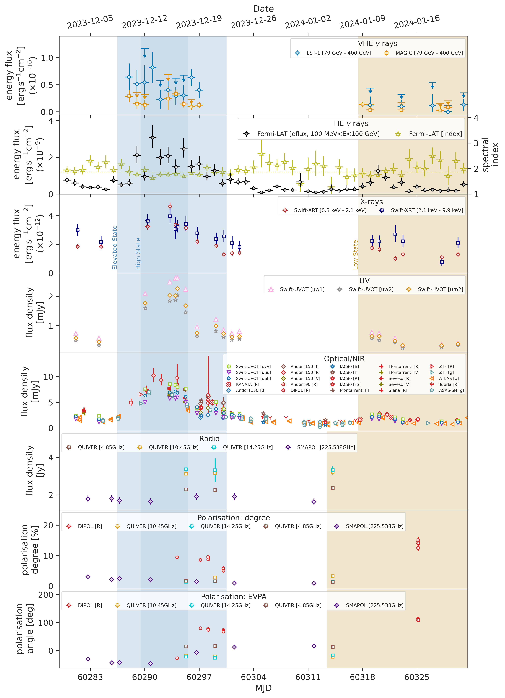
图注：Multi-wavelength lightcurves of OP 313. \(\textit{From top to bottom:}\) VHE $\gamma$ rays above 79 GeV (LST-1 and MAGIC); HE $\gamma$ rays between 100 MeV and 300 GeV (\textit{Fermi}-LAT); X-rays (\textit{Swift}-XRT); UV (\textit{Swift}-UVOT); optical and IR bands (\(\textit{Swift}-UVOT,\) ZTF, ASAS-SN, SNO, IAC80, Las Cumbres, Tuorla, Kanata, Montarrenti, Siena, Seveso, ZTF and ATLAS); radio-millimetric (QUIVER and SMAPOL); polarization degree (SNO, QUIVER and SMAPOL); and polarization angle (SNO, QUIVER and SMAPOL). Light blue band: extended high state (December 2023) used for EBL estimation. Dark blue band: multi-wavelength stable high state used for broadband SED modeling. Light brown band: low state (January 2024).
对应解读：对应“建议重点查看的图表”第1项光变曲线，以及“关键图表逐图导读”图1。
入选理由：这是判断2023年12月极端耀发是否与LST-1/MAGIC的VHE观测同步的核心图，直接展示Fermi-LAT、VHE、X射线、UV/光学、射电和偏振随时间变化，并标出用于EBL估计、高态SED建模和低态比较的时间区间，比仅有观测GTI的Fig01更能支撑“耀发约高于平均态50倍”和多波段状态划分的解读。
来源与置信度：\(arxiv_source\)；high；\(arxiv_source\) / aa58646-25.tex:figure[3]
Fig02
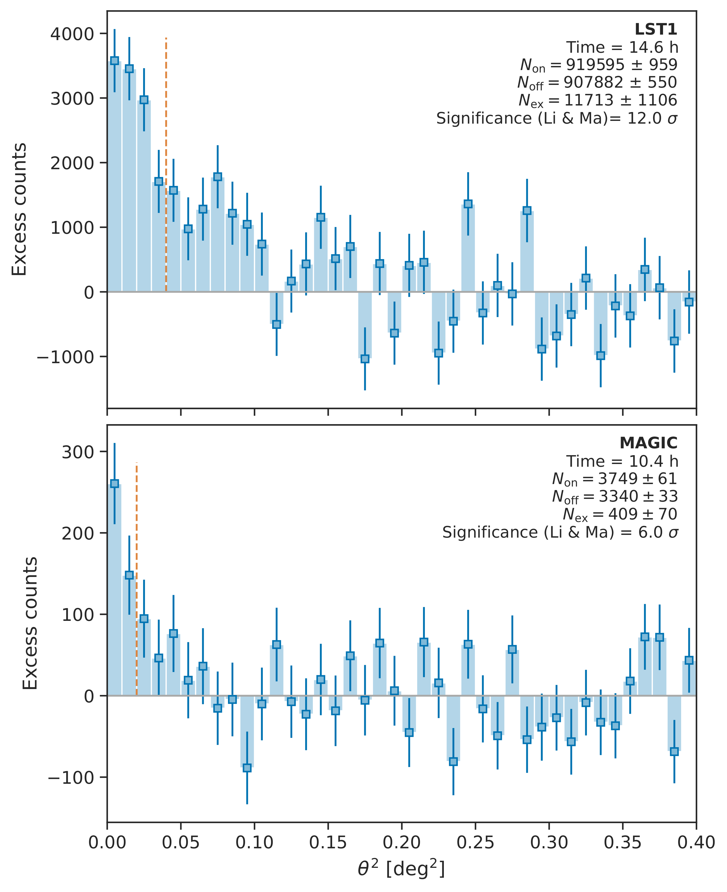
图注：Distributions of the squared angular distance of the reconstructed $\gamma$-ray directions to the nominal location of OP 313 during December 2023, derived from the excess $\gamma$-ray events. \(\textit{Top:}\) LST-1. \(\textit{Bottom:}\) MAGIC. In the case of LST-1, we obtained the distribution for energies {above 10\,GeV}. The dashed line delimits the region where events are considered to calculate the statistical significance of the detection. These signal regions are defined as the standard $\theta^2$ cuts for each instrument, which are related to their PSF, as detailed in \(\cite{abe2023}\) for LST-1 and \(\cite{2016APh....72...76A}\) for MAGIC.
对应解读：对应“建议重点查看的图表”第3项探测显著性或theta^2分布，以及“关键图表逐图导读”图2。
入选理由：这是新VHE探测的基础证据，给出LST-1和MAGIC在小theta^2区域的事件超额及信号区切割，能直接检查源信号是否集中、背景是否合理、显著性是否由少数bin支撑，科学优先级高于后续模型解释图。
来源与置信度：\(arxiv_source\)；high；\(arxiv_source\) / aa58646-25.tex:figure[2]
Fig04
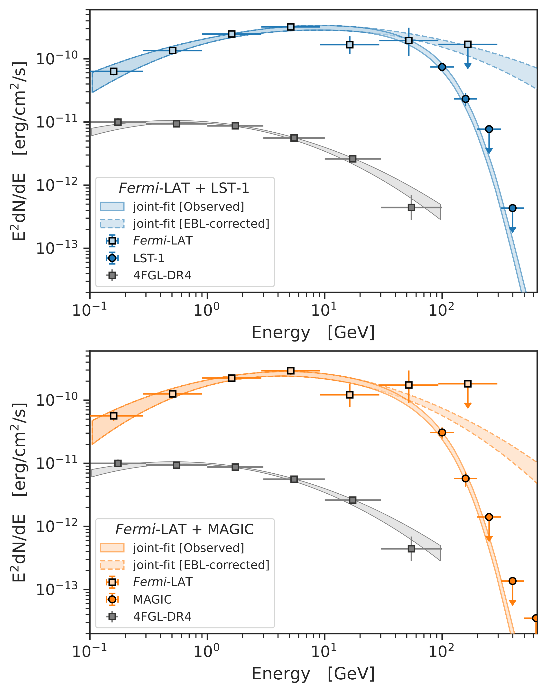
图注：Spectral energy distribution of OP 313 in the $\gamma$-ray range. \(\textit{Top}\): LST-1 data taken in December and contemporaneous \fla\ data. \(\textit{Bottom}\): MAGIC data taken in December and contemporaneous \fla\ data. 1$\sigma$ intervals are marked as colored bands with solid lines, while the intrinsic emission (EBL-corrected) is marked with lighter bands within dashed contour lines. Flux points are also represented, with squared markers and filled circles for {\(\it\) Fermi}-LAT and LST-1 or MAGIC respectively Finally, the quiescent state of the source is represented through its flux points (grey square markers) and best-fit model (grey band) from the 4FGL-DR4 catalog \(\citep{4fgl_dr3,4fgl_dr4}.\)
对应解读：对应“建议重点查看的图表”第2项HE/VHE谱图，以及“关键图表逐图导读”图3和模型拟合段落中HE到VHE连接处残差/谱形讨论。
入选理由：该图直接连接Fermi-LAT与LST-1/MAGIC的伽马射线谱点，并同时显示观测谱、EBL修正后的内禀谱、1sigma带和静止态4FGL参考，是评估VHE点是否与HE谱平滑衔接、是否需要过硬内禀谱以及EBL吸收影响的关键图。
来源与置信度：\(arxiv_source\)；high；\(arxiv_source\) / aa58646-25.tex:figure[4]
Fig07
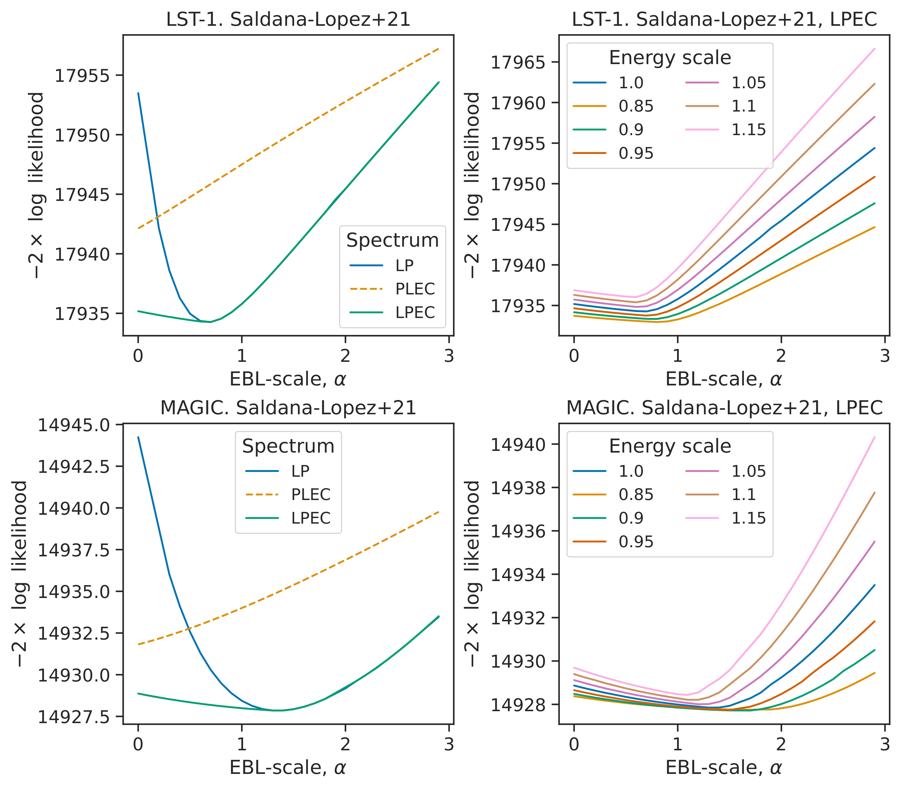
图注：Likelihood profiles for different assumed spectral shapes (LP, PLEC and LPEC) and for different energy scale factors (i.e. systematics) on the corresponding VHE data.
对应解读：对应“建议重点查看的图表”第4项EBL扫描或置信区间图，以及模型拟合段落中能标系统误差和内禀谱假设对EBL约束的影响。
入选理由：该图给出不同内禀谱形状LP、PLEC、LPEC以及不同VHE能标系统误差下的似然轮廓，最能检验EBL约束是否稳健、是否受谱形假设或能标系统误差支配，比Fig06的EBL强度背景汇总更贴近日报要求的似然/置信区间诊断。
来源与置信度：\(arxiv_source\)；high；\(arxiv_source\) / aa58646-25.tex:figure[7]
Fig08
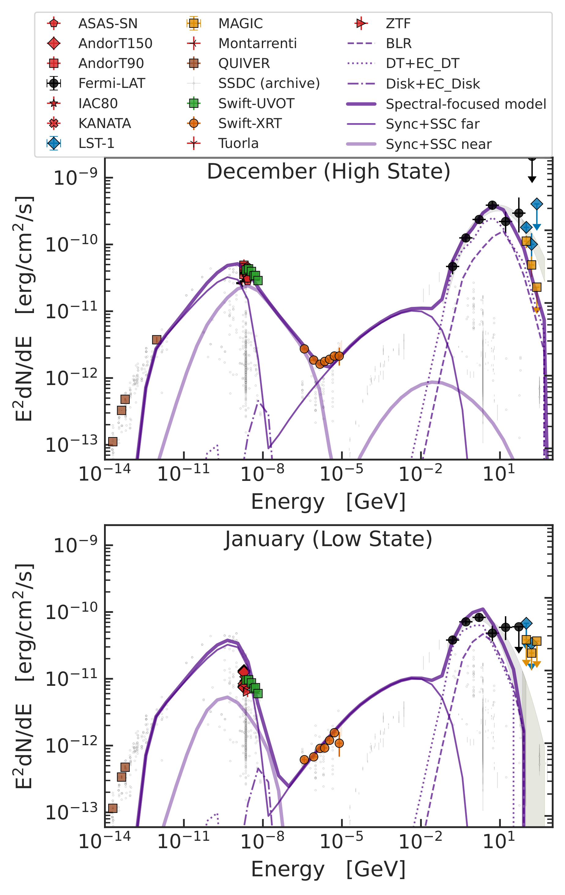
图注：{Spectral-focused} broadband SED models of OP~313. \(\textit{Top}\): {Model} during the December 2023 flare. \(\textit{Bottom}\): {Model} during the January 2024 low state. Different markers represent data at different wavelengths as indicated in the legend. Lines of different styles correspond to the different contributions to the multi-wavelength emission as detailed in the legend. Grey markers correspond to archival data extracted from the SSDC database (\url{https://tools.ssdc.asi.it/SED/}). All flux points have been corrected for extinction, hydrogen absorption and EBL attenuation.
对应解读：对应“建议重点查看的图表”第5项宽波段SED图，以及“关键图表逐图导读”图5中关于同步、SSC、外康普顿、吸积盘、尘埃环和宽线区成分叠加的讨论。
入选理由：这是spectral-focused双区宽波段SED的分解图，分别展示耀发态和低态，并用不同线型给出各辐射成分，有助于判断模型是否只是总和穿点，还是各物理成分在同步峰、热成分和高能峰位置上与数据对应。
来源与置信度：\(arxiv_source\)；high；\(arxiv_source\) / aa58646-25.tex:figure[8]
Fig09
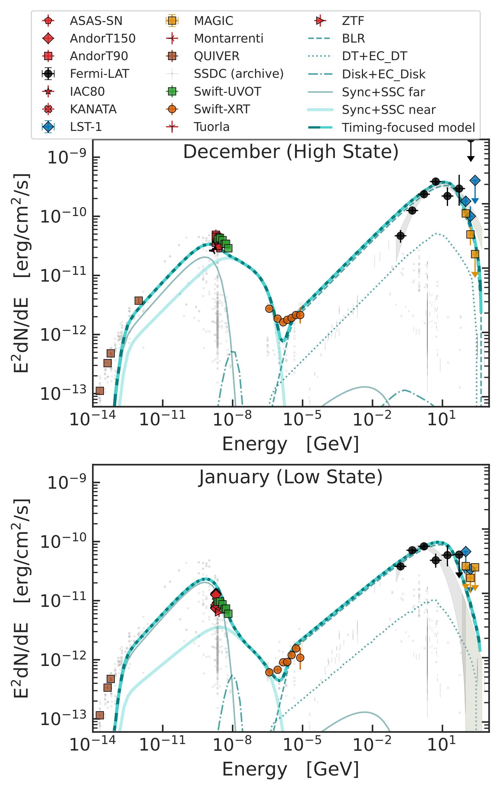
图注：{Timing-correlation broadband} SED models of OP~313. \(\textit{Top}\): {Model} during the December 2023 flare. \(\textit{Bottom}\): {Model} during the January 2024 low state. Same description as Fig.~\(\ref{fig:MWL_SED_model_balanced}.\)
对应解读：对应“关键图表逐图导读”图6和模型拟合段落中关于不同双区方案、外光子场退化和主导种子光子场不可唯一确定的讨论。
入选理由：该图展示timing-correlation宽波段SED模型，与Fig08形成对照，可直接支撑日报中“多个模型能解释伽马射线但主导外光子场未知”的判断；它比单独的总览Fig05更适合展示模型退化来自哪些辐射成分组合。
来源与置信度：\(arxiv_source\)；high；\(arxiv_source\) / aa58646-25.tex:figure[9]
强相关工作
这篇工作与此前高红移 FSRQ 的 VHE 探测直接相关，例如 PKS 1441+25、S3 0218+35、3C 279 等源都曾被用来讨论远距离 VHE 光子的传播、耀发时内禀谱以及 EBL 约束。OP 313 的红移接近 \(1\)，且由 LST-1 在 CTAO 早期阶段探测到，使它在样本位置上很有代表性：它既延续了 MAGIC、H.E.S.S. 和 VERITAS 对极端 FSRQ 耀发的传统，也预示 CTAO 低阈值大口径望远镜将更系统地捕捉类似事件。检索关键词可用 “VHE FSRQ high redshift”, “PKS 1441+25 EBL”, “3C 279 MAGIC VHE”, “LST-1 OP 313”。
在基础理论上，这篇文章连接了三条文献线：一是耀变体双峰 SED 和轻子辐射模型，二是 \(\gamma\gamma\) 吸收与 EBL 光学深度，三是 IACT 的低能阈观测和似然谱重建。相反或有张力的观点主要集中在两个方面：是否需要强 hadronic 成分或更复杂喷流结构，以及 EBL 约束是否被内禀谱假设过度支配。检索关键词可用 “external Compton FSRQ BLR torus”, “EBL optical depth gamma gamma absorption”, “intrinsic curvature versus EBL attenuation”, “two-zone leptonic model blazar”。
相似工作：
- https://arxiv.org/abs/1512.04435
- https://arxiv.org/abs/2605.26681
基础理论 / 方法工作：
- https://arxiv.org/abs/0805.1841
- https://arxiv.org/abs/1007.1459
- https://arxiv.org/abs/0905.1115
相反观点 / 张力线索：
- https://arxiv.org/abs/1101.4164
2. Strong Constraints on Millisecond Pulsar Injection Spectra from Fermi-LAT Observations of the Galactic Center
- 来源：arXiv / astro-ph.HE
- 链接：https://arxiv.org/abs/2605.26220v1
- 作者：Jordan Koechler, Pedro De la Torre Luque, Mattia Di Mauro
- 评分：novelty 8/10，importance 8/10，relevance 10/10，final 9.70/10
- 推荐理由：Fermi-LAT Galactic Center excess and MSP-origin constraints are directly in high-priority gamma-ray astronomy; joint prompt/IC modeling and comparison to MAGIC/CTAO make this very relevant and worth reading.
中文题目：用费米-LAT 银河中心观测强约束毫秒脉冲星的注入谱
做了什么：这篇论文检验了一个具体版本的“毫秒脉冲星解释银河中心伽马射线超额”图像：如果银河核球中的毫秒脉冲星既产生脉冲星磁层的 prompt 伽马射线，也把自旋能量注入到电子-正电子对中，那么这些 \(e^\pm\) 会在星光、红外和微波背景上产生逆康普顿伽马射线。作者把近期基于先进星际辐射模型得到的 Fermi-LAT 银河中心超额谱作为约束，联合计算 prompt 与逆康普顿贡献，对 \(e^\pm\) 注入效率相对于伽马射线效率的比值 \(\eta_e/\eta_\gamma\) 给出上限。主要结论是：在相当宽的注入谱假设下，现有 Fermi-LAT 数据已经强烈限制了毫秒脉冲星向高能 \(e^\pm\) 注入能量的能力，约束强于球状星团 MAGIC 观测给出的限制，并且可与未来 CTAO 指向银河核球的预期灵敏度竞争。
为什么重要：银河中心超额长期处在暗物质湮灭、未分辨毫秒脉冲星、宇宙线传播和星际辐射建模之间的交叉张力中。很多讨论只比较毫秒脉冲星的磁层伽马射线谱是否像超额谱，而这篇文章强调：若毫秒脉冲星真的贡献了银河中心超额，它们还应有伴随的 \(e^\pm\) 注入和逆康普顿辐射；这为毫秒脉冲星解释提供了一个独立且更难回避的能量预算检验。
理论 / 观测 / 仪器方法价值：对理论而言，它把毫秒脉冲星解释从“谱形拟合”推进到“多通道能量闭合”检验。对观测而言，它说明 Fermi-LAT 的 GeV 数据本身已能约束 TeV 相关的 \(e^\pm\) 注入，而不必完全等待 Cherenkov 阵列。对方法而言，它提供了将银河中心超额谱、核球源分布、电子传播和逆康普顿模板联合起来约束 \(\eta_e/\eta_\gamma\) 的可复用框架。
为什么应该关注：如果你关注银河中心超额，这篇文章告诉你：毫秒脉冲星解释不能只问“能否凑出 \(1\text{--}3\,\mathrm{GeV}\) 的峰”，还必须问“同一批源是否会过量产生逆康普顿伽马射线”。如果你研究脉冲星风、球状星团、CTA 或暗物质间接探测，这篇文章给出的 \(\eta_e/\eta_\gamma\) 上限会直接影响源人口模型、TeV 预期信号和背景建模。
展开详细解读：文章讲解、背景、理论、重点章节、图表与相关工作
文章详细讲解
科学问题：银河中心超额，通常指 Fermi-LAT 在扣除常规星际弥散辐射和点源后，在银河中心数度到十几度范围内剩余的 GeV 伽马射线成分。毫秒脉冲星是一类有吸引力的解释，因为单个毫秒脉冲星的磁层辐射通常在 GeV 能段呈指数截断，谱形与超额相似；而且核球中的老年恒星族可能自然伴随一批未分辨毫秒脉冲星。本文的关键问题不是重新证明毫秒脉冲星能不能拟合 prompt 光子谱，而是追问：如果这些毫秒脉冲星同时向周围介质注入 \(e^\pm\)，其逆康普顿辐射是否已经被 Fermi-LAT 数据排除或强烈限制。
作者怎么做：论文把毫秒脉冲星的 prompt 伽马射线和注入 \(e^\pm\) 后产生的逆康普顿辐射放在同一个核球空间分布下建模。prompt 部分可理解为直接来自脉冲星磁层的 GeV 光子；逆康普顿部分来自 \(e^\pm\) 在银河中心强星光和红外辐射场中散射低能光子。作者使用近期 Fermi-LAT 银河中心超额谱，这些谱来自更先进的星际辐射模型和数据分析，因而比早期单一背景模型更适合用来做稳健约束。他们扫描不同的 \(e^\pm\) 注入谱形、能量截断和传播相关设定，并把约束表达为效率比 \(\eta_e/\eta_\gamma\)，即注入到 \(e^\pm\) 的能量相对 prompt 伽马射线能量的比例。
关键结果：现有 Fermi-LAT 数据已经对 \(\eta_e/\eta_\gamma\) 给出强上限。直观上，如果毫秒脉冲星要解释银河中心超额的 prompt 分量，那么 \(\eta_\gamma\) 已被超额归一化大致固定；一旦 \(\eta_e\) 太高，传播后的 \(e^\pm\) 会在相关能段产生额外逆康普顿光子，使总谱超过观测允许的超额谱或其误差带。论文强调，这些上限在广泛注入情形下强于从球状星团观测，特别是 MAGIC 对球状星团 TeV 辐射非探测所推导的约束，并且与未来 CTAO 对银河核球的预期约束有竞争力。
局限和下一步：这类结论不可避免地依赖星际辐射场、扩散系数、能量损失、核球毫秒脉冲星空间分布和 Fermi-LAT 弥散背景建模。银河中心区域的系统误差往往不是简单统计误差，残差谱随所选星际辐射模型可能变化。下一步应把不同核球形态、非均匀扩散、银河中心风、点源非泊松统计和多波段约束联合起来；同时，CTA/CTAO、LHAASO 类 TeV 数据以及更完整的球状星团样本可检验同一 \(\eta_e/\eta_\gamma\) 参数是否在不同环境中一致。
背景知识
银河中心超额是 Fermi-LAT 时代高能天体物理中最持久的问题之一。最初的发现来自对银河中心区域弥散伽马射线背景的建模残差：在扣除 π0 衰变、轫致辐射、逆康普顿辐射、点源和各类气体模板后，仍有一个空间上近似球状、能谱在几 GeV 附近隆起的剩余成分。这个特征既像某些弱相互作用暗物质湮灭模型，也像一群未分辨毫秒脉冲星的叠加辐射。
毫秒脉冲星解释的吸引力来自两点。第一，已知毫秒脉冲星的伽马射线谱常可用带指数截断的幂律描述，截断能量通常在几 GeV，和银河中心超额峰值相近。第二，银河核球是老年恒星聚集区，理论上可能通过低质量 X 射线双星演化产生大量毫秒脉冲星。若这些源多数低于 Fermi-LAT 点源探测阈值，它们的总辐射会表现为弥散状残差。
但历史争论一直没有完全解决。暗物质解释与毫秒脉冲星解释在谱形和角分布上都可以调到相似；非泊松模板拟合曾报告超额具有点源性，但也被指出容易受弥散背景错配和源群函数假设影响；恒星核球模板与暗物质晕模板的偏好也依赖数据处理和背景模型。因此，单纯比较 prompt 伽马射线谱形不足以定案，需要寻找同一物理模型的附加预言。
这篇论文重新审视问题的原因在于两方面进展。其一，Fermi-LAT 银河中心分析使用了更成熟的星际辐射模型，能够给出一组代表系统误差的超额谱。其二，毫秒脉冲星不只是伽马射线灯泡，它们的自旋能量可通过脉冲星风注入相对论 \(e^\pm\)。银河中心辐射场能量密度高，逆康普顿冷却效率强，因此 \(e^\pm\) 通道可能产生可观测的附加伽马射线。
一个常见误区是把“毫秒脉冲星能解释银河中心超额”等同于“毫秒脉冲星模型已经安全”。实际上，若要求这些源同时满足 prompt 光度函数、核球恒星分布、低质量 X 射线双星计数、射电探测限制、球状星团类比和 \(e^\pm\) 逆康普顿约束，允许参数空间会明显缩小。本文正是从 \(e^\pm\) 能量预算这一角度收紧了毫秒脉冲星解释。
基础理论 / 方法脉络
基础物理图像可以从毫秒脉冲星的自旋能量损失开始。毫秒脉冲星是高速旋转、强磁场中子星，其转动能通过磁层电场、粒子加速和 Poynting 通量流失。一部分能量以曲率辐射或磁层级联产生的 prompt 伽马射线释放，另一部分进入脉冲星风中的相对论电子和正电子。本文关心的量 \(\eta_\gamma\) 和 \(\eta_e\) 分别表示自旋能量转化为 prompt 伽马射线和注入 \(e^\pm\) 的效率。
注入的 \(e^\pm\) 不会原地保持能量，而是在银河中心磁场、辐射场和气体环境中传播。对 GeV 到 TeV 电子而言，主要能量损失包括逆康普顿散射和同步辐射；在较低能段还可能有电离、库仑和轫致损失。逆康普顿过程把星光、红外和宇宙微波背景光子提升到 X 射线至伽马射线能段。银河中心的星光和红外光子密度高，因此相同 \(e^\pm\) 注入在这里比在低辐射场环境中更容易产生可观测伽马射线。
本文的模型假设可概括为：银河核球中有一群毫秒脉冲星，它们的空间分布跟某个核球模板相关；prompt 伽马射线强度按 \(\eta_\gamma\) 归一化；\(e^\pm\) 注入谱按给定函数族设定，并按 \(\eta_e\) 归一化；随后通过传播方程得到稳态 \(e^\pm\) 分布，再折算逆康普顿伽马射线谱和空间模板。这样，观测到的银河中心超额不再只是一个 prompt 模板，而是 prompt 加逆康普顿的总和。
关键观测量是 Fermi-LAT 在多个能量 bin 中给出的超额谱及其协方差或误差估计。若模型的 prompt 分量已经用来解释几 GeV 超额峰，那么逆康普顿分量通常会在相邻 GeV 或更高能段增加通量。模型拟合的核心就是检查在不同 \(e^\pm\) 注入谱下，允许多大的 \(\eta_e/\eta_\gamma\) 才不会使总通量超过数据允许范围。
常见退化包括 \(\eta_e/\eta_\gamma\) 与注入谱硬度、最高能量、扩散系数、辐射场强度和空间模板的退化。硬谱或高截断能可能把逆康普顿贡献推向更高能段；强扩散会摊薄中心区域表面亮度；强辐射场会提高冷却和辐射效率。系统误差主要来自银河中心弥散背景错配，因为所谓“超额谱”本身是背景扣除后的残差，而不是直接观测到的孤立源谱。
公式与推导
可以把推导从毫秒脉冲星的自旋能量损失写起。单个源的可用功率为
其中 \(I\) 是中子星转动惯量，\(\Omega\) 是角速度，\(\dot\Omega\) 是自旋减慢率。本文不需要逐个解析脉冲星，而是把核球源群的总自旋损失功率记为 \(L_{\rm sd,tot}\)。prompt 伽马射线和 \(e^\pm\) 注入的总功率可写成
因此被约束的核心量是 \(\eta_e/\eta_\gamma=L_e/L_\gamma\)。这个比值比绝对效率更稳健，因为 prompt 归一化可由银河中心超额本身标定。
设核球源的空间分布为 \(\rho_{\rm MSP}(\mathbf r)\)，归一化满足 \(\int d^3r\,\rho_{\rm MSP}(\mathbf r)=1\)。若单个源群的 \(e^\pm\) 注入谱为 \(q(E)\)，则体注入率可写为
这里 \(E\) 是电子或正电子能量，分母保证 \(\int dE\,E\int d^3r\,Q_e(E,\mathbf r)=L_e\)。常用注入谱可取幂律截断形式
其中 \(p\) 是谱指数，\(E_{\rm cut}\) 是最高能量截断，\(E_0\) 是参考能量。
传播部分通常由稳态扩散-损失方程描述：
这里 \(n_e(E,\mathbf r)\) 是稳态 \(e^\pm\) 数密度谱，\(D(E,\mathbf r)\) 是扩散系数，\(b(E,\mathbf r)=-dE/dt\) 是能量损失率。若在局部近似中忽略空间扩散，读者可得到量级关系
它说明强冷却会降低高能粒子驻留时间，但也把注入能量高效转化为辐射。
逆康普顿发射率可写为
其中 \(E_\gamma\) 是出射光子能量，\(E_e\) 是电子能量，\(\epsilon\) 是靶光子能量，\(n_{\rm ph}\) 是辐射场光子数密度，\(d\sigma_{\rm IC}/dE_\gamma\) 是 Klein-Nishina 微分截面。在 Thomson 极限下，典型光子能量满足
其中 \(\gamma_e=E_e/(m_ec^2)\)。这条关系让读者快速判断哪些 \(e^\pm\) 能量会落入 Fermi-LAT 的 GeV 能段。
从发射率到观测通量，需要沿视线积分：
这里 \(s\) 是视线距离，\((l,b)\) 是银经和银纬。prompt 分量可类似写成核球模板乘以谱形：
其中 \(A_\gamma\) 与 \(\eta_\gamma L_{\rm sd,tot}\) 成正比，\(T_{\rm bulge}\) 是空间模板，\(S_\gamma\) 是归一化谱形。
总模型在第 \(i\) 个能量 bin 中的通量可表示为
其中 \(\theta\) 收集所有模型参数。若观测给出超额谱 \(F_i\) 和协方差 \(C_{ij}\)，可用高斯近似构造
对 \(\eta_e/\eta_\gamma\) 的上限通常来自 profile likelihood 或等价的 \(\Delta\chi^2\) 判据，例如单参数 \(95\%\) 置信上限近似满足
这些公式把自旋能预算、注入谱、传播、逆康普顿辐射和观测谱残差连接成一条可检查的约束链。
模型拟合 / 应用方法
这篇工作的拟合量可以分成三类。第一类是 prompt 毫秒脉冲星分量的归一化和谱形参数，它们决定 \(\eta_\gamma L_{\rm sd,tot}\) 如何匹配银河中心超额的 GeV 峰。第二类是 \(e^\pm\) 注入参数，包括 \(\eta_e/\eta_\gamma\)、谱指数 \(p\)、截断能量 \(E_{\rm cut}\) 或其他注入谱族参数。第三类是传播与环境参数，如扩散系数、能量损失率、星际辐射场模型和空间模板。
统计上，核心是把模型预测的 prompt 加逆康普顿总谱与 Fermi-LAT 提供的银河中心超额谱比较。若论文使用多套星际辐射模型给出的超额谱，读者应把它们看作系统误差包络，而不是简单重复观测。理想做法是使用包含能量 bin 相关性的协方差矩阵；若只使用对角误差，约束可能显得过强或过弱，取决于系统误差在不同能段的相关结构。
残差诊断很重要。若增加 \(\eta_e/\eta_\gamma\) 后模型主要在高能端超过数据，说明约束由逆康普顿尾部驱动；若在 GeV 峰附近已经超出，则说明注入谱或辐射场把 \(e^\pm\) 能量转化到了 Fermi-LAT 最敏感的能段。读者应检查最佳拟合是否只是通过降低 prompt 归一化来给逆康普顿让路，因为这会改变毫秒脉冲星解释原本需要匹配的超额谱形。
主要退化包括 \(\eta_e/\eta_\gamma\) 与 \(E_{\rm cut}\) 的退化、与 \(p\) 的退化、与扩散长度的退化以及与核球空间模板的退化。更硬或更高截断的注入谱通常提高高能逆康普顿通量；更快扩散可能把辐射摊到更大的角尺度，使在所选 ROI 内的约束改变；更强辐射场会增加冷却和 IC 光度，但 Klein-Nishina 效应会改变高能端标度。
模型可能失败的地方同样清楚。若银河中心传播环境与常规银河宇宙线传播模型差别很大，例如存在强风、各向异性扩散或局部湍流屏蔽，则稳态 IC 模板可能偏离实际。如果超额谱的某部分来自背景建模残差而非真实天体成分，那么用它作为毫秒脉冲星 prompt 标定也会引入偏差。实际应用中，这套框架最适合做保守上限和模型排除，而不是精确测量 \(\eta_e/\eta_\gamma\) 的真实值。
重点章节 / 结果段落怎么读
数据与超额谱部分应优先阅读。这里决定了论文使用哪些 Fermi-LAT 银河中心超额谱、这些谱来自哪些星际辐射模型、ROI 和能段如何选择，以及误差是否包含系统不确定性。读者要特别注意这些谱是“背景扣除后的残差”，不是直接观测到的孤立源通量。
毫秒脉冲星源群建模部分是第二个重点。应看作者如何设定核球空间分布、prompt 谱形和归一化方式，以及 \(\eta_\gamma\) 如何与银河中心超额连接。若空间模板采用盒状核球、核球恒星分布或其他参数化形式，不同选择会影响视线积分和 IC 形态。
\(e^\pm\) 注入与传播方法部分是全文的物理核心。读者应检查注入谱族、扫描范围、能量截断、传播代码或半解析方法、星际辐射场模型和能量损失处理。特别要看作者是否把 prompt 与 IC 分量在同一源群归一化下联合处理。
结果部分应关注 \(\eta_e/\eta_\gamma\) 上限随注入谱参数的变化，而不是只看单个代表点。最有信息量的是约束曲线或二维排除图：它们告诉你哪些毫秒脉冲星风模型已不再可行，哪些仍可逃过 Fermi-LAT 限制。
讨论与比较部分通常把本文约束同 MAGIC 球状星团结果和 CTAO 预期灵敏度比较。这里要注意环境差异：球状星团的辐射场、磁场、距离和源群年龄与银河核球不同，因此比较的是效率约束的物理意义，而不是完全相同的观测系统。
建议重点查看的图表
-
银河中心超额谱与模型总谱图：看横轴 \(E_\gamma\)、纵轴通常为 \(E_\gamma^2 d\Phi/dE_\gamma\) 或通量，检查 prompt、IC 和总和是否分别画出，以及高能端是否由 IC 限制。
-
\(\eta_e/\eta_\gamma\) 上限随注入谱指数 \(p\) 或截断能量 \(E_{\rm cut}\) 的曲线：看哪些参数区间约束最强，是否存在因 IC 峰移出 Fermi-LAT 能段而变弱的区域。
-
不同星际辐射模型或不同 GCE 谱的比较图：看系统误差包络是否大于统计误差，以及结论是否由某一套背景模型单独驱动。
-
prompt 与 IC 空间模板或径向剖面：看 IC 分量是否比 prompt 更扩展，ROI 选择会如何改变约束。
-
与 MAGIC 球状星团和 CTAO 预期灵敏度的比较图：看比较的是通量灵敏度、效率比上限还是能量注入功率，避免把不同物理量混读。
-
拟合残差或 \(\Delta\chi^2\) 诊断：看超过上限时残差集中在哪些能量 bin，判断约束是否由少数高能 bin 或某个系统误差敏感区域主导。
关键图表逐图导读
图 1：建议把它当作问题设定图来读。横轴通常会是伽马射线能量 \(E_\gamma\)，纵轴是银河中心超额通量或能量通量。数据点代表 Fermi-LAT 提取出的 GCE 谱，模型线可能区分 prompt 毫秒脉冲星分量、逆康普顿分量和二者总和。主要结论是：即便 prompt 分量本身能贴合 GeV 峰，额外 IC 分量也不能任意增加。读图陷阱是不要把误差棒只理解为泊松误差，银河中心这里的系统误差通常更重要。
图 2：若论文给出不同 \(e^\pm\) 注入谱的 IC 谱，应重点看 IC 峰的位置如何随 \(p\) 和 \(E_{\rm cut}\) 移动。横轴为 \(E_\gamma\)，纵轴为 IC 通量；多条线对应不同注入参数。硬谱和高截断通常增强高能 IC 尾部。陷阱是 Thomson 标度 \(E_\gamma\propto\gamma_e^2\epsilon\) 在高能端会受 Klein-Nishina 修正，不能简单外推。
图 3：上限图通常是全文最关键的结果图。横轴可能是 \(E_{\rm cut}\)、\(p\) 或注入模型编号，纵轴是 \(\eta_e/\eta_\gamma\) 的 \(95\%\) 置信上限。曲线越低，约束越强。若图中有多种颜色或阴影，通常表示不同 GCE 谱、不同传播模型或不同背景系统。读者应关注约束的稳健低谷，而不是只引用最强的一条曲线。
图 4：若有与 MAGIC 或 CTAO 的比较图，应先确认纵轴定义是否同为 \(\eta_e/\eta_\gamma\)。球状星团约束来自非探测 TeV 辐射，银河中心约束来自 Fermi-LAT GCE 谱不允许的 IC 额外贡献；二者能段和环境不同。主要结论是当前 Fermi-LAT 银河中心数据已经不只是弱约束，而是达到或超过若干外部观测的限制水平。
图 5：若论文展示空间分布或径向剖面，横轴可能是离银河中心角距离，纵轴为表面亮度。prompt 模板一般更直接跟随源分布，IC 模板会因 \(e^\pm\) 传播而变宽。读图时要注意 ROI 边界和掩膜，因为扩展分量的通量有一部分可能落在分析区域之外，影响效率上限。
图 6：残差或 \(\Delta\chi^2\) 图用于判断统计约束的来源。横轴为能量 bin 或参数值，纵轴为残差、拉动量或 \(\Delta\chi^2\)。若少数高能 bin 主导约束，应检查这些 bin 的背景建模是否稳健；若多个能段一致排斥高 \(\eta_e/\eta_\gamma\)，结论更可信。
论文原图 / 可嵌入图片
Fig01
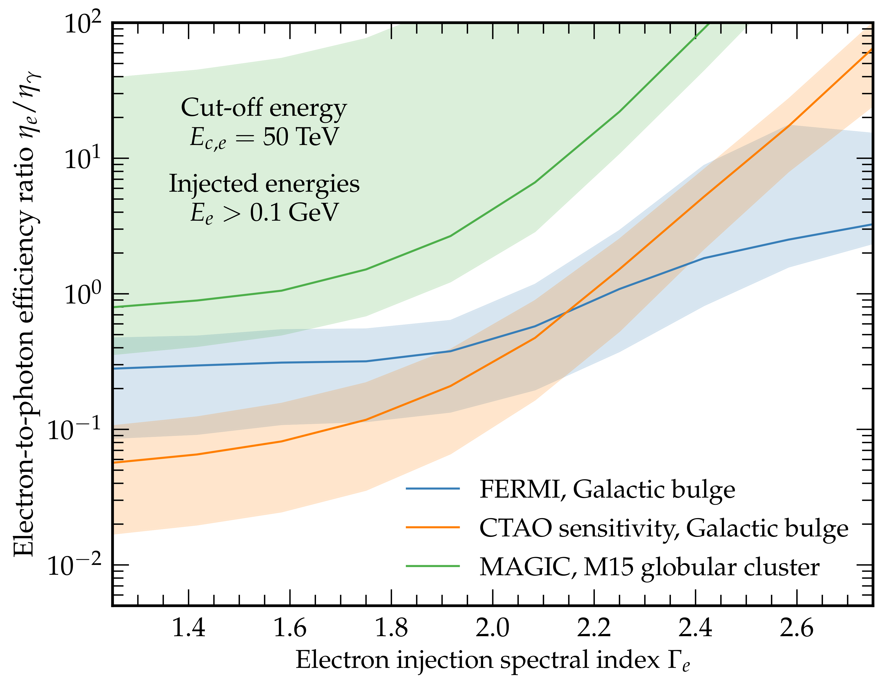
图注：\textbf{Upper limits (95\% C.L.) on the ratio of electron-to-photon efficiencies $\eta_e/\eta_\gamma$, for MSPs under different electron injection scenarios}. The solid blue line shows the constraints derived from \(\textsc{Fermi}-LAT\) observations using the Pohl22 IEM, while the orange line includes the projected sensitivity of \(\textsc{Ctao}.\) The green line, shown for reference, corresponds to the best current upper limits, derived from \(\textsc{Magic}\) observations of the M15 globular cluster~\(\cite{MAGIC:2019aof}.\) The colored bands represent the corresponding systematic uncertainties, as explained in the text.
对应解读：建议重点查看的图表第2、5项；关键图表逐图导读中的图3和图4；模型拟合段落关于\(\eta_e/\eta_\gamma\)上限及与MAGIC、CTAO比较。
入选理由：这是全文核心结果图，直接给出MSP电子到光子效率比\(\eta_e/\eta_\gamma\)的95%置信上限，并同时包含Fermi-LAT、CTAO预期和MAGIC球状星团约束及系统误差带，最能支撑日报中关于“当前银河中心Fermi-LAT约束已强于或竞争于外部观测”的主要结论。
来源与置信度：\(arxiv_source\)；high；\(arxiv_source\) / main.tex:figure[1]
Fig02
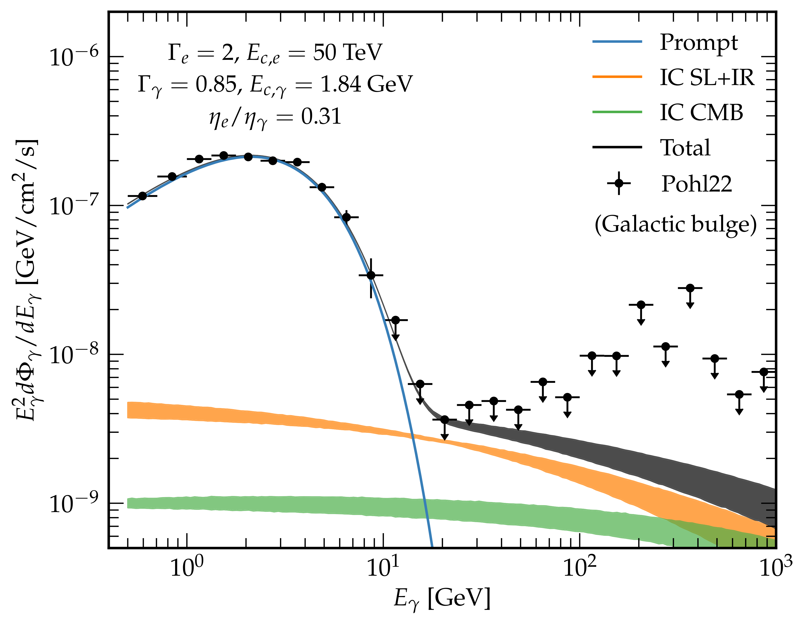
图注：\textbf{Predicted total photon flux (black band) from MSPs in the GB, fitted to the \textsc{Fermi}-LAT data extracted using the Pohl22 IEM (black points).} The solid blue line represents the prompt emission, while the orange and green bands show the systematic uncertainties of the IC fluxes, related to the choice of the starlight (SL) and infrared (IR) photon field model (F98 and R12) and the magnetic field (3 to 7 $\mu$G).
对应解读：建议重点查看的图表第1、3项；关键图表逐图导读中的图1和图2；模型拟合段落关于prompt加IC总谱与Fermi-LAT GCE谱比较。
入选理由：该图展示Fermi-LAT银河中心超额数据点、prompt分量、IC分量以及总光子通量拟合，是理解约束来源的基础图。它还能显示星光/红外辐射场和磁场变化带来的IC系统不确定性，直接对应日报强调的高能端IC额外贡献不能超过观测谱。
来源与置信度：\(arxiv_source\)；high；\(arxiv_source\) / main.tex:figure[2]
Fig03
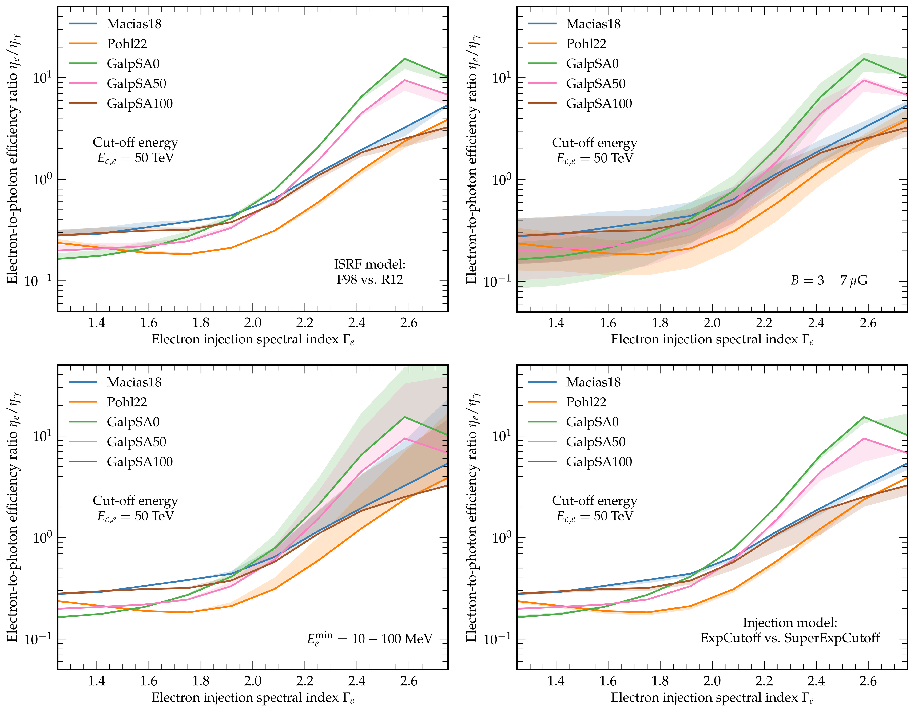
图注：\(\textit{Top Left:}\) Upper limits on $\eta_e/\eta_\gamma$ from the different IEMs (\(\textsc{Fermi}-LAT\) datasets) used in our analysis. The colored bands represent a variation in the starlight and infrared photon field model (F98 and R12) adopted in our prediction. \(\textit{Top Right:}\) Same as the previous panel, but the bands showcase the impact of adopting different average magnetic field values (from 3 to 7 $\mu$G). \(\textit{Bottom Left:}\) Same as the other panels, but the bands showcase the impact of adopting different minimal MSP-injected $e^\pm$ energies $E_e^{\rm min}$ (from 10 to 100 MeV). \(\textit{Bottom Right:}\) Same as the other panels, but the bands showcase the impact of adopting a power-law with a super-exponential cutoff for the prompt $\gamma$-ray injection spectrum. In all of the panels, the solid line represents the results when using F98 and $5.4\mu$G, $E_e^{\rm{min}}=100$ MeV and a regular power-law with exponential cutoff for the prompt MSP-injected $\gamma$-rays.
对应解读：建议重点查看的图表第2、3项；关键图表逐图导读中的图3；模型拟合段落关于不同IEM、辐射场、磁场、最低注入能和prompt谱形系统误差。
入选理由：该图系统比较不同Fermi-LAT数据/IEM和多种物理假设对\(\eta_e/\eta_\gamma\)上限的影响，是判断结论是否由单一背景模型驱动的关键证据。多面板结构清楚展示系统误差包络，科学解释价值高于单一参数曲线。
来源与置信度：\(arxiv_source\)；high；\(arxiv_source\) / main.tex:figure[3]
Fig05
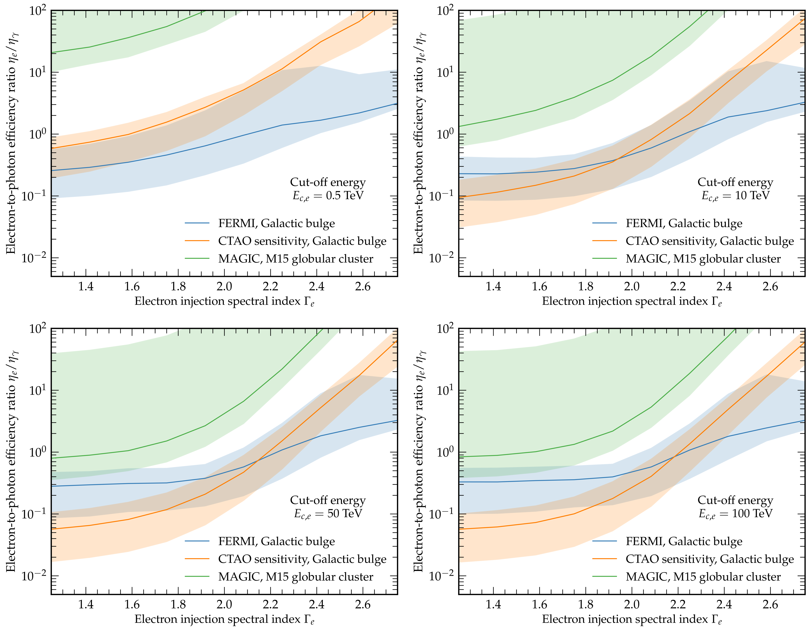
图注：Same as Fig.~\(\ref{fig:moneyplot},\) except when adopting different values of the $e^\pm$ injection cut-off energy $E_{c,e}$: 0.5 TeV (upper left panel), 10 TeV (upper right panel), 50 TeV (lower left panel), and 100 TeV (lower right panel).
对应解读：建议重点查看的图表第2项；关键图表逐图导读中的图2和图3；模型拟合段落关于\(\eta_e/\eta_\gamma\)与电子截断能量\(E_{c,e}\)的退化。
入选理由：该图专门展示不同电子注入截断能量\(E_{c,e}\)下的上限变化，直接支撑日报关于注入谱参数、IC峰位置和效率比约束强弱之间关系的讨论。它补充Fig01的基准结果，有助于说明约束在宽广注入情形下是否稳健。
来源与置信度：\(arxiv_source\)；high；\(arxiv_source\) / main.tex:figure[5]
Fig04
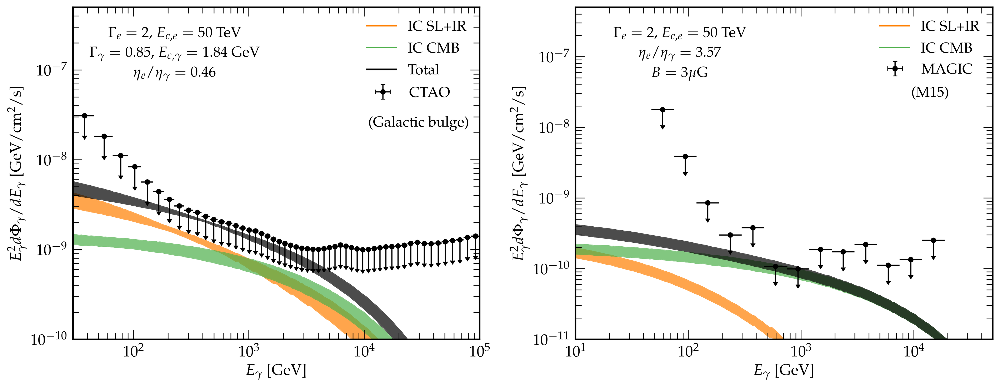
图注：\(\textit{Left:}\) Predicted total photon flux (black band) from MSPs in the GB, fitted to the \(\textsc{Ctao}\) sensitivity (black points). The fitted parameters are the same as in Fig.~\(\ref{fig:FitExample},\) except for the efficiency ratio $\eta_e/\eta_\gamma$. The orange band shows the systematic uncertainties related to the choice of the starlight and infrared photon field model (F98 and R12) and the magnetic field (3 to 7 $\mu$G), while the green band represents the ICS contribution on the CMB. \(\textit{Right:}\) Predicted total photon flux (green) from MSPs in the M15 globular cluster, fitted to the observations from \(\textsc{Magic}\) (black points). The prediction has been made for $B=1\,\mu$G, and the bands represents the uncertainties coming from the \(\textsc{Fermi}-LAT\) measurement of $G_{\gamma}(> 100\,\rm{MeV})$.
对应解读：建议重点查看的图表第5项；关键图表逐图导读中的图4；详细解释中关于MAGIC球状星团和CTAO未来灵敏度的比较。
入选理由：该图给出CTAO灵敏度场景和M15球状星团MAGIC观测下的模型通量拟合，用来核对Fig01中外部约束比较的物理含义。虽然它不是效率比上限主图，但能避免把通量灵敏度、非探测约束和效率比限制混读。
来源与置信度：\(arxiv_source\)；high；\(arxiv_source\) / main.tex:figure[4]
强相关工作
这篇工作直接连接三条文献线索。第一条是银河中心超额本身，包括暗物质湮灭解释、毫秒脉冲星源群解释、核球恒星模板解释和非泊松点源统计。建议检索关键词包括 “Galactic Center excess Fermi-LAT millisecond pulsars”, “non-Poissonian template fitting GCE”, “boxy bulge template gamma rays” 和 “dark matter interpretation Galactic Center excess”。
第二条是毫秒脉冲星 \(e^\pm\) 注入和逆康普顿辐射，尤其是球状星团中的 TeV 非探测或候选探测。球状星团常被用作毫秒脉冲星风效率的外部标尺，但它们的辐射场和扩散环境与银河核球不同。建议检索 “MAGIC globular cluster millisecond pulsar inverse Compton”, “MSP lepton injection efficiency”, “CTA Galactic bulge millisecond pulsars” 和 “pulsar wind electron positron injection spectrum”。
第三条是星际辐射模型和宇宙线传播系统误差。银河中心任何残差分析都高度依赖气体分布、源分布、辐射场和扩散参数。与本文可能存在张力的观点包括：GCE 主要是弥散背景错配、GCE 主要是暗物质、或点源性证据不足以支持毫秒脉冲星。阅读本文时应把 \(\eta_e/\eta_\gamma\) 上限理解为在给定 GCE 谱和传播模型族下的强约束，而非完全模型无关的定理。
相似工作：
- https://arxiv.org/abs/2605.26220
- https://arxiv.org/abs/1506.05124
- https://arxiv.org/abs/1705.00009
基础理论 / 方法工作：
- https://arxiv.org/abs/0910.2998
- https://arxiv.org/abs/1402.6703
- https://arxiv.org/abs/1407.5625
相反观点 / 张力线索：
- https://arxiv.org/abs/1506.05104
- https://arxiv.org/abs/1705.00009
- https://arxiv.org/abs/1911.12369
3. GWTC-4.0: Updating the Gravitational-Wave Transient Catalog with Observations from the First Part of the Fourth LIGO-Virgo-KAGRA Observing Run
- 来源：arXiv / astro-ph.HE
- 链接：https://arxiv.org/abs/2508.18082v2
- 作者：The LIGO Scientific Collaboration, the Virgo Collaboration, the KAGRA Collaboration, A. G. Abac, I. Abouelfettouh, F. Acernese, K. Ackley, C. Adamcewicz
- 评分：novelty 8/10，importance 10/10，relevance 7/10，final 9.35/10
- 推荐理由：Core GWTC-4.0 catalog paper doubling the compact-binary sample and reporting high-SNR events; highly important for HE/multimessenger context despite limited direct gamma-ray relevance.
中文题目：GWTC-4.0：用 LIGO-Virgo-KAGRA 第四轮观测前半段数据更新引力波暂现源目录
做了什么：这篇目录论文发布了 GWTC-4.0，把 LIGO、Virgo、KAGRA 在第四轮观测前半段 O4a 以及之前工程运行中发现的致密双星并合候选体纳入统一目录。新数据中有 128 个候选体满足天体物理起源概率 \(p_{\rm astro}\geq 0.5\) 且通过事件验证，其中 86 个误警率低于 \(1\,{\rm yr}^{-1}\) 并给出详细源参数。新事件主要与双黑洞和少量中子星-黑洞系统一致，包括 GW230518_125908 和 GW230529_181500；目录中双黑洞分量质量范围进一步扩展，且首次出现网络信噪比超过 30 的双黑洞事件。GWTC-4.0 使公开致密双星候选体总数达到 218 个，基本把 GWTC-3 的样本量翻倍。
为什么重要：它重要不只是因为“又多了一批事件”，而是因为样本量、质量范围、高信噪比事件和搜索选择函数都进入了新阶段。双黑洞质量谱、并合率红移演化、自旋分布、质量间隙、极端质量系统和波形系统误差，都依赖统计样本而不是单个事件。O4a 的 128 个新候选体会直接改变后续群体推断、广义相对论检验、宇宙学标准警报器分析和电磁对应体触发策略。
理论 / 观测 / 仪器方法价值：对观测而言，GWTC-4.0 给出了统一的候选体清单、误警率、\(p_{\rm astro}\)、事件验证和一批源参数后验，是后续复分析的基准数据集。对理论而言，它扩展了双黑洞质量和自旋分布的经验约束，特别是高质量端和低质量端。对方法而言，高信噪比事件、不同搜索管线的一致性和目录级选择效应，将成为检验波形模型、探测器标定、非高斯噪声处理和人口模型稳健性的关键材料。
为什么应该关注：如果你关心恒星演化、动力学形成、黑洞质量谱、核物质状态方程、强场引力或引力波数据分析，GWTC-4.0 都会变成接下来几年绕不开的输入。它定义了“当前观测事实”的新边界：哪些事件可信、哪些源参数可用、哪些区域受选择效应控制、哪些异常候选体值得单独研究。即使不直接做 LIGO 数据，使用该目录时也需要理解 \(p_{\rm astro}\)、误警率、网络信噪比和源参数后验的含义，否则很容易把探测目录误读成真实宇宙分布。
展开详细解读：文章讲解、背景、理论、重点章节、图表与相关工作
文章详细讲解
科学问题：GWTC-4.0 回答的是一个目录级问题：在 O4a 阶段更高灵敏度、更长观测时间和多台探测器协同下，引力波暂现源样本到底增加了多少，新增事件在质量、自旋、距离和可信度上呈现什么特征。这里的“目录”并不是简单列表，而是把搜索管线、候选体筛选、数据质量排除、误警率估计、天体物理起源概率和源参数推断统一到同一套可复现框架中。对于致密双星研究，目录论文相当于给出后续所有人口统计和个例研究的观测底稿。
作者怎么做：LIGO-Virgo-KAGRA 合作组分析了从 2023 年 5 月 24 日到 2024 年 1 月 16 日的 O4a 数据，并包括之前的工程运行数据。不同搜索算法在数据流中寻找与致密双星并合波形匹配的瞬变信号，再对候选体进行数据质量检查和事件验证。论文采用 \(p_{\rm astro}\geq 0.5\) 作为纳入候选目录的主要门槛，并对误警率 \({\rm FAR}<1\,{\rm yr}^{-1}\) 的 86 个事件提供详细源性质测量。这样的分层很重要：候选目录用于人口统计时可以按概率加权，而高置信度子样本更适合个例波形研究和稳健参数解释。
关键结果：O4a 新增 128 个满足 \(p_{\rm astro}\geq 0.5\) 且未被验证流程否决的致密双星候选体。合并 GWTC-3 后，总数达到 218 个，目录规模大致翻倍。新增事件大多可解释为双黑洞并合，也包括中子星-黑洞候选体 GW230518_125908 和 GW230529_181500。双黑洞分量质量的中位估计范围从约 \(5.79\,M_\odot\) 到 \(137\,M_\odot\)，其中 GW231123_135430 可能是目前目录中最重的双星系统之一。论文还报告了首次网络信噪比超过 30 的双黑洞事件，如 GW230814_230901 和 GW231226_01520；这类事件能显著提高对高阶模、进动、自旋、偏振和波形系统误差的检验能力。
局限和下一步：目录论文的结论仍受搜索灵敏度、探测器运行状态、噪声非平稳性、波形模板覆盖范围、标定误差和群体先验影响。\(p_{\rm astro}\) 不是事件“真实或虚假”的二元标签，而是依赖背景噪声估计和信号群体模型的概率量。低信噪比事件的质量、自旋和距离后验往往较宽，并会与先验和选择效应耦合。下一步通常包括基于 GWTC-4.0 的人口推断论文、对高信噪比事件的精细波形分析、对中子星-黑洞候选体的电磁对应体和核物理解释、以及对 O4 后续数据的持续目录更新。
背景知识
研究对象是致密双星并合产生的引力波暂现信号，主要包括双黑洞、双中子星和中子星-黑洞并合。自 GW150914 以来，引力波天文学从单个里程碑事件进入目录统计时代。早期事件数量少，很多结论只能围绕“是否存在某类源”展开；现在目录规模超过两百个候选体后，核心问题转向“源族群如何分布、是否存在多个形成通道、是否能看见质量谱结构和宇宙演化”。
GWTC 系列目录是 LIGO-Virgo-KAGRA 合作组按观测轮次和分析版本发布的暂现源清单。GWTC-1 主要覆盖 O1/O2，GWTC-2 和后续版本扩展到 O3，GWTC-3 汇总了 O3 结束前的大样本。GWTC-4.0 是 O4a 数据的首次大规模目录更新。随着探测器灵敏度提高，同样的宇宙体积内可探测到更多较低质量或较远距离的系统，也可能捕捉到更罕见的高质量系统和高信噪比近邻事件。
历史上，该领域长期面对几个问题：双黑洞是否主要来自孤立双星演化，还是来自星团、核星团或活动星系核盘中的动力学形成；黑洞质量谱是否存在由脉动对不稳定性和对不稳定性超新星造成的高质量缺口；低质量端是否存在黑洞与中子星之间的质量间隙；自旋方向分布是否显示形成通道的痕迹。目录样本越大，这些问题越能从个例争论变成统计检验。
现在值得重新看，是因为 O4a 不只是把计数增加，而是改变了可研究对象的质量。网络信噪比超过 30 的双黑洞事件让“波形细节”开始成为观测对象，而不只是用最强的四极矩主模估计质量和距离。高质量端事件挑战恒星演化模型和层级并合模型，低质量候选体牵涉中子星-黑洞分类和核物质状态方程。与此同时，搜索管线和噪声建模也随样本规模增大而变得更重要。
一个常见误区是把目录中的候选体数量直接等同于宇宙真实并合率。事实上，目录是经过探测器灵敏度、观测占空比、搜索模板、显著性门槛和验证流程筛选后的样本。另一个误区是把 \(p_{\rm astro}=0.6\) 的事件看成“60% 的信号强度”或“60% 可信的参数”，这并不正确；它只是候选体来自天体物理信号而非噪声背景的后验概率。还有一个误区是把探测到的质量分布直接看成内禀质量分布，忽略了高质量双黑洞在更大体积内更容易被探测到的选择效应。
基础理论 / 方法脉络
致密双星并合的基本物理图像是两个紧致天体绕共同质心螺旋靠近，通过辐射引力波损失轨道能量和角动量，频率逐渐升高，最终并合并形成一个弛豫的终态黑洞或中子星相关残留物。探测器测到的是时空应变 \(h(t)\)，它随双星的红移质量、质量比、自旋、轨道倾角、天空位置和距离变化。低频螺旋阶段主要由啁啾质量控制，相对容易测准；并合和铃宕阶段则对总质量、自旋和强场引力更敏感。
引力波搜索的核心方法是匹配滤波：把数据 \(d(t)\) 与一族理论波形模板 \(h(t;\theta)\) 比较，寻找在噪声加权内积下最相似的模板。参数 \(\theta\) 包括源参数和外禀参数，如质量、自旋、距离、天区位置和相位。因为地面探测器噪声强烈依赖频率，匹配滤波必须用噪声功率谱密度 \(S_n(f)\) 加权。网络信噪比综合多台探测器的信息，通常比单台探测器信噪比更能反映事件可研究性。
目录论文中的关键量包括误警率 \({\rm FAR}\)、天体物理起源概率 \(p_{\rm astro}\)、网络信噪比、源框架质量、红移、有效自旋 \(\chi_{\rm eff}\) 和可能的进动自旋量。\({\rm FAR}\) 由背景噪声触发率估计，回答“噪声多久能产生一次不弱于该候选体的触发”。\(p_{\rm astro}\) 进一步结合候选体在信号模型和噪声模型下的相对可能性，给出概率化分类。两者相关但不等价。
源参数推断通常是贝叶斯问题：给定数据和噪声模型，计算参数后验。这里的关键退化包括距离与轨道倾角退化、质量比与自旋退化、源框架质量与红移退化，以及天空定位与探测器网络几何之间的退化。对于高质量双黑洞，可观测到的轨道周期较少，质量比、自旋和高阶模之间的相关性会更强；对于低质量或中子星-黑洞候选体，潮汐效应、低频灵敏度和波形系统误差会影响分类。
系统误差同样重要。探测器标定误差会影响振幅和相位，从而影响距离、天空定位和质量估计；非高斯噪声瞬变可能伪装成短时高质量双黑洞信号；模板族不完备会降低匹配滤波效率或产生参数偏差。目录级分析还必须处理选择效应：较大质量和较强信号在更大探测体积中被发现，因此观测样本天然偏向“容易探测”的系统。
公式与推导
第一步从双星轨道能量损失开始。对准圆轨道、后牛顿低阶近似下，引力波辐射驱动轨道频率升高，最重要的质量组合是啁啾质量：
这里 \(m_1\) 和 \(m_2\) 是源框架分量质量，\(\mathcal{M}\) 控制螺旋相位演化，因此通常比单个分量质量更容易被测准。
在最低阶四极矩近似中，频率演化满足：
其中 \(f\) 是探测到的引力波频率，\(\mathcal{M}_z=(1+z)\mathcal{M}\) 是红移啁啾质量，\(z\) 是宇宙学红移。这个公式说明探测器直接测得的是红移后的质量，而非源框架质量。
应变振幅的标度可写为：
其中 \(D_L\) 是光度距离，\(\mathcal{A}\) 汇集倾角 \(\iota\)、偏振角 \(\psi\)、赤经 \(\alpha\)、赤纬 \(\delta\) 与探测器天线响应。这个关系解释了距离和倾角为什么强烈退化。
匹配滤波使用噪声加权内积：
其中 \(\tilde a(f)\) 是傅里叶变换，\(S_n(f)\) 是单边噪声功率谱密度。频段上下限由探测器灵敏度和模板有效范围决定。
单个探测器的最优信噪比可写为：
这里 \(d\) 是观测数据，\(h\) 是模板。若有多台近似独立的探测器，网络信噪比常用近似为：
其中 \(k\) 标记不同探测器。GWTC-4.0 中网络信噪比超过 30 的事件意味着波形残差和系统误差都能被更严格检验。
候选体显著性通常由背景触发给出。若观测时间为 \(T\)，背景中强于阈值统计量 \(x\) 的触发数为 \(N_{\rm bg}(>x)\)，则误警率可估计为：
\({\rm FAR}<1\,{\rm yr}^{-1}\) 表示在噪声背景下，平均一年少于一次产生不弱于该候选体的触发。
天体物理起源概率可以用信号和噪声混合模型表示为：
其中 \(p_s(x)\) 和 \(p_n(x)\) 分别是统计量 \(x\) 在信号和噪声模型下的分布，\(\Lambda_s\) 和 \(\Lambda_n\) 是预期信号率和噪声率。这个量依赖模型假设，因此不是纯粹由单个事件波形决定的标签。
源参数推断采用贝叶斯后验：
\(\theta\) 是参数向量，\(\pi(\theta)\) 是先验，\(\mathcal{Z}\) 是证据。若噪声近似平稳高斯，似然可写为：
这给出了用残差 \(d-h(\theta)\) 判断模型拟合好坏的基本标准。
最后，目录转化为宇宙学或人口结论时必须加入选择效应。若内禀人口参数为 \(\lambda\)，探测效率为 \(p_{\rm det}(\theta)\)，则选择函数可写为：
观测到的质量和距离分布要除以或在似然中边缘化这个 \(\xi(\lambda)\)，否则会把探测偏差误认为天体物理结构。
模型拟合 / 应用方法
这类目录论文的“模型拟合”分为两层：搜索阶段的模板匹配和参数估计阶段的贝叶斯后验采样。搜索阶段不试图完整给出所有参数的精确后验，而是用模板族快速扫过大规模数据，寻找高显著性触发。拟合量包括并合时间、模板质量、自旋、相位和幅度等，排序统计量会综合匹配滤波信噪比、信号一致性检验和多探测器相干性。
参数估计阶段则对选定事件使用更精细的波形模型，拟合分量质量、质量比、自旋、距离、天空位置、倾角、相位和并合时间。常见先验包括体积均匀距离先验、各向同性天区和角动量方向先验、某种质量范围先验以及自旋幅度和方向先验。输出不是单一最佳值，而是后验分布、可信区间和参数相关性。对目录读者来说，中位数和 \(90\%\) 可信区间通常比最大似然点更有信息。
似然通常假定经清理和筛选的数据中残余噪声可近似为高斯平稳噪声，但真实数据含有非平稳、非高斯瞬变。事件验证因此非常关键：需要检查数据质量标记、仪器环境通道、单探测器触发形态、不同搜索管线一致性和波形残差。高质量短时双黑洞信号尤其容易受到噪声瞬变影响，因为其在探测器频带内持续时间较短，与某些 glitch 的时频形态相近。
参数退化是解读源性质时的核心问题。\(D_L\) 与 \(\iota\) 的退化会使距离和倾角难以分开；\(q=m_2/m_1\) 与有效自旋 \(\chi_{\rm eff}\) 的退化会影响质量比和自旋解释；红移质量与宇宙学模型耦合，使源框架质量依赖距离估计；高质量系统的可见周期少，使并合和铃宕模型对最终参数影响更大。高信噪比事件虽然统计误差小，但也更容易暴露波形模型系统误差。
实际应用中，GWTC-4.0 的拟合结果将被用于人口模型、形成通道比较和强场引力测试。人口拟合会把单事件后验重新加权到群体超参数上，并显式处理探测选择函数。若忽略低置信度候选体，会损失统计功效；若不加权地纳入所有 \(p_{\rm astro}\geq 0.5\) 候选体，又可能引入噪声污染。因此后续分析需要在事件概率、选择效应和模型复杂度之间做清楚的层级贝叶斯处理。
重点章节 / 结果段落怎么读
-
数据集与观测时间：读者应先看 O4a 和工程运行的时间覆盖、探测器参与情况、数据质量排除和有效观测时间。这决定了目录的选择函数，也影响与 GWTC-3 的直接比较是否公平。
-
搜索管线与候选体选择：重点看不同搜索算法如何定义触发、排序统计量、背景估计和 \(p_{\rm astro}\)。这里要区分“至少一个管线发现”与“所有管线都显著”的事件，也要注意被事件验证否决的候选体为何不进入目录。
-
目录结果与新事件表：这是最直接的核心部分。应关注 128 个新增候选体、86 个 \({\rm FAR}<1\,{\rm yr}^{-1}\) 事件、候选体分类、网络信噪比、质量范围和特殊事件。不要只看事件数，还要看误警率和源参数不确定度。
-
源参数推断：读者应检查采用哪些波形模型、先验和采样方法，以及质量、自旋、距离和天区定位后验如何呈现。对高信噪比事件和极端质量事件，要特别留意不同波形模型之间是否一致。
-
讨论与目录影响：这一部分通常把新目录与旧目录比较，说明样本翻倍后对群体分析、罕见事件和未来观测的意义。读者应从这里判断哪些结论是目录论文直接支持的，哪些只是为后续专门论文提供入口。
-
附录和稳健性检验：如果论文包含候选体验证、管线交叉比较、标定误差或参数估计设置的附录，这些内容对专业使用者很重要。做二次分析时，附录往往比摘要中的事件数更关键。
建议重点查看的图表
-
候选体显著性或 \({\rm FAR}\) 分布图：看新增事件相对于背景的分离程度，尤其是 \({\rm FAR}<1\,{\rm yr}^{-1}\) 与较低置信度候选体之间是否有明显断层。
-
\(p_{\rm astro}\) 分布或事件清单表：重点看接近 \(p_{\rm astro}=0.5\) 的边界事件，因为这些事件对人口分析可能需要概率加权，而不宜硬切。
-
分量质量或总质量分布图：检查低质量端、中子星-黑洞候选体、高质量端和可能落入质量缺口的事件。要区分探测器框架质量和源框架质量。
-
网络信噪比排名图：关注 GW230814_230901 和 GW231226_01520 等 \(\rho_{\rm net}>30\) 事件。高信噪比事件最适合看残差、波形系统误差和高阶模迹象。
-
质量-自旋二维后验图：看 \(q\)、\(\chi_{\rm eff}\) 和分量质量之间的相关性，避免把边缘分布的窄峰误认为所有物理量都测得很好。
-
距离或红移分布图：检查新增事件是否主要来自更远宇宙体积，还是来自灵敏度提升后发现的低质量近邻系统。注意选择效应会强烈塑造这类图。
-
搜索管线一致性表或图：看哪些事件由多个管线独立识别，哪些只由单一管线给出较高显著性。这对判断边界候选体的稳健性很有用。
-
残差或事件验证诊断：若论文给出时频图、Q-transform 或残差检验，重点看信号去除后是否仍有结构化残留，以及是否存在与环境或仪器通道相关的异常。
关键图表逐图导读
图 1：若论文给出 O4a 观测时间线或探测器运行状态图，横轴通常是 UTC 时间，纵轴或色块表示 LIGO Hanford、LIGO Livingston、Virgo、KAGRA 的观测状态。读图时要看多探测器重叠时间，因为网络定位和 \(\rho_{\rm net}\) 都依赖同时运行的探测器数目。陷阱是把日历时间误认为有效观测时间；数据质量排除和占空比会改变真实暴露量。
图 2：候选体显著性图通常以排序统计量、\({\rm FAR}\) 或 \(p_{\rm astro}\) 为轴，数据点表示事件，背景曲线表示噪声触发预期。主要结论是新增候选体中有一批远离背景、足以进行详细参数估计。读图陷阱是只看最高点，而忽略靠近阈值的候选体对群体统计的概率性贡献。
图 3：质量分布或质量-质量平面图通常以 \(m_1\) 和 \(m_2\) 为坐标，点和误差条表示源框架分量质量后验。读者应关注低质量端的中子星-黑洞候选体、高质量端的 GW231123_135430，以及质量比极端的系统。陷阱是把投影误差条当作独立误差；实际后验常沿特定方向拉长。
图 4：网络信噪比或事件排名图一般把事件按 \(\rho_{\rm net}\) 排序。GW230814_230901 和 GW231226_01520 若位于最高信噪比端，说明它们适合用于高保真波形研究。陷阱是认为高信噪比一定意味着所有参数都精确；距离、倾角和某些自旋分量仍可能有强退化。
图 5：自旋相关图可能展示 \(\chi_{\rm eff}\)、进动参数或质量比的后验。横轴可能是 \(\chi_{\rm eff}\)，纵轴是事件或质量比。读图时要看可信区间是否跨过零，以及是否存在显著正自旋或负自旋系统。陷阱是把 \(\chi_{\rm eff}\approx 0\) 解释为两个黑洞都无自旋；它也可能来自自旋方向抵消或测量不敏感。
图 6：距离、红移或天空定位图若存在，通常展示 \(D_L\)、天区面积或三维定位体积。读者应看高信噪比事件是否同时有好定位，以及低质量事件是否更近。陷阱是忽略探测器网络几何：单个强探测器触发不一定带来小天区误差。
图 7：管线交叉验证表或图可能列出不同搜索算法对同一事件的 \({\rm FAR}\) 或排名。多管线一致的事件更稳健；单管线边界事件需要谨慎。陷阱是把不同管线的 \({\rm FAR}\) 数值直接当作完全可比，因为背景构造和排序统计量可能不同。
图 8：若有残差或时频诊断图，横轴为时间，纵轴为频率，颜色表示能量或信噪比。真实并合信号应呈现与模板一致的啁啾形态，扣除最佳拟合波形后残差不应有显著相干结构。陷阱是视觉上把任何亮斑都当成物理残差；需要结合噪声背景和多探测器相干性判断。
论文原图 / 可嵌入图片
（未提供 verified figure；为避免编造图片链接，本节只在能确认官方图片 URL 或成功提取论文原图时嵌入图片。）
强相关工作
GWTC-4.0 与此前 GWTC-1、GWTC-2、GWTC-2.1 和 GWTC-3 构成连续目录序列。相似工作包括各观测轮次目录论文、独立搜索团队对公开数据的再分析、以及后续基于目录的人口推断论文。建议检索关键词包括 “GWTC-4.0 O4a catalog”, “gravitational-wave transient catalog”, “compact binary coalescence population”, “LIGO Virgo KAGRA O4a”。
理论基础工作则包括双星后牛顿波形、数值相对论波形、匹配滤波、贝叶斯参数估计和层级贝叶斯人口推断。与 GWTC-4.0 可能形成张力的方向包括：高质量黑洞是否进入对不稳定性质量缺口、低质量候选体是否支持或削弱质量间隙、双黑洞自旋分布是否与孤立演化或动力学形成一致、以及高信噪比事件是否暴露现有波形模型偏差。建议检索关键词包括 “pair-instability mass gap gravitational waves”, “black hole spin distribution LIGO”, “NSBH GW230529”, “waveform systematics high SNR binary black hole”。
相似工作：
- https://arxiv.org/abs/2111.03606
- https://arxiv.org/abs/2010.14527
- https://arxiv.org/abs/2108.01045
基础理论 / 方法工作：
- https://arxiv.org/abs/1602.03837
- https://arxiv.org/abs/1310.1528
- https://arxiv.org/abs/1409.7215
相反观点 / 张力线索：
- https://arxiv.org/abs/2010.14533
- https://arxiv.org/abs/2111.03634
- https://arxiv.org/abs/2308.03822
4. GWTC-5.0: Observations from the Second Part of the Fourth LIGO-Virgo-KAGRA Observing Run and Updates to the Gravitational-Wave Transient Catalog
- 来源：arXiv / astro-ph.HE
- 链接：https://arxiv.org/abs/2605.27225v1
- 作者：The LIGO Scientific Collaboration, the Virgo Collaboration, the KAGRA Collaboration
- 评分：novelty 9/10，importance 9/10，relevance 7/10，final 9.30/10
- 推荐理由：Core GWTC-5 catalog release with 150 new O4b candidates and high-SNR BBH events; a major data product for compact-object and multimessenger astrophysics despite limited direct gamma-ray relevance.
中文题目：GWTC-5.0：LIGO–Virgo–KAGRA 第四次观测运行后半段的引力波暂现源目录
做了什么：这篇论文发布了引力波暂现源目录 \\(\mathrm{GWTC\mbox{-}5.0}\\)，把 \\(\mathrm{O4b}\\) 即 \\(2024\\) 年 \\(4\\) 月到 \\(2025\\) 年 \\(1\\) 月的 LIGO–Virgo–KAGRA 数据，以及之前一段工程运行数据纳入统一搜索和参数估计。目录新增 \\(150\\) 个满足 \\(p_{\mathrm{astro}}\geq 0.5\\) 且通过事件验证的致密双星并合候选体，其中 \\(103\\) 个误警率低于 \\(1\,\mathrm{yr}^{-1}\\) 的事件给出了详细源参数。新增样本按质量推断均与双黑洞并合相符，未报告新的双中子星或中子星–黑洞并合。目录总数增至 \\(390\\) 个，并首次包含网络信噪比超过 \\(70\\) 的双黑洞事件 \\(\mathrm{GW250114\_082203}\\)，这使单个事件级别的精密相对论检验和黑洞天体物理测量进入新的信噪比区间。
为什么重要：重要性在于样本量和单事件质量同时跃升。过去引力波天体物理很多结论受小样本、选择效应和仪器灵敏度变化限制；\\(\mathrm{GWTC\mbox{-}5.0}\\) 把暂现源数量推到数百量级，并加入高信噪比事件，使双黑洞质量谱、自旋分布、并合率红移演化、重力理论检验和异常事件筛选都能从“是否看见”转向“总体分布和系统误差是否可信”。
理论 / 观测 / 仪器方法价值：对观测而言，它给出统一阈值、误警率、天体物理概率和参数估计结果，是后续群体分析的基准数据集。对理论而言，它扩展了双黑洞质量和自旋的经验分布，尤其是高质量端、低质量端以及可能位于对不稳定质量间隙附近的候选体。对方法和仪器而言，高 \\(\rho_{\mathrm{net}}\\) 事件能检验波形模型、标定误差、非高斯噪声处理和多探测器网络的一致性。
为什么应该关注：如果你关心恒星演化、动力学形成通道、宇宙学标准警报器、强场广义相对论或探测器数据分析，这个目录都会成为接下来几年被反复使用的输入。它不是简单“又发现了一批黑洞”，而是把统计不确定性、选择函数和极端高信噪比事件带来的系统误差问题推到前台；很多已有结论会因为 \\(\mathrm{GWTC\mbox{-}5.0}\\) 的样本扩充而需要重新拟合。
展开详细解读：文章讲解、背景、理论、重点章节、图表与相关工作
文章详细讲解
科学问题：这篇文章要解决的是一个目录级问题，即在 \\(\mathrm{O4b}\\) 和相邻工程运行数据中，哪些引力波暂现信号可以被稳健识别为致密双星并合，哪些事件的参数足够可靠，可以进入后续天体物理和基础物理分析。与单个发现论文不同，目录论文的核心不是解释某一个源，而是在统一的数据质量、搜索管线、候选体验证、显著性估计和参数估计框架下，给出可复用的事件列表。这里的关键门槛是天体物理起源概率 \\(p_{\mathrm{astro}}\geq 0.5\\)，以及对一部分更显著事件采用误警率 \\(\mathrm{FAR}<1\,\mathrm{yr}^{-1}\\) 作为详细参数发布标准。
作者怎么做：LIGO–Virgo–KAGRA 合作组使用多套致密双星并合搜索算法在多个探测器数据中寻找与理论波形模板相干或近似相干的瞬态信号。候选事件需要经过数据质量检查和事件验证，以排除已知仪器故障、环境扰动或非天体物理瞬态。随后，作者对显著候选体计算背景误警率和 \\(p_{\mathrm{astro}}\\)，并对 \\(103\\) 个 \\(\mathrm{FAR}<1\,\mathrm{yr}^{-1}\\) 的新事件进行源参数推断，包括组分质量、有效自旋、距离、天空定位和由此派生的源类判别。论文还更新了到 \\(\mathrm{O4a}\\) 为止的 \\(139\\) 个候选体，使累计目录达到 \\(390\\) 个。
关键结果：新增的 \\(150\\) 个候选体按质量分布均与双黑洞并合相符，没有新的双中子星或中子星–黑洞并合被归入该批样本。目录中的双黑洞中位数组分质量范围从约 \\(5.14\,M_{\odot}\\) 到 \\(70\,M_{\odot}\\)，说明低质量黑洞端和高质量黑洞端都在继续积累统计样本。最突出的单个事件是 \\(\mathrm{GW250114\_082203}\\)，其网络信噪比超过 \\(70\\)，这不仅提高参数测量精度，也让波形细节、后并合振铃、偏离广义相对论的微小相位修正和残差检验更敏感。这个目录的新增样本量足以显著影响双黑洞并合率、质量谱形状和自旋分布的群体推断。
局限和下一步：目录本身仍然受搜索管线选择函数、非平稳噪声、模板族覆盖范围、波形系统误差和探测器标定误差影响。\\(p_{\mathrm{astro}}\\) 不是一个绝对“真实概率”，而是依赖所用背景模型、天体物理先验和候选体分类模型的统计量；接近阈值的事件尤其需要谨慎使用。没有发现新的双中子星或中子星–黑洞样本，也可能部分反映当前灵敏度、观测占空比和搜索效率，而不应被直接解读为这些系统不存在或并合率极低。下一步最关键的是用公开后验样本和选择函数做独立群体分析，并比较不同波形模型、不同搜索管线和不同事件阈值下结论是否稳定。
背景知识
研究对象是致密双星并合产生的瞬态引力波，包括双黑洞、双中子星和中子星–黑洞系统。双星在辐射引力波时损失轨道能量和角动量，轨道频率上升，最终进入并合和振铃阶段。地面激光干涉仪主要在约 \\(10\\) 到 \\(10^{3}\,\mathrm{Hz}\\) 频段工作，因此最敏感于恒星质量致密天体的最后几秒到几分钟演化。
历史上，引力波暂现源目录从 \\(\mathrm{GWTC\mbox{-}1}\\) 的十余个事件开始，逐渐扩展到 \\(\mathrm{GWTC\mbox{-}2}\\)、\\(\mathrm{GWTC\mbox{-}3}\\) 和 \\(\mathrm{GWTC\mbox{-}4}\\) 的数十到上百个事件。早期的核心问题是确认引力波天文学本身和建立双黑洞存在的观测事实；现在的问题则转向群体统计：黑洞质量谱是否有特征峰或截断，自旋是否偏向轨道角动量，形成通道是孤立双星演化还是星团动力学相互作用，以及这些量是否随红移演化。
观测背景方面，\\(\mathrm{O4}\\) 运行相对于早期观测运行有更高灵敏度和更长累计观测时间，但探测器网络的实际性能仍随时间变化。目录论文必须处理灵敏度提升带来的样本增加，同时面对非高斯噪声、探测器停机、数据质量旗标和不同搜索管线响应差异。\\(\mathrm{O4b}\\) 数据的加入意味着搜索体积进一步扩大，远距离和较低信噪比事件更多，同时也更容易暴露选择效应。
为什么现在值得重新看：当事件数达到 \\(\mathcal{O}(10^{2})\\) 量级后，很多以前被单个异常事件驱动的解释会被群体统计重新约束。例如高质量黑洞是否跨过脉动对不稳定或对不稳定超新星预期的质量间隙，低质量黑洞端是否与中子星最大质量附近发生重叠，自旋分布是否包含显著进动成分，都需要更大目录来判断。高信噪比事件还会把误差预算从统计误差转向波形模型误差和仪器标定误差。
该领域常见误区之一是把候选体数量直接等同于真实宇宙并合率。实际上观测到的数量是天体物理率、探测器灵敏度、搜索效率、源参数分布和阈值共同作用的结果。另一个误区是把 \\(p_{\mathrm{astro}}\\) 当成与管线无关的客观标签；它依赖背景估计和源类模型。还有一个误区是看到“没有中子星事件”就直接推断中子星并合罕见，而忽略质量、距离、取向和探测器状态对探测效率的强烈影响。
基础理论 / 方法脉络
基础物理图像是：一个致密双星系统在轨道运动中产生时变质量四极矩，从而辐射引力波。辐射带走能量后，轨道半径缩小、频率升高，探测器中表现为振幅和频率同时上升的啁啾信号。对低偏心、准圆轨道的双黑洞，在并合前的相位演化主要由啁啾质量决定，而高阶后牛顿项、自旋轨道耦合、自旋自旋耦合和潮汐效应会逐步引入额外信息。
实际搜索不是在时域“看见波形”，而是在噪声加权内积意义下把数据与大量理论模板匹配。探测器输出可写成天体信号、仪器噪声和可能的非高斯瞬态之和。匹配滤波利用已知相位结构提高信噪比，但前提是模板族足够覆盖真实信号。对于双黑洞，模板通常包括质量比、自旋、可能的进动和高阶模；对于中子星系统，还需考虑潮汐形变，但本目录新增事件按质量看主要是双黑洞。
本文涉及的关键量包括网络信噪比 \\(\rho_{\mathrm{net}}\\)、误警率 \\(\mathrm{FAR}\\)、天体物理概率 \\(p_{\mathrm{astro}}\\)、组分质量 \\(m_{1}\\) 与 \\(m_{2}\\)、源架质量与探测器架质量、光度距离 \\(D_{L}\\)、有效自旋 \\(\chi_{\mathrm{eff}}\\) 和天空定位面积。质量和距离受红移影响，地面探测器直接测到的是红移后的质量尺度，因此若不采用宇宙学模型和距离后验，源架质量不能唯一确定。
观测和统计方法的核心是先用搜索管线给出候选体，再用背景估计量化噪声偶然产生类似候选体的频率，最后用贝叶斯参数估计给出源参数后验。多探测器网络通过到达时间差、振幅响应和偏振响应改善天空定位，并通过相干性检验排除局部噪声伪迹。高信噪比事件虽然统计误差更小，但会更敏感于波形近似、探测器标定、非平稳噪声和未建模物理。
常见退化包括质量比与自旋在相位演化中的退化、距离与轨道倾角在振幅中的退化、天空位置与偏振角在网络响应中的退化，以及源架质量与红移之间的退化。选择效应也很关键：大质量双黑洞在更大宇宙体积内可探测，但并合频率较低，低质量系统在频带内停留更久却需要较近距离才能达到阈值。因此目录中的质量分布不能直接看作宇宙真实质量分布。
公式与推导
第一步从探测器数据模型开始。单个探测器的应变时间序列可写为
其中 \\(d(t)\\) 是观测数据，\\(h(t;\boldsymbol{\theta})\\) 是由源参数 \\(\boldsymbol{\theta}\\) 决定的引力波模板，\\(n(t)\\) 是噪声。这里假设在用于匹配滤波的短时间段内，噪声可用功率谱密度近似描述；真实目录分析还需对非平稳和非高斯噪声做数据质量处理。
第二步定义噪声加权内积，它是匹配滤波和参数估计的基础：
其中 \\(\tilde{a}(f)\\) 和 \\(\tilde{b}(f)\\) 是傅里叶变换，\\(S_{n}(f)\\) 是单边噪声功率谱密度，\\(f_{\min}\\) 与 \\(f_{\max}\\) 是分析频段。这个式子说明低噪声频段对信号识别贡献更大。
第三步得到单探测器匹配滤波信噪比：
若模板与真实信号相符，\\(\rho\\) 随信号振幅增大而增大；若只是随机噪声，\\(\rho\\) 的统计分布由背景估计决定。多探测器网络常用近似组合量为
其中 \\(i\\) 标记不同探测器。论文中特别值得注意的是 \\(\mathrm{GW250114\_082203}\\) 的 \\(\rho_{\mathrm{net}}>70\\)，这意味着相位和振幅细节的统计约束非常强。
第四步连接双星动力学和可测相位演化。对准圆轨道，最低阶引力波频率演化由啁啾质量控制：
其中 \\(f\\) 是引力波频率，\\(G\\) 是引力常数，\\(c\\) 是光速，\\(\mathcal{M}_{z}=(1+z)\mathcal{M}\\) 是红移后的啁啾质量。啁啾质量本身定义为
其中 \\(m_{1}\\) 与 \\(m_{2}\\) 是源架组分质量。这个量通常比单独的 \\(m_{1}\\) 和 \\(m_{2}\\) 测得更精确。
第五步描述振幅和距离关系。主导阶频域振幅近似满足
其中 \\(D_{L}\\) 是光度距离，\\(\mathcal{A}\\) 汇总倾角 \\(\iota\\)、偏振角 \\(\psi\\)、赤经 \\(\alpha\\) 和赤纬 \\(\delta\\) 通过探测器天线响应带来的几何因子。这个式子直接展示了距离–倾角退化：面向观测者的远源可能和倾斜的近源产生相似振幅。
第六步给出常用自旋组合量：
其中 \\(\boldsymbol{\chi}_{1}\\) 与 \\(\boldsymbol{\chi}_{2}\\) 是无量纲自旋矢量，\\(\hat{\mathbf{L}}\\) 是轨道角动量方向。\\(\chi_{\mathrm{eff}}\\) 进入相位演化并影响并合时间，因此在群体分析中常用于区分孤立演化和动力学形成通道。
第七步是候选体显著性。若背景中排名统计量超过候选体阈值的噪声触发数为 \\(N_{\mathrm{bg}}(>x)\\)，等效背景时间为 \\(T_{\mathrm{bg}}\\)，则误警率可近似写为
这里 \\(x\\) 是搜索管线的排名统计量。目录中 \\(\mathrm{FAR}<1\,\mathrm{yr}^{-1}\\) 的事件被用来发布更完整的源参数，这是比单纯 \\(p_{\mathrm{astro}}\\) 更强调背景稀有性的选择。
第八步把候选体归入天体物理概率。一个简化的混合模型可写为
其中 \\(p_{\mathrm{s}}(x)\\) 和 \\(p_{\mathrm{n}}(x)\\) 分别是信号和噪声在排名统计量上的分布，\\(\Lambda_{\mathrm{s}}\\) 与 \\(\Lambda_{\mathrm{n}}\\) 是对应发生率或归一化强度。这个式子解释了为什么 \\(p_{\mathrm{astro}}\\) 依赖源模型和背景模型，而不是一个脱离分析框架的绝对标签。
第九步是贝叶斯参数估计。给定数据 \\(d\\)，源参数后验为
其中 \\(\mathcal{L}(d|\boldsymbol{\theta})\\) 是似然，\\(\pi(\boldsymbol{\theta})\\) 是先验，\\(Z\\) 是证据。若噪声近似高斯平稳，似然常写为
这个残差内积控制参数约束和模型比较；高信噪比事件会让任何模板不完备性在残差中更明显。
第十步考虑目录用于并合率估计时的选择效应。若观测到 \\(N\\) 个事件，敏感时空体积为 \\(\langle VT\rangle\\)，则简单泊松估计为
其中 \\(R\\) 是体积并合率，\\(\langle VT\rangle\\) 依赖源质量、自旋、距离、取向和搜索阈值。这个式子说明目录事件数增加并不自动等于真实率同比例增加，必须同时建模探测效率。
模型拟合 / 应用方法
这类目录论文的拟合分为两层。第一层是搜索阶段的候选体识别，核心拟合量不是传统意义上的天体参数，而是模板匹配后的排名统计量、单探测器和网络信噪比、相干性指标、卡方一致性检验以及背景分布中的位置。不同搜索管线可能使用不同模板库和不同噪声抑制策略，因此同一候选体在不同管线中的显著性并不必然完全一致。
第二层是参数估计。对 \\(\mathrm{FAR}<1\,\mathrm{yr}^{-1}\\) 的 \\(103\\) 个新事件，作者给出详细源属性，通常通过贝叶斯采样从似然和先验得到后验样本。拟合参数包括探测器架质量、源架质量、质量比、自旋分量、距离、天空位置、倾角、相位和并合时刻。实际后验常高度非高斯，因此读者应优先看可信区间、二维后验轮廓和后验样本，而不是只看中位数。
先验和似然会显著影响解释。质量先验、自旋先验、距离先验和宇宙学假设都会进入源架参数推断；对于较低信噪比事件，先验影响更明显。似然常以高斯平稳噪声近似为基础，但真实数据存在非高斯瞬态和频谱漂移，需要通过数据质量 veto、门控和功率谱估计处理。高信噪比事件的残差如果偏离噪声预期，可能来自波形模型不足，也可能来自标定误差或局部噪声，不应立刻解释为新物理。
主要退化关系包括 \\(m_{1}\\)、\\(m_{2}\\) 与自旋相位项之间的退化，\\(D_{L}\\) 与 \\(\iota\\) 的退化，天空位置与偏振响应的退化，以及源架质量与红移的退化。质量比接近 \\(1\\) 的双黑洞往往使组分质量交换对称性更强；具有明显进动或高阶模的事件则可能打破部分退化。网络中可用探测器越多，时间延迟和天线响应越能帮助缩小天空定位并改善偏振约束。
系统误差方面，波形模型是双黑洞参数估计中最重要的来源之一，尤其对高质量、高自旋、强进动和高信噪比事件。探测器标定误差会影响振幅和相位，从而影响距离、自旋和相位参数。背景估计的有限统计量会影响 \\(\mathrm{FAR}\\)，而天体物理概率还依赖信号族分布假设。实际应用中，若要做群体推断，最好使用后验样本和选择函数重新加权，而不是直接拟合目录表中的中位数。
模型可能失败的情形包括：真实信号具有模板库未覆盖的偏心率、强进动、高阶模或非广义相对论相位结构；噪声中存在与波形相似的未建模瞬态；以及样本阈值选择导致边缘事件对群体分布产生偏置。读者在使用 \\(\mathrm{GWTC\mbox{-}5.0}\\) 时，应区分“用于发现的目录阈值”和“用于群体分析的完整选择函数”，这两者不是同一个统计对象。
重点章节 / 结果段落怎么读
数据与观测运行部分应首先阅读。这里会说明 \\(\mathrm{O4b}\\) 的时间范围、参与探测器、有效观测时间、数据质量处理和工程运行数据如何并入分析。读这一部分时要关注探测器网络在不同时段的占空比和灵敏度，因为它们直接决定可探测体积和天空定位能力。
搜索方法部分是理解目录阈值的关键。读者应比较不同搜索算法如何生成候选体、如何定义排名统计量、如何估计背景、如何处理数据质量 veto，以及 \\(p_{\mathrm{astro}}\\) 的计算依赖哪些信号和噪声模型。这里决定了为什么有些候选体进入 \\(p_{\mathrm{astro}}\geq 0.5\\) 列表，但未必进入详细参数发布集合。
事件列表与显著性结果部分应重点查看新增 \\(150\\) 个候选体以及其中 \\(103\\) 个 \\(\mathrm{FAR}<1\,\mathrm{yr}^{-1}\\) 的事件。读表时不要只看网络信噪比，还要同时看 \\(\mathrm{FAR}\\)、\\(p_{\mathrm{astro}}\\)、参与探测器数量和数据质量备注。边缘事件对群体分析很有用，但对单事件物理解释要谨慎。
参数估计部分是后续科学使用的入口。读者应关注组分质量范围、有效自旋分布、距离和天空定位，并检查是否使用多个波形模型或给出系统误差比较。特别高信噪比事件 \\(\mathrm{GW250114\_082203}\\) 应单独阅读，因为它可能拥有足够信息检验振铃、残差和波形一致性。
讨论和目录更新部分应关注与既有 \\(\mathrm{GWTC}\\) 事件的合并方式。累计 \\(390\\) 个事件不是简单拼接，而涉及更新的数据处理、候选体分类和参数估计。若论文有附录或数据发布说明，读者应查看后验样本、选择函数、搜索配置和事件验证说明，这些内容对独立复现和群体分析非常重要。
建议重点查看的图表
-
候选体显著性或 \\(\mathrm{FAR}\\) 分布图：看新增事件相对于背景的分离程度，尤其是接近 \\(p_{\mathrm{astro}}=0.5\\) 或 \\(\mathrm{FAR}=1\,\mathrm{yr}^{-1}\\) 阈值的区域。
-
事件累计数随观测运行或时间变化图：看 \\(\mathrm{O4b}\\) 是否以近似稳定速率增加事件，还是由少数高灵敏度时段或探测器配置主导。
-
组分质量或总质量分布图：看低质量端约 \\(5\,M_{\odot}\\) 附近、高质量端约 \\(70\,M_{\odot}\\) 附近，以及是否有可能落入质量间隙或对不稳定相关区域的候选体。
-
\\(\chi_{\mathrm{eff}}\\) 或自旋分布图：看自旋是否集中在零附近，是否存在显著正自旋或负自旋尾部，以及这些尾部是否由少数事件驱动。
-
距离或红移分布图：看新增样本是否主要来自探测体积扩大后的远距离事件，并结合质量选择效应判断高质量事件是否被过度代表。
-
高信噪比事件的残差、重构波形或时频图：特别关注 \\(\mathrm{GW250114\_082203}\\) 的数据–模板一致性、各探测器相位同步和残差是否符合噪声。
-
天空定位面积或多探测器网络图：看 Virgo 和 KAGRA 加入对定位的实际改善是否明显，以及两探测器事件与三探测器或四探测器事件之间的差别。
-
参数估计后验角图或二维可信区间：重点看质量比–自旋、距离–倾角、天空位置–偏振之间的退化，而不是只读取一维误差条。
关键图表逐图导读
图 1：如果论文给出观测运行时间线或灵敏度演化，横轴通常是日期或 GPS 时间，纵轴可能是二元中子星视界距离、有效观测时间或探测器状态。数据条显示各探测器何时在线，模型线或曲线显示灵敏度变化。主要结论应是 \\(\mathrm{O4b}\\) 的观测基线和灵敏度足以显著扩展样本。读图陷阱是不能把日历时间直接等同于有效观测时间；探测器停机和数据质量 veto 会减少可用曝光。
图 2：候选体排名统计量、\\(\mathrm{FAR}\\) 或 \\(p_{\mathrm{astro}}\\) 图通常用横轴表示排名统计量或事件序号，纵轴表示背景期望、误警率或天体物理概率。数据点代表候选事件，背景曲线或阴影代表噪声触发分布。关键是看事件与背景尾部的分离程度，特别是 \\(p_{\mathrm{astro}}\geq 0.5\\) 的入选边界。陷阱是不同搜索管线的排名统计量不一定可直接横向比较。
图 3：质量分布图可能采用 \\(m_{1}\\)–\\(m_{2}\\) 平面、总质量–质量比平面或一维组分质量直方图。坐标轴应区分探测器架质量和源架质量；数据点常带有可信区间，颜色可能代表事件显著性或红移。主要结论是新增事件仍以双黑洞为主，质量范围扩展到低质量约 \\(5.14\,M_{\odot}\\) 和高质量约 \\(70\,M_{\odot}\\) 的中位数组分质量。陷阱是观测到的高质量端受探测体积加权，不能直接视为本征质量谱。
图 4：自旋相关图常显示 \\(\chi_{\mathrm{eff}}\\) 的一维后验或 \\(\chi_{\mathrm{eff}}\\)–质量比平面。横轴可能是 \\(\chi_{\mathrm{eff}}\\)，纵轴是概率密度、事件编号或另一参数。模型线若存在，可能表示群体分布拟合。应关注是否有显著偏离零的事件，以及负 \\(\chi_{\mathrm{eff}}\\) 尾部是否稳健。陷阱是单个事件的 \\(\chi_{\mathrm{eff}}\\) 后验常宽，自旋结论应更多依赖群体层级模型。
图 5：距离、红移或天空定位图通常展示 \\(D_{L}\\) 后验、红移分布或天空概率图。横轴可能是距离或红移，纵轴是事件数或概率密度；天空图则用等概率轮廓表示定位区域。主要结论是更大样本来自更大探测体积，但定位精度强烈依赖参与探测器数量和信噪比分布。陷阱是距离后验受倾角退化影响，不能简单把中位距离当作精确三维位置。
图 6：高信噪比事件 \\(\mathrm{GW250114\_082203}\\) 的时频图、波形叠加图或残差图最值得单独看。横轴通常是相对并合时刻，纵轴是频率或白化应变；数据点或彩色功率显示观测，模型线显示最大后验或最大似然波形。主要结论应是信号在多个探测器中相干出现，且残差与噪声相容。陷阱是高信噪比会让微小系统误差变得可见，残差结构不应未经模型比较就解释为新物理。
图 7：若有累计目录对比图，横轴可能是观测运行或目录版本，纵轴是事件数、并合率约束或参数分布宽度。它展示 \\(\mathrm{GWTC\mbox{-}5.0}\\) 相对于此前目录的增量。读图时要分清新增事件、更新事件和累计事件；累计 \\(390\\) 个候选体的统计含义依赖统一的入选标准和选择函数。
论文原图 / 可嵌入图片
Fig03
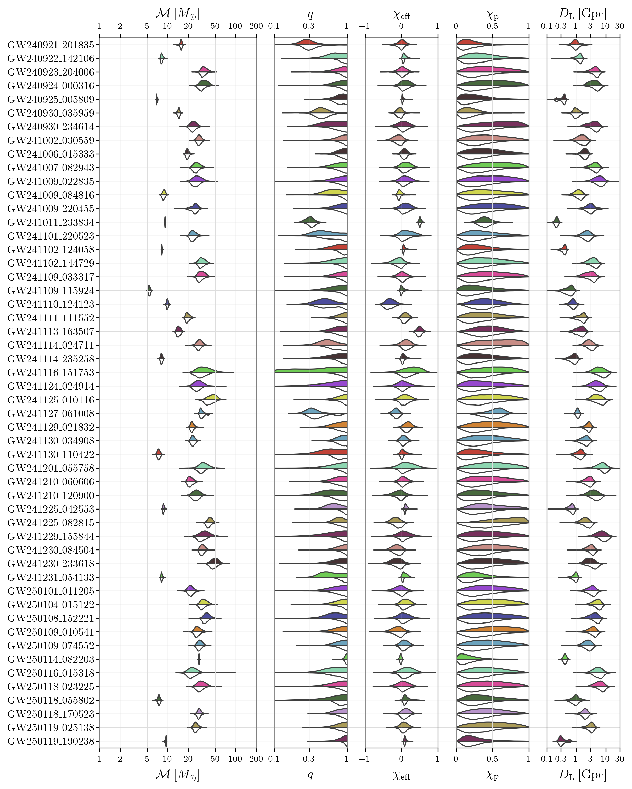
图注：The marginal probability distributions for the source frame chirp mass $\Mc$, mass ratio $\mratio$, effective inspiral spin $\chieff$, effective precession spin $\chip$, and luminosity distance $\DL$ for \(\ac{O4b}\) candidates with a \(\printFAR\)[\(\yr^{-1}\)]{1}. The height of each region is proportional to the marginal posterior probability at that value for each candidate. In addition to the upper colored region of each posterior distribution derived from the default agnostic prior~\(\citep{GWTC:Methods},\) we also reweight the inferred posterior distribution of our \(\ac{BBH}\) candidates using a population-informed prior~\(\citep\)[default strongly-parameterised models, Table 1 of][]{GWTC:AstroDist}, and show these population-informed measurements in the lower unfilled region.
对应解读：对应“建议重点查看的图表”中的组分质量/自旋/距离分布，以及“关键图表逐图导读”图3、图4、图5和参数估计后验解读。
入选理由：这张图同时给出O4b中FAR<1 yr^-1候选体的源架啁啾质量、质量比、有效自旋、进动自旋和光度距离边缘后验，并比较默认先验与群体先验重加权结果，是理解新增样本质量范围、自旋分布、距离分布和先验影响的最综合图。
来源与置信度：\(arxiv_source\)；high；\(arxiv_source\) / gwtc-5_results_noauthors.tex:figure[3]
Fig04
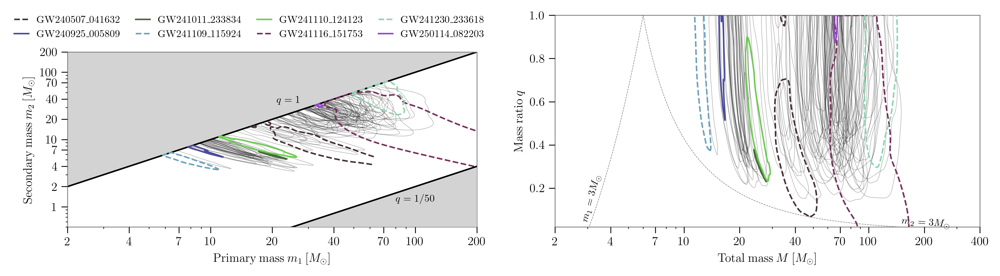
图注：Credible-region contours for the \(\ac{O4b}\) candidates with a \(\printFAR\)[\(\yr^{-1}\)]{1}, using the default agnostic prior. \(\emph{Top}\): Credible-region contours for the inferred primary and secondary component masses $\massone$ and $\masstwo$. The upper shaded region denotes the area excluded by the convention $\massone \geq \masstwo$. The lower shaded region denotes the most-extreme mass-ratio prior used by parameter-estimation analyses. \(\emph{Bottom: }\) Credible-region contours for the inferred total mass $\Mtot$ and mass ratio $\mratio$. Each contour indicates the 90\% credible region for a given candidate. We use colors to highlight candidates: \(\FULLNAME{GW240507_041632}{},\) \(\FULLNAME{GW240925_005809}{},\) \(\FULLNAME{GW241011_233834}{},\) \(\FULLNAME{GW241109_115924}{},\) \(\FULLNAME{GW241110_124123}{},\) \(\FULLNAME{GW241116_151753}{},\) \(\FULLNAME{GW241230_233618}{}\) and \(\FULLNAME{GW250114_082203}{}.\)
对应解读：对应“建议重点查看的图表”中的组分质量或总质量分布图，以及“关键图表逐图导读”图3中关于m1–m2、总质量–质量比可信区间的解读。
入选理由：图中直接展示O4b事件在主星质量–伴星质量以及总质量–质量比平面的90%可信区间，并特别标出GW241109_115924、GW241116_151753和GW250114_082203等关键事件，最适合支撑低质量端、高质量端和质量比退化的讨论。
来源与置信度：\(arxiv_source\)；high；\(arxiv_source\) / gwtc-5_results_noauthors.tex:figure[4]
Fig05
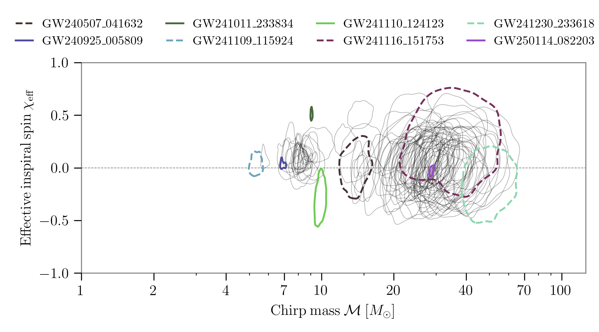
图注：Credible-region contours in the chirp mass $\Mc$ and effective inspiral spin $\chieff$ plane for the \(\ac{O4b}\) candidates with a \(\printFAR\)[\(\yr^{-1}\)]{1}, using the default agnostic prior. Each contour indicates the $90\%$ credible region for a given candidate. We use colors to highlight candidates \(\FULLNAME{GW240507_041632}{},\) \(\FULLNAME{GW240925_005809}{},\) \(\FULLNAME{GW241011_233834}{},\) \(\FULLNAME{GW241109_115924}{},\) \(\FULLNAME{GW241110_124123}{},\) \(\FULLNAME{GW241116_151753}{},\) \(\FULLNAME{GW241230_233618}{}\) and \(\FULLNAME{GW250114_082203}{}.\)
对应解读：对应“建议重点查看的图表”中的chi_eff自旋分布和二维可信区间，以及“关键图表逐图导读”图4和模型拟合段落中的质量–自旋退化。
入选理由：这张图给出啁啾质量–有效吸积自旋chi_eff平面的90%可信区间，能直接检查自旋是否集中在零附近、是否存在正/负自旋尾部，以及质量参数与自旋相位项之间的退化，比单独的一维误差条更能支撑日报的参数估计解读。
来源与置信度：\(arxiv_source\)；high；\(arxiv_source\) / gwtc-5_results_noauthors.tex:figure[5]
Fig09
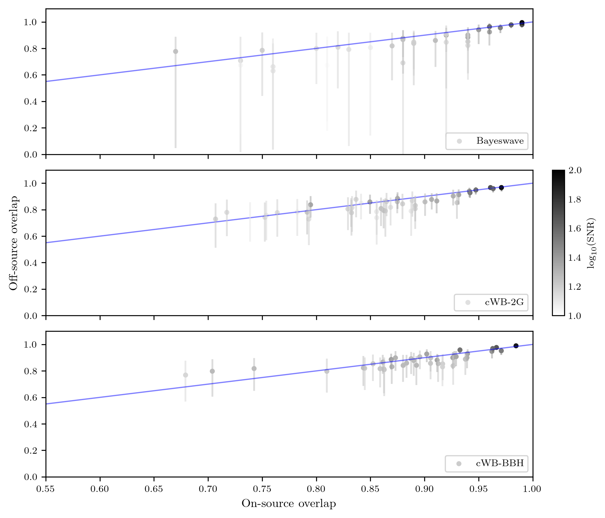
图注：A comparison of the overlap between the on-source and off-source (with 90\% confidence intervals) reconstructions for three different minimally modeled pipelines, \(\BAYESWAVE,\) \(\CWBTWOG,\) and \(\CWBBBH\) where the \(\IMRPhenomXPHMST{}\) waveform was used in parameter estimation, the network \(\ac{SNR}\) was greater than 10, and the redshifted chirp mass $(1+z) \mchirp > 15 \Msun$. The data points and their uncertainties are drawn with a gray level corresponding to the network SNR detected by each pipeline; the gray scale is non linear to fit the large dynamic range of SNR values. The blue line denotes equal overlap between the on- and off-source reconstructions, indicating that there is no significant difference between the two.
对应解读：对应“建议重点查看的图表”中的高信噪比事件残差、重构波形或一致性检验，以及模型拟合段落中关于残差、波形系统误差和非高斯噪声的讨论。
入选理由：图中比较多个最小模型化管线的on-source与off-source重构重叠度，并用网络SNR编码事件强度，可用于判断观测数据中的信号重构是否显著区别于噪声背景，是候选体验证和高SNR事件一致性检查的重要诊断图。
来源与置信度：\(arxiv_source\)；high；\(arxiv_source\) / gwtc-5_results_noauthors.tex:figure[9]
Fig08
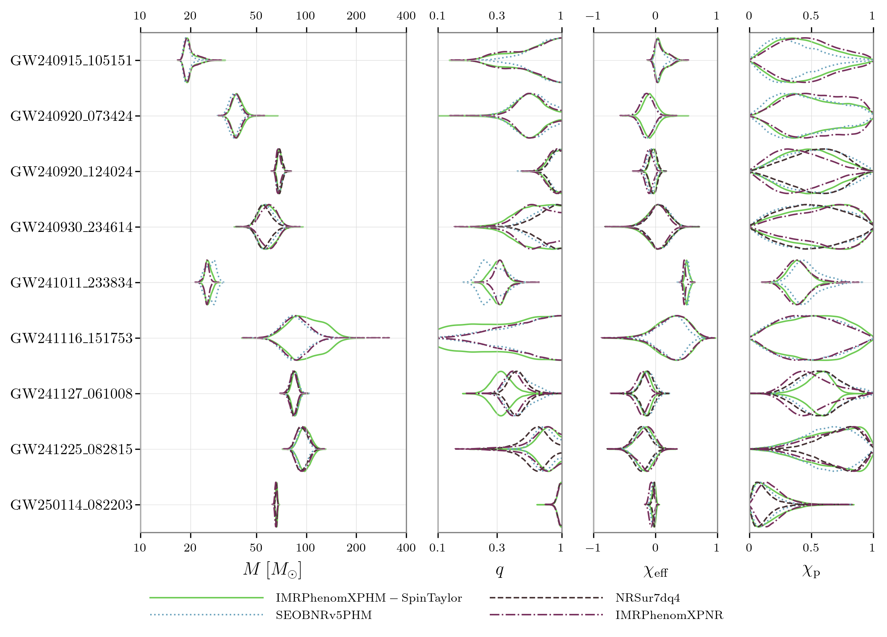
图注：The marginal probability distributions for the (source-frame) total mass $\Mtot$, mass ratio $\mratio$, effective inspiral spin $\chieff$, and effective precession spin $\chip$ for nine \(\ac{O4b}\) candidates which show significant waveform systematics.
对应解读：对应模型拟合段落中关于波形模型系统误差的讨论，以及“建议重点查看的图表”中参数估计后验和系统误差相关内容。
入选理由：这张图专门展示存在显著波形系统误差的九个O4b候选体在总质量、质量比、chi_eff和chi_p上的边缘后验，能支撑日报中关于高质量、高自旋、强进动或高SNR事件受波形模型影响的提醒。
来源与置信度：\(arxiv_source\)；high；\(arxiv_source\) / gwtc-5_results_noauthors.tex:figure[8]
Fig01
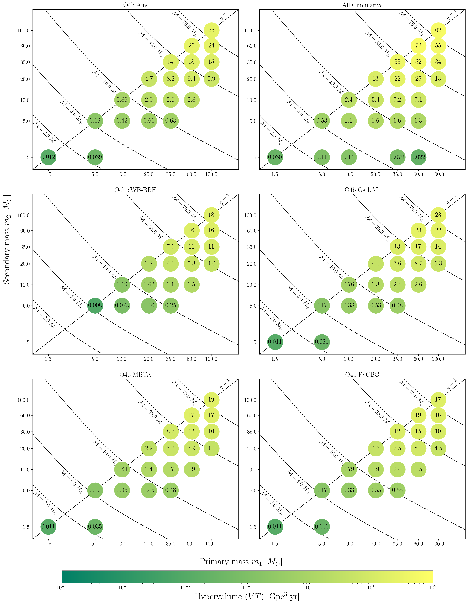
图注：The sensitive hypervolume \(\VT\) for searches of O4b data applying a significance threshold \(\printFAR\)[\(\yr^{-1}\)]{1}, evaluated at points in component mass space. The \(\textit{O4b Any}\) results come from calculating the \(\VT\) for injections found by at least one search pipeline, while the \(\textit{All Cumulative}\) results refer to the \(\VT\) accumulated across all observing runs to date by applying an alternative threshold \(\ac{SNR}\) $> 10$ on the phase-minimized network \(\ac{SNR}\) for the semi-analytic injections in \(\ac{O1}\) and \(\ac{O2}.\) The color of each circle corresponds to the \(\VT\) value. The plotted points correspond to the central points of log-normal distributions with widths 0.1 in logarithmic mass.
对应解读：对应“建议重点查看的图表”中的质量分布、距离/红移选择效应，以及模型拟合段落中关于选择函数和探测敏感体积的讨论。
入选理由：图中给出O4b及累计观测在组分质量空间中的敏感超体积VT，直接反映不同质量双黑洞被探测到的选择函数；它虽然不是事件后验图，但对解释为什么高质量事件更容易在目录中出现、为何不能把观测分布直接等同于本征质量谱非常关键。
来源与置信度：\(arxiv_source\)；high；\(arxiv_source\) / gwtc-5_results_noauthors.tex:figure[1]
强相关工作
这篇目录工作直接延续 \\(\mathrm{GWTC\mbox{-}1}\\)、\\(\mathrm{GWTC\mbox{-}2}\\)、\\(\mathrm{GWTC\mbox{-}3}\\) 和后续 \\(\mathrm{O4}\\) 目录发布。相似工作包括每次观测运行后的紧凑双星搜索论文、参数估计论文和群体性质论文。建议检索关键词包括 “\\(\mathrm{GWTC\mbox{-}5}\\) compact binary coalescence catalog”、“\\(\mathrm{O4b}\\) gravitational wave catalog”、“binary black hole population \\(\mathrm{GWTC}\\)” 和 “LIGO Virgo KAGRA transient catalog”。
基础理论上，这项工作建立在匹配滤波搜索、后牛顿双星相位、数值相对论校准波形、贝叶斯参数估计和泊松群体推断之上。与其存在张力或需要谨慎比较的方向包括：不同波形模型对高质量或强进动事件的参数偏移，不同搜索管线对边缘候选体的分类差异，以及群体模型对质量间隙、红移演化和自旋分布的不同解释。建议检索关键词包括 “gravitational wave selection effects”、“binary black hole mass gap”、“effective spin distribution”、“waveform systematics high SNR gravitational waves” 和 “tests of general relativity high signal-to-noise binary black hole”。
相似工作：
- https://arxiv.org/abs/1811.12907
- https://arxiv.org/abs/2010.14527
- https://arxiv.org/abs/2111.03606
- https://arxiv.org/abs/2605.27225
基础理论 / 方法工作：
- https://arxiv.org/abs/1602.03837
- https://arxiv.org/abs/1602.03841
- https://arxiv.org/abs/gr-qc/0509116
- https://arxiv.org/abs/0705.3829
相反观点 / 张力线索：
- https://arxiv.org/abs/2010.14533
- https://arxiv.org/abs/2111.03634
- https://arxiv.org/abs/2105.06492
5. GWTC-5.0: Population Properties of Merging Compact Binaries
- 来源：arXiv / astro-ph.HE
- 链接：https://arxiv.org/abs/2605.27226v1
- 作者：The LIGO Scientific Collaboration, the Virgo Collaboration, the KAGRA Collaboration
- 评分：novelty 8/10，importance 9/10，relevance 7/10，final 9.00/10
- 推荐理由：Major LVK GWTC-5 population paper using 267 mergers, with new BBH rate, mass-spectrum and spin-population constraints; not gamma-ray focused but important compact-object/multimessenger HE context.
中文题目：GWTC-5.0: Population Properties of Merging Compact Binaries
做了什么：本篇论文已通过推荐筛选，但自动详细解读生成失败。可先根据题目和摘要判断阅读优先级：We present the population properties of merging compact binaries inferred using 267 mergers from the cumulative Gravitational-Wave Transient Catalog 5.0. As this data set contains no new sources with a neutron star, we primarily focus on the properties of the binary black hole mergers. We infer the merger rate of binary black holes with component masses between $2.5\,\mathrm{M}_\odot $ and $200\,\mathrm{M}_\odot $ to be $27.5\text{--} 49.4 \, \mathrm{Gpc}^{-3}\,\mathrm{yr}^{-1}$ (all intervals at $90\%$ credible levels) at redshift $z = 0.2$. We find evidence for a subpopulation of binary black hole mergers that host a rapidly spinning black hole (dimensionless spins $χ\sim 0.7$), consistent with signatures of hierarchical mergers. We find that these occur at two mass scales, the first at primary masses $\sim 10$--$20\,\mathrm{M}_\odot $ and the second above $\sim 45\,\mathrm{M}_\odot $, and we estimate their total rate at $z=0.2$ to be $0.2\text{--} 3.11 \, {\rm Gpc}^{-3} {\rm yr}^{-1}$. We infer that, above $40\,\mathrm{M}_\odot $, the mass distribution of the less massive (secondary) black hole declines more steeply than that of the more massive (primary) one. This is consistent with a flatter mass-ratio distribution and indicates the prevalence of unequal-mass binaries with large primary masses. We find evidence for two features in the black hole mass spectrum: a peak around $10\,\mathrm{M}_\odot $ and a change of slope at around $35\,\mathrm{M}_\odot $. Black holes of $\sim 35\,\mathrm{M}_\odot $ pair preferentially with companions of similar mass. Additionally, we find that the effective inspiral spin distribution of binary black holes is asymmetric about zero, based on which we infer that at least $9 \%$ of mergers occur in channels with some preference for spin-orbit alignment. We find evidence that...
为什么重要：这篇论文在今日候选中通过了本地推荐阈值，说明它与当前高能天体物理兴趣方向或质量标准较匹配；详细内容建议优先查看原文摘要、结论和图表。
理论 / 观测 / 仪器方法价值：由于 LLM 摘要 JSON 解析失败，本节保留为安全占位，不编造论文未确认的公式、图号或链接。
为什么应该关注：日报仍保留这篇论文，是为了避免单篇摘要失败导致整份日报缺失。请把它作为需要人工快速复核的高优先级候选。
展开详细解读：文章讲解、背景、理论、重点章节、图表与相关工作
文章详细讲解
本文的科学问题可以概括为：在 GWTC-5.0 累积的 267 个并合事件中，BBH 的真实质量、自旋、质量比和红移分布是什么，它们是否已经精细到能区分不同形成通道？摘要给出的率 $27.5$--$49.4\,\mathrm{Gpc}^{-3}\,\mathrm{yr}^{-1}$ 是一个总体归一化结果，但更重要的是分布形状：约 $10\,M_\odot$ 峰、约 $35\,M_\odot$ 斜率变化、高质量端主次质量分布差异，以及 $\chi_{\rm eff}$ 的正负不对称。这些都是从“有多少事件”走向“这些黑洞如何形成”的证据链。
方法上，论文应是把每个事件的参数估计后验样本与探测选择函数一起放入层级贝叶斯似然中，联合推断族群超参数和并合率。强参数化模型可描述峰、幂律、截断和红移演化；pixelpop 以分箱或像素方式重建二维分布；BGP 类模型提供更平滑的非参数交叉检查；专门的 isolated-peak 和 $\chi_{\rm eff}$ mixture 模型则用于测试特定子族群是否在质量比或自旋上不同。图 8 的说明显示，论文明确用 pixelpop 与 BGP 的一致性来证明 $25$--$40\,M_\odot$ 范围结果的稳健性，这是读者判断结论强弱的关键。
关键结果之一是 BBH 质量谱不再能被单一平滑幂律充分描述。图 2 展示主质量和质量比分布；图 7 展示主、次黑洞边缘质量分布；图 8 进一步聚焦 $m_1\in[25,40]\,M_\odot$ 的子样本。综合摘要和图注，论文认为约 $10\,M_\odot$ 有峰，约 $35\,M_\odot$ 有斜率变化，并且 $35\,M_\odot$ 左右的黑洞偏好近等质量配对。另一方面，在 $40\,M_\odot$ 以上，次级黑洞质量分布比主级下降更陡，意味着大主质量系统中不等质量配对并不少见。这两点并不矛盾：前者是特定质量尺度附近的配对偏好，后者是更高质量端整体边缘分布的趋势。
关键结果之二是自旋分布具有形成通道信息。图 4 显示 $\chi_{\rm eff}$ 和 $\chi_p$ 的后验分布，并特别用插图标出 $\delta\chi=p(\chi_{\rm eff}>0)-p(\chi_{\rm eff}<0)$ 为正，说明总体上正有效自旋更常见。摘要进一步说至少 $9\%$ 的并合来自某些偏好自旋—轨道对齐的通道。图 10 则把 $\chi_{\rm eff}$ 混合成分比例写成主质量的函数，试图识别快速自旋子群在不同质量尺度的出现。这里要避免过度解读：$\chi_{\rm eff}$ 正偏只能支持“存在对齐偏好成分”，不自动唯一指向孤立演化；快速自旋和高质量可以支持层级并合，但也需要与质量比、红移、宿主环境和事件级波形证据共同判断。
局限性主要在模型依赖和边缘参数空间。图 2 图注明确说明灰色斜线区域是等权后验样本覆盖低于 1% 的参数空间边缘，可作为数据约束弱、模型和先验更重要的启发式标记。因此若某个峰、尾部或转折恰好落在这些区域，读者应降低物理解释强度。此外，红移演化与质量分布存在退化：更高质量系统可探测到更远处，若选择函数或红移率模型处理不充分，可能把演化误认为质量结构，或反过来。下一步应检查后验预测分布、模拟注入恢复、逐模型 Bayes 因子或信息准则、以及去掉少数高杠杆事件后的稳健性。
背景知识
引力波双黑洞（BBH）族群研究的核心问题，不是单个事件“有多重、有多快自旋”，而是把探测到的事件放回一个经过选择效应修正的宇宙体积中，反推真实并合率密度和天体物理形成通道。自 GW150914 以来，LIGO/Virgo/KAGRA 的瞬变源目录逐步从少数事件扩展到数百个紧致双星并合，统计问题也从“是否存在恒星级双黑洞”转向“质量谱是否有峰、缺口、斜率变化，自旋是否有对齐偏好，红移演化是否跟随恒星形成史”。GWTC-5.0 的价值在于累积样本达到 267 个并合事件，使若干过去只能作为暗示的结构可以用层级贝叶斯族群推断进行系统检验。
本文摘要说明，本目录没有新增含中子星的源，因此论文重点是 BBH。研究对象覆盖分量质量约 $2.5\,M_\odot$ 到 $200\,M_\odot$ 的并合黑洞，并在参考红移 $z=0.2$ 给出 BBH 并合率 $27.5$--$49.4\,\mathrm{Gpc}^{-3}\,\mathrm{yr}^{-1}$ 的 90% 可信区间。这里的“率”不是简单地把探测数除以观测时间，因为高质量、低质量比、高自旋或高红移系统的可探测体积不同；必须同时建模探测选择函数、参数估计后验、天体物理分布和事件分类。
论文特别关心三类物理线索。第一是质量谱结构：约 $10\,M_\odot$ 的峰、约 $35\,M_\odot$ 的斜率变化，以及 $40\,M_\odot$ 以上主黑洞与次黑洞边缘分布斜率不同。第二是质量比结构：约 $35\,M_\odot$ 的黑洞似乎更偏好与相近质量伴星成对，而高主质量端又出现较多不等质量系统。第三是自旋结构：有效吸积自旋 $\chi_{\rm eff}$ 分布对零不对称，暗示至少一部分并合通道具有自旋—轨道对齐倾向；同时还存在含快速自旋黑洞（$\chi\sim0.7$）的子族群，被解释为可能与层级并合有关。
阅读这类论文时常见误区有三点。其一，把探测到的质量分布误认为真实宇宙分布；实际上高质量 BBH 在更大体积内可见，会严重放大原始直方图中的高质量端。其二，把 $\chi_{\rm eff}>0$ 直接等同于孤立双星形成；更严格地说，它只说明有净自旋—轨道对齐成分，仍需与动力学俘获、层级并合、潮汐同步和金属丰度演化等模型比较。其三，把“峰”或“转折”看成某个单一物理机制的唯一证据；族群推断中的峰可能受到模型参数化、先验边界、事件参数后验宽度和选择效应共同影响，因此必须看跨模型一致性和后验预测诊断。
基础理论 / 方法脉络
双黑洞并合的可观测信息主要来自引力波相位和振幅。低阶近似下，波形相位最敏感于啁啾质量 $\mathcal{M}$，振幅与光度距离 $d_L$、倾角和探测器响应相关；质量比、自旋、进动和高阶模则通过更细的相位修正和振幅调制进入。对单个事件而言，参数估计给出的是源参数 $\theta=(m_1,m_2,\chi_1,\chi_2,z,\ldots)$ 的后验样本，而不是精确点估计。族群论文的第一步就是把这些单事件后验样本作为输入，重建总体分布 $p(\theta|\Lambda)$。
BBH 族群分析的关键物理量包括主黑洞质量 $m_1$、次黑洞质量 $m_2$、质量比 $q=m_2/m_1\le 1$、有效吸积自旋 $\chi_{\rm eff}$ 和进动自旋参数 $\chi_p$。其中 $\chi_{\rm eff}$ 是沿轨道角动量方向的质量加权自旋组合，在吸积阶段近似守恒，因此特别适合作为形成通道诊断量。若自旋方向各向同性且自旋大小分布对称，$\chi_{\rm eff}$ 分布通常接近关于零对称；若存在潮汐或共同包层演化导致的自旋—轨道对齐，则正 $\chi_{\rm eff}$ 事件会增多。
从形成物理看，质量谱中的峰和断点可能对应不同过程。约 $10\,M_\odot$ 附近的峰可能与恒星初始质量函数、金属丰度、超新星爆炸和回退有关；约 $35\,M_\odot$ 的结构常被放在脉动对不稳定、恒星风质量损失和双星相互作用背景下讨论；更高质量且高自旋的黑洞则可能与层级并合有关，即一个并合产物再次参与下一次并合。本文摘要中的两个快速自旋质量尺度——$m_1\sim10$--$20\,M_\odot$ 和 $m_1\gtrsim45\,M_\odot$——应被理解为族群模型从数据中分离出的候选子结构，而不是未经模型检验的直接观测事实。
统计方法上，本文显然采用层级贝叶斯框架并比较多种族群模型，例如强参数化模型、pixelpop、BGP、isolated-peak、$\chi_{\rm eff}$ mixture 和 three-transition 类模型。强参数化模型适合给出可解释的峰、幂律斜率和混合比例；非参数或半参数模型适合检查峰是否由参数化强加；高斯过程或双变量模型适合检查质量、自旋、红移之间的相关结构。读者应把“模型一致性”视为主要证据来源：若同一质量峰、质量比偏好或自旋不对称在多种建模方式下出现，才更接近物理结论。
主要系统误差来自四个层面。第一是选择效应，即探测概率随质量、红移、质量比和自旋变化；第二是单事件参数估计中的先验和波形系统误差，尤其影响高质量、短信号和强进动事件；第三是族群模型边界，例如论文图注中用灰色阴影标出“参数空间边缘、等权后验样本少于 1%”的区域，这些地方结果容易受先验支配；第四是事件样本和分类阈值，不同假警率、天体物理概率和数据质量处理会改变低显著性事件对总体分布的影响。
公式与推导
族群推断从单个事件参数 $\theta$ 和族群超参数 $\Lambda$ 的生成模型开始。若 $N$ 个事件来自泊松过程，真实并合率密度可写为
其中 $R_0$ 是某个参考红移或参考体积下的率归一化，$p(\theta|\Lambda)$ 是质量、自旋、红移等源参数的归一化分布，$t_s$ 为源系时间，$V_c$ 为共动体积。
观测到的红移分布需要包含宇宙学体积元和时间膨胀。若把红移演化写成无量纲函数 $f(z|\Lambda)$，则
其中 $1/(1+z)$ 把源系时间转换为观测者时间。本文在 $z=0.2$ 报告 BBH 率，因此读者应确认 $R(z)$ 的定义是直接在该红移处归一，还是由某个红移演化模型外推得到。
质量变量常用主质量和质量比表示：
若模型在 $(m_1,q)$ 上给出密度 $p(m_1,q)$，转换到 $(m_1,m_2)$ 时需要雅可比因子
这正是比较主、次黑洞边缘质量分布时容易出错的地方：$m_2$ 分布的陡降不只反映 $q$ 分布，也受 $m_1$ 分布和变量变换影响。
有效吸积自旋定义为
其中 $\chi_i$ 是第 $i$ 个黑洞的无量纲自旋大小，$\theta_i$ 是自旋与轨道角动量的夹角。若形成通道偏好自旋—轨道对齐，则 $\cos\theta_i$ 偏正，$\chi_{\rm eff}$ 分布会向正值偏移；若自旋方向各向同性，则正负更接近平衡。
论文图 4 使用的不对称诊断量可写为
（忽略零点概率）。若 $\delta\chi>0$ 的后验可信区间主要在正值，说明总体分布中存在净正有效自旋偏好；但它不能单独区分孤立双星、动力学通道中的选择效应或层级并合。
层级贝叶斯似然的核心是把单事件似然与族群先验相乘，并除以选择效应。对第 $i$ 个事件，若其单事件参数估计使用先验 $\pi(\theta)$，则族群重加权因子近似为
其中 $\theta_{is}$ 是该事件的后验样本。这个公式告诉读者：若某一区域后验样本很少，重建出的族群密度就会对模型平滑和先验非常敏感。
选择效应通常通过探测效率
进入，其中 $p_{\rm det}(\theta)$ 是给定源参数下被搜索管线探测并进入目录的概率。泊松点过程的超参数后验可概括为
其中
是期望探测数。该表达式说明并合率归一化和分布形状并非独立：改变质量或红移分布会改变可探测比例，从而改变推断出的 $R_0$。
若采用混合模型描述快速自旋或特殊形成通道，可写成
其中图 10 的 $\zeta(m_1)$ 表示某一混合成分比例，$p_{\rm U}$ 和 $p_{\rm G}$ 分别代表均匀成分和高斯成分。若 $\zeta$ 在特定 $m_1$ 范围内变化显著，才支持“自旋分布随质量变化”的说法；若可信区间宽且跨越旧目录结果，则应谨慎解释。
模型拟合 / 应用方法
拟合对象可以分为总体率归一化和分布形状两部分。总体率是在给定质量范围 $2.5$--$200\,M_\odot$、参考红移 $z=0.2$ 下的 BBH 并合率；分布形状包括 $m_1$、$m_2$ 或 $q$ 的质量结构，$\chi_{\rm eff}$、$\chi_p$ 或自旋大小的自旋结构，以及可能的红移演化。论文使用多种模型的原因正是这些量之间高度相关：高质量系统更容易被探测，自旋会影响波形可测性，红移会把探测器系质量与源系质量联系起来。
似然应属于泊松层级贝叶斯点过程：每个事件通过单事件后验样本重加权贡献一个积分项，整体再乘以 $e^{-\mu}$ 的探测数泊松因子，其中 $\mu$ 由观测时间、并合率和选择函数决定。若论文采用注入集估计选择函数，读者应检查注入覆盖是否足以覆盖 $m_1>45\,M_\odot$、低 $q$、高自旋和高红移区域。若采用不同事件权重或天体物理概率，还要检查低显著性候选是否会显著改变峰和尾部。
残差诊断不应只看模型曲线和可信带。更有力的检查包括：后验预测事件分布是否复现观测到的 $m_1$、$q$、$\chi_{\rm eff}$ 和 $z$；在每个质量区间内观测事件数是否落在预测分布的可信范围；单事件重加权权重是否被少数后验样本支配；以及把某些高杠杆事件移除后，$10\,M_\odot$ 峰、$35\,M_\odot$ 转折和 $\delta\chi>0$ 是否仍然存在。图 8 中 pixelpop 与 BGP 的一致性就是一种模型残差和参数化偏差诊断。
主要退化关系包括质量谱斜率与率归一化退化、质量比与主质量分布退化、红移演化与高质量可探测体积退化、自旋幅度与自旋倾角退化，以及 $\chi_{\rm eff}$ 与质量比在波形相位中的部分退化。举例说，高主质量不等质量系统的增加既可能反映真实 $q$ 分布变平，也可能与高质量端选择效应、少数事件后验宽度或模型平滑方式有关；因此必须看二维模型而非只看边缘分布。
系统误差方面，波形模型会影响高质量短信号、进动和高阶模事件的参数后验；探测器校准和数据质量会影响信噪比和探测概率；宇宙学参数会影响红移—距离转换；族群先验边界会影响灰色斜线弱约束区域。论文图注中明确把等权后验样本少于 1% 的区域作为弱约束标记，这应被视为拟合诊断的一部分：任何结论如果主要来自这些区域，都需要额外的先验敏感性或模拟恢复测试。
模型可能失败的情形包括：真实族群存在多个离散形成通道，但模型只用平滑函数逼近；自旋分布与质量、红移、质量比存在三维相关，但模型只做二维投影；或样本中少数异常事件驱动了看似显著的峰。理想的补充检验是对同一数据运行更灵活的联合模型 $p(m_1,q,z,\chi_{\rm eff})$，比较后验预测和交叉验证表现，并报告在不同目录阈值、不同波形后验、不同选择函数处理下的结论稳定性。
重点章节 / 结果段落怎么读
-
摘要和结论：先提取所有定量结论，包括 BBH 总率、快速自旋子群率、$10\,M_\odot$ 峰、$35\,M_\odot$ 转折、$\chi_{\rm eff}$ 不对称和至少 $9\%$ 对齐通道比例。读结论时要把每条物理解释与对应图表和模型名称配对，避免只记住口号。
-
数据目录与事件选择：重点确认 267 个并合事件的样本定义、BBH/含中子星事件的处理、天体物理概率阈值、观测时间和搜索管线。族群结论对边缘事件可能敏感，特别是高质量、高自旋或低质量比事件；如果论文有附录列出事件权重或剔除测试，应优先查看。
-
方法与层级贝叶斯模型：阅读时把模型分成强参数化、半/非参数、以及针对特定假设的混合模型三类。需要记录每个模型的参数空间、先验边界、是否联合建模 $(m_1,q)$、$(m_1,m_2)$、$(m_1,z)$ 或 $(m_1,\chi_{\rm eff})$，以及选择函数如何计算。图注中的灰色弱约束区域通常在方法节有定义，应回到该节确认其数学含义。
-
质量分布结果段落：围绕图 2、图 6、图 7、图 8 阅读。先看全体 $m_1$ 分布，再看 $q$ 分布，然后看特定质量峰的条件分布。不要把边缘分布和条件分布混淆：$p(m_2)$ 的高质量下降、$p(q|m_1\sim35M_\odot)$ 的近等质量偏好、以及总体 $p(q)$ 的形状是三个相关但不同的问题。
-
自旋与形成通道段落：围绕图 4 和图 10 阅读。记录 $\chi_{\rm eff}$、$\chi_p$、自旋大小 $\chi$、混合比例 $\zeta(m_1)$ 各自回答的问题。尤其要区分“自旋—轨道对齐通道的最低比例”“快速自旋黑洞子群”“层级并合候选”这三层推断强度。
-
系统误差、稳健性和附录：最后集中检查模型比较、注入恢复、后验预测、先验敏感性、波形系统误差和目录版本对比。任何位于高质量端、低 $q$ 端或高红移端的结论，都应在附录中寻找替代模型或剔除测试支持。
建议重点查看的图表
-
质量谱总览图：优先看主质量 $m_1$ 的 merger-rate density 与 90% 可信区间，特别是 $\sim10\,M_\odot$ 峰、$\sim35\,M_\odot$ 斜率变化和高质量端是否由少数事件驱动。注意灰色斜线的弱约束边缘区域，不要把边界处的上升或下降直接解释为物理结构。
-
质量比分布图：检查横轴是否为 $q=m_2/m_1$，纵轴是归一化概率密度还是并合率密度。重点看 $q\to1$ 附近是否有峰，以及低 $q$ 端可信区间是否显著变宽；这决定“近等质量配对偏好”和“高主质量端不等质量系统增多”是否能同时成立。
-
主、次黑洞边缘质量分布：比较 $m_1$ 与 $m_2$ 在 $40\,M_\odot$ 以上的下降斜率，检查两条分布的可信带是否真正分离。图 7 的 $25$--$50\,M_\odot$ 插图尤其适合验证摘要中关于次级质量分布更陡的说法。
-
自旋分布图：看 $\chi_{\rm eff}$ 是否关于零对称、$\chi_p$ 是否有显著非零支撑，以及插图中的 $\delta\chi=p(\chi_{\rm eff}>0)-p(\chi_{\rm eff}<0)$ 是否稳健为正。要同时检查零附近的后验宽度，因为许多 BBH 单事件自旋约束很弱。
-
子族群对比图：对约 $10\,M_\odot$ 峰和约 $35\,M_\odot$ 群体，分别比较其质量比、自旋和红移分布是否不同于总体。若差异只在单一模型中出现而在 pixelpop/BGP 中消失，应视为模型提示而非强结论。
-
模型一致性和后验预测诊断：寻找 pixelpop、BGP、强参数化模型之间的交叉比较，以及后验预测能否复现实测事件在 $m_1$、$q$、$\chi_{\rm eff}$、探测红移上的分布。尤其要看残差是否集中在少数质量区间或自旋区间。
-
选择效应/敏感体积诊断：检查论文是否给出注入集、探测效率或 selection function 的说明。需要确认高质量端、低质量比端、高红移端的有效样本量是否足够，否则这些区域的率密度可能主要由先验和模型平滑性决定。
关键图表逐图导读
图 1（应先找目录样本、事件选择或总体流程图）：如果论文的图 1 展示 GWTC-5.0 事件样本、探测运行、天体物理概率或参数空间覆盖，读者应先看横轴/纵轴是否是探测时间、源红移、信噪比、假警率或质量。关键不是记住每个事件名，而是确认 267 个并合事件如何进入族群分析、是否排除了低显著性候选、含中子星事件为何不主导本文。若图中有样本切分或颜色编码，要检查 BBH、NSBH、BNS 与未分类事件是否被不同处理。
图 2（主质量与质量比分布）：左图通常是 $m_1$ 的 merger-rate density，右图是 $q$ 分布。实线为不同模型的后验中位数，阴影为 90% 可信区间，黑线给出 GWTC-4 强参数化模型对比。读法上先看 $\sim10\,M_\odot$ 峰是否在多模型中出现，再看 $\sim35\,M_\odot$ 附近是否表现为斜率变化而非孤立窄峰；右图则检查 $q\to1$ 与低 $q$ 端的相对率密度。陷阱是灰色斜线区域：这些参数空间边缘后验样本稀少，模型线即使很平滑也不代表数据强约束。
图 3（若为率演化、二维质量图或模型比较图）：应重点看图中是否展示 $m_1$--$m_2$、$m_1$--$z$ 或 $m_1$--$\chi_{\rm eff}$ 的二维结构。若有颜色条，确认它表示概率密度、率密度还是相对增强；若有等高线，确认是可信区域还是固定率水平。需要特别寻找 $35\,M_\odot$ 附近是否存在近等质量脊线，以及高 $m_1$ 端是否向较小 $q$ 延伸。若图 3 只是方法或注入诊断，也应用它检查选择函数是否足以支撑后面图中的边缘结论。
图 4（有效自旋和进动自旋）：左图的 $\chi_{\rm eff}$ 分布要围绕零点阅读，右图的 $\chi_p$ 用于判断进动自旋是否有总体证据。插图中的 $\delta\chi$ 是核心诊断：若后验主要在正值，说明总体分布偏向正 $\chi_{\rm eff}$。但不要把单个事件的正自旋当成总体证据；应看族群后验的整体偏移、零附近宽度，以及不同模型是否给出一致正偏。
图 6（约 $10\,M_\odot$ 峰与总体对比）：上排比较质量比分布，下排比较自旋或 $\chi_{\rm eff}$ 分布，红色代表 $\sim10\,M_\odot$ 峰，蓝色代表其余总体。读者要看三种模型 isolated-peak、pixelpop、BGP 是否都支持该峰偏好 $q>0.5$。陷阱是不同面板自旋变量不完全相同：isolated-peak 可能使用自旋大小 $\chi$，而 pixelpop/BGP 使用 $\chi_{\rm eff}$，不能直接逐点比较数值。
图 7 和图 8（主次质量边缘分布与 $35\,M_\odot$ 子群）：图 7 比较 $m_1$ 与 $m_2$ 的边缘率密度，重点看 $40\,M_\odot$ 以上次级分布是否更陡。图 8 则把 $m_1\in[25,40]\,M_\odot$ 的群体在 $q$、$z$、$\chi_{\rm eff}$ 和负 $\chi_{\rm eff}$ 比例上展开，并叠加 pixelpop 与 BGP。若两类模型一致，才支持“约 $35\,M_\odot$ 黑洞偏好近等质量配对”和“红移分布在一定范围内稳健”。
图 10（质量相关自旋混合比例）：横轴是主质量，纵轴是混合比例 $\zeta(m_1)$，实线为 GWTC-5.0 后验中位数，阴影为 90% 可信区间，虚线为 GWTC-4 对比。顶部的条和点标出 three-transition 模型的转变质量区间。读法是看 $\zeta$ 是否在 $10$--$20\,M_\odot$ 与 $>45\,M_\odot$ 附近发生系统变化，并检查可信带是否足够窄。若只是宽带内的缓慢波动，就应把层级并合解释视为候选而非定论。
论文原图 / 可嵌入图片
Fig02
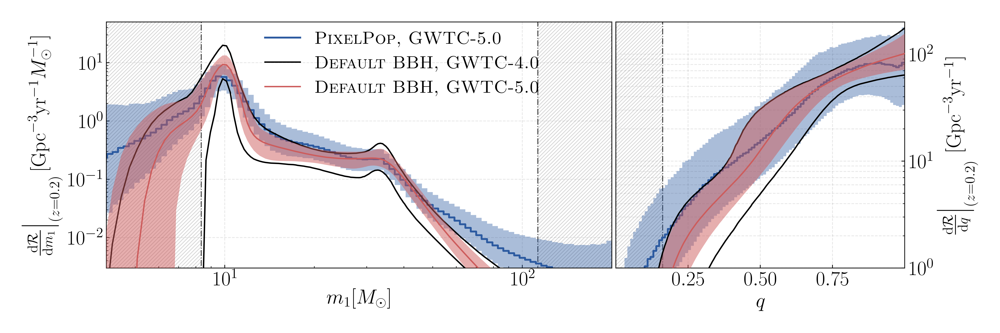
图注：The distribution of the primary mass of the \(\ac{BBH}\) population (left), and the mass ratio distribution (right). The solid lines show the {median merger-rate density} for each model, with the shaded bands depicting the $90\%$ credible regions. The solid black lines show the $90\%$ credible bounds for the strongly-parameterized model from \(\gwtcfour.\) The hatched grey areas behind the dot-dashed lines---in this and all subsequent figures---correspond to regions at the edges of the parameter space with $< 1\%$ of \(\ac{BBH}\) parameter estimation samples equally weighted across all detections. {This is intended as a heuristic proxy for parts of parameter space where the models may not be actively constrained by the data, and where modeling and prior choices may become particularly important}. See Sec.~\(\ref{Sec:methods}\) for more details.
对应解读：建议重点查看主要数据与模型比较；对应论文关于BBH主黑洞质量分布、质量比总体分布以及与GWTC-4强参数化模型对比的核心结果。
入选理由：这张图直接展示BBH主质量和质量比分布的中位 merger-rate density、90%可信区间、GWTC-4对比曲线以及参数空间边缘的弱约束区域，是理解质量谱峰、斜率变化和模型系统性的首要图。
来源与置信度：\(arxiv_source\)；high；\(arxiv_source\) / paper.tex:figure[2]
Fig04
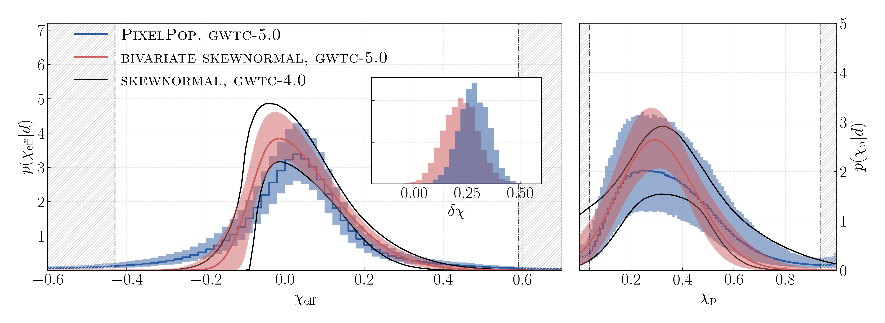
图注：Posterior distribution of effective spins in the \(\ac{BBH}\) population: $\chieff$ (left) and $\chip$ (right). {The inset shows that the asymmetry about zero, $\delta \chi = p(\chi_{\rm eff} > 0) - p(\chi_{\rm eff} < 0)$ is found to be positive, indicating a preference for aligned binaries}
对应解读：建议重点查看参数约束与置信区间；对应论文关于有效吸积自旋χ_eff分布不关于零对称、存在自旋—轨道对齐偏好的结论。
入选理由：摘要中特别强调χ_eff分布正负不对称，并由此推断至少一部分并合通道偏好自旋对齐。该图含χ_eff、χ_p后验及δχ插图，是支撑这一核心物理解释的最直接证据。
来源与置信度：\(arxiv_source\)；high；\(arxiv_source\) / paper.tex:figure[4]
Fig08
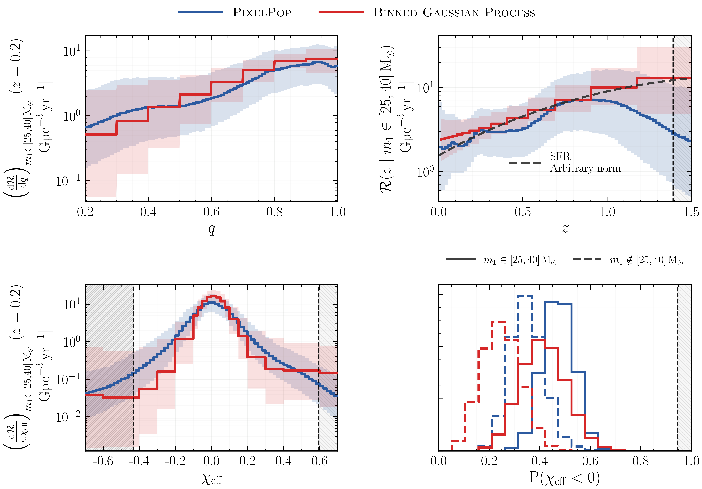
图注：{BBH merger rate for $m_1 \in [25, 40]\,\Msun$, inferred using different variants of the \(\pixelpop\) model: $(m_1, q)$ (top left), $(m_1, z)$ (top right), and $(m_1, \chieff)$ (bottom left panel). The bottom right panel shows the inferred fraction of mergers with negative \(\chieff.\) These are overplotted with different variants of the \(\bgp\) model as a consistency check: $(m_1, q, \chieff)$ (top left), $(m_1 ,m_2 ,z)$ (top right), and $(m_1, m_2, \chieff)$ (bottom panels). The agreement between \(\pixelpop\) and the \(\bgp\) demonstrates the robustness of our results in this mass range. In this mass range, the mass-ratio distribution likely peaks at $q = 1$, indicating a preference for equal-mass mergers in the $\sim 35\,\Msun$ population. The redshift distribution is broadly consistent with the star-formation rate and remains robust up to $z \sim 1.2$, beyond which modeling uncertainties dominate. {The effective inspiral spin distribution for the $\sim 35\,\Msun$ population is broadly consistent with that of the full population, with both exhibiting significant support at negative \(\chieff{}.\) But the $\sim 35\,\Msun$ population has a stronger preference for a symmetric $\chieff{}$ distribution about zero, as seen by the histograms of the fraction of binaries with $\chieff{} < 0$ (bottom right).}}. {The \(\bgp\) merger-rate-densities at $z=0.2$ are calculates assuming a powerlaw index of $2.7$ (see Tab.~\ref{tab:summary_of_models}).}
对应解读：建议重点查看模型比较和系统误差；对应约35太阳质量子群的质量比、红移、自旋分布以及pixelpop与BGP一致性检验。
入选理由：该图集中检验m1=25–40太阳质量范围内的q、z、χ_eff和负χ_eff比例，并用不同模型交叉验证，直接支撑‘约35太阳质量黑洞倾向与相近质量伴星配对’以及结果稳健性的论断。
来源与置信度：\(arxiv_source\)；high；\(arxiv_source\) / paper.tex:figure[8]
Fig07
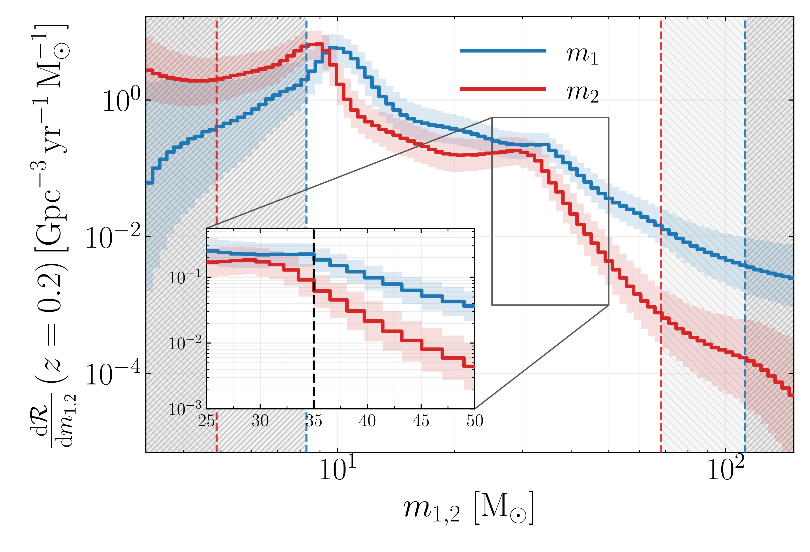
图注：Marginal primary ($m_1$) and secondary ($m_2$) mass distributions reconstructed using $(m_1, m_2)$-\(\pixelpop\) model. The inset shows the merger-rate density in the mass range $25$--$50\,\Msun$.
对应解读：建议重点查看主要数据与诊断量；对应论文关于主黑洞和次黑洞边缘质量分布、尤其高质量端次黑洞分布更陡下降的结论。
入选理由：图中重建m1与m2的边缘分布，并在25–50太阳质量区间给出插图，最适合检查摘要所述‘40太阳质量以上次级黑洞质量分布比主级更陡’及质量谱结构。
来源与置信度：\(arxiv_source\)；high；\(arxiv_source\) / paper.tex:figure[7]
Fig10
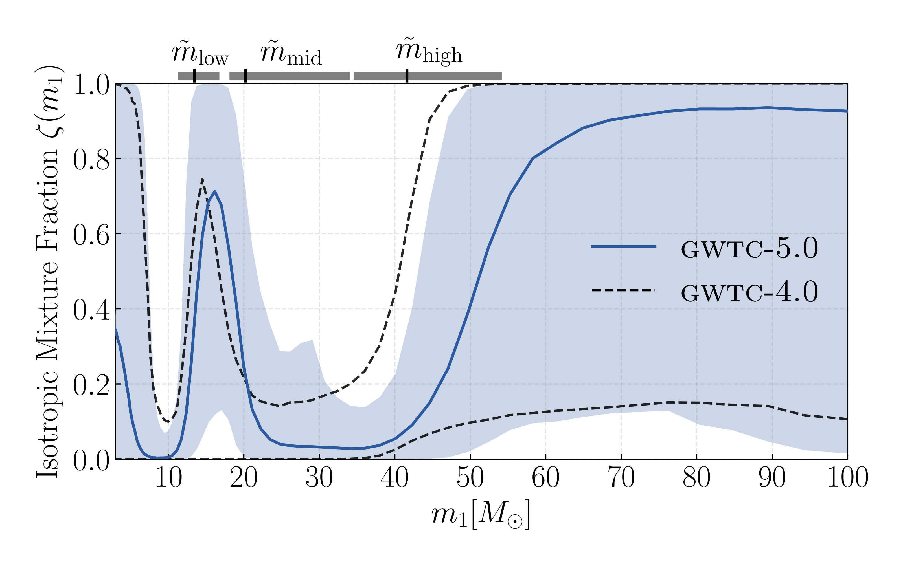
图注：Mass-dependent mixture fraction $\zeta(m_1)$ between the Gaussian and uniform \(\chieff\) components as a function of primary \(\ac{BH}\) mass obtained with the \(\chieffmixture{}\) model. {Here $\zeta$ denotes the fraction of systems in the uniform component}. The solid line shows the posterior median inferred from \(\gwtcfive{}\) and the shaded band the corresponding 90\% credible interval. The dashed lines indicate the 90\% credible bounds from \(\gwtcfour{}.\) The bars and markers at the top are the credible intervals of the transition masses (\(\mlow,\) \(\mmid,\) \mhigh) inferred with the \(\chieffthree{}\) model.
对应解读：建议重点查看模型拟合参数与置信区间；对应质量相关χ_eff混合模型以及快速自旋/层级并合候选子群的质量依赖。
入选理由：该图展示χ_eff混合成分比例ζ随主质量变化的后验中位数和90%可信区间，并标出转变质量，可用于理解论文关于高自旋子群在不同质量尺度出现、可能与层级并合有关的模型证据。
来源与置信度：\(arxiv_source\)；high；\(arxiv_source\) / paper.tex:figure[10]
Fig06
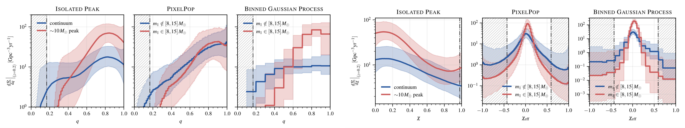
图注：Mass-ratio (top row) and spin (bottom row) distributions for the ${\sim}10\,\mathrm{M}_{\odot}$ peak (red) versus the rest of the population (blue), inferred with \(\isolatedpeak\) (left), \(\pixelpop\) (middle), and \(\bgp\) (right). \(\pixelpop\) results come from a $(m_1, q)$ run in the top row, and an $(m_1, \chieff)$ run in the bottom row. \(\isolatedpeak\) natively models the spin magnitude $\chi$ (bottom left panel), while \(\pixelpop\) and \(\bgp\) model the effective inspiral spin \(\chieff\) (bottom middle and right panels). All models favor $q > 0.5$ for the peak. {The \(\bgp\) merger-rate-densities at $z=0.2$ are calculated assuming a powerlaw index of $2.7$ (see Tab.~\ref{tab:summary_of_models}).}
对应解读：建议重点查看关键子群的模型比较；对应约10太阳质量峰的质量比和自旋分布，以及isolated-peak、pixelpop、BGP三类模型的一致性。
入选理由：摘要指出黑洞质量谱存在约10太阳质量峰。该图专门比较该峰与其余BBH总体的q和自旋分布，并跨三种模型展示结果，是解读低质量峰物理性质的重要补充图。
来源与置信度：\(arxiv_source\)；high；\(arxiv_source\) / paper.tex:figure[6]
强相关工作
检索相关工作应从 LVK 以往的 GWTC population papers 开始，尤其是 GWTC-2、GWTC-3、GWTC-4 的 BBH mass/spin population analyses，以及相应的 catalog papers。对照这些论文可以追踪几个结论如何演化：BBH 总率是否收敛，$\sim35\,M_\odot$ 附近结构是否从暗示变成稳健，$\chi_{\rm eff}$ 正偏是否随样本增大增强，以及强参数化模型与非参数模型之间的张力是否减小。
基础理论线索应检索恒星演化和黑洞形成质量谱，包括金属丰度依赖的恒星风、超新星回退、pair-instability/pulsational pair-instability、共同包层演化、稳定质量转移，以及动力学形成通道。与自旋相关的基础工作应包括潮汐同步导致的对齐自旋、星团动力学导致的各向同性自旋、层级并合产生的高自旋并合产物，以及 AGN 盘中迁移和对齐可能造成的特殊质量比/自旋结构。
相似方法工作可用关键词检索：“hierarchical Bayesian inference compact binary population”、“nonparametric black hole mass spectrum”、“Gaussian process BBH population”、“pixelated population inference”、“effective spin distribution asymmetry”。这些工作有助于判断本文的 pixelpop、BGP、混合模型和转变质量模型是否是新实现，还是对既有方法在 GWTC-5.0 上的更新应用。
潜在张力线索包括：X 射线双星黑洞质量分布与引力波 BBH 质量谱的差异；孤立双星模型预测的自旋对齐比例与本文至少 $9\%$ 对齐通道的关系；星团动力学模型能否同时解释高质量不等质量系统和 $\chi_{\rm eff}$ 正偏；层级并合模型能否在不违反总体率和宿主环境约束的情况下产生 $0.2$--$3.11\,\mathrm{Gpc}^{-3}\,\mathrm{yr}^{-1}$ 的快速自旋子群率。阅读时应把这些张力作为后续文献比对问题，而不是要求本文单独给出最终答案。
相似工作：
（未提供）
基础理论 / 方法工作：
（未提供）
相反观点 / 张力线索：
（未提供）
6. Electromagnetic Signatures From Primordial Black Holes in the Solar System
- 来源：arXiv / astro-ph.HE
- 链接：https://arxiv.org/abs/2605.26204v1
- 作者：Alexandra P. Klipfel, David I. Kaiser
- 评分：novelty 7/10，importance 7/10，relevance 9/10，final 8.70/10
- 推荐理由：Asteroid-mass PBH electromagnetic signatures include gamma-ray detectability with AMEGO-X, HAWC, LHAASO and a KM3NeT UHE-neutrino connection; speculative but squarely relevant to gamma-ray/multimessenger HE astrophysics.
中文题目：Electromagnetic Signatures From Primordial Black Holes in the Solar System
做了什么：本篇论文已通过推荐筛选，但自动详细解读生成失败。可先根据题目和摘要判断阅读优先级：Primordial black holes (PBHs) in the asteroid-mass range, with typical masses $10^{17}\,{\rm g}\lesssim M \lesssim 10^{23}\,{\rm g}$, have drawn significant recent attention as a viable dark matter candidate. The peak frequencies of photons emitted via Hawking radiation from asteroid-mass PBHs range from infrared to $γ$-ray bands. We calculate expected local transit rates for extended PBH mass distributions which could comprise all the dark matter. We evaluate prospects for detecting Hawking-radiated photons from local PBH transits through the inner Solar System and from PBH explosions in the far outer edges of the Solar System. We consider several existing and proposed ground-based and space-based instruments sensitive to photons from the radio band to ultrahigh energy $γ$-rays. We find that proposed instruments, such as the AMEGO-X satellite, could reliably detect PBH transits within ${\it O} (0.1 \, {\rm AU})$ of the Earth, while the HAWC and LHAASO observatories are both sensitive to PBH explosions out to ${\it O}(0.1 \, {\rm pc})$ and ${\it O}(0.5 \, {\rm pc})$ respectively. We conclude by specifically considering potential companion electromagnetic signatures in the case of a PBH explosion about $10^3\,{\rm AU}$ from Earth, which has been suggested as a potential source for the $\sim 220 \, {\rm PeV}$ ultrahigh-energy KM3-230213A neutrino event observed by the KM3NeT collaboration in 2023. Whereas we find that the recent KM3NeT event would not have yielded detectable electromagnetic signals -- due to its location on the sky, proposed distance from Earth, and the offline status of the HAWC observatory at that time -- we demonstrate that future PBH explosions at comparable distances could yield measurable electromagnetic signals at Earth, depending on alignment of the PBH burst with detector fields of view.
为什么重要：这篇论文在今日候选中通过了本地推荐阈值，说明它与当前高能天体物理兴趣方向或质量标准较匹配；详细内容建议优先查看原文摘要、结论和图表。
理论 / 观测 / 仪器方法价值：由于 LLM 摘要 JSON 解析失败，本节保留为安全占位，不编造论文未确认的公式、图号或链接。
为什么应该关注：日报仍保留这篇论文，是为了避免单篇摘要失败导致整份日报缺失。请把它作为需要人工快速复核的高优先级候选。
展开详细解读：文章讲解、背景、理论、重点章节、图表与相关工作
文章详细讲解
本文要回答的第一个科学问题是：如果小行星质量 PBH 可以构成全部暗物质，那么在内太阳系中有多大概率看到它们经过？这个问题由局域暗物质密度、PBH 质量函数、速度分布和冲击参数截面共同决定。论文的 Fig. 2 先检查扩展 GCC 质量函数在现有蒸发约束下能允许多大的 $f_{\rm PBH}$，Fig. 3 再把允许的质量分布转化为 5 AU 内的累计和总 transit 率。读者应特别注意质量函数宽度：宽分布可能把一部分权重放到受限更强或辐射更强的低质量端，从而改变事件率和可探测性。
第二个问题是：近地 transit 的霍金光子能否被真实仪器识别？论文把 PBH 发射谱与 AMEGO-X 等仪器响应折叠，计算不同质量、不同冲击参数、不同速度和轨道几何下的计数率。摘要中的核心结论是，AMEGO-X 这类拟议 MeV 伽马卫星可能可靠探测距地约 $O(0.1\,{\rm AU})$ 内的 PBH transit。这个结论不是简单来自通量超过阈值，而是来自模拟计数时间序列、能段分箱、轨道遮挡和信噪阈值后的探测概率图，即 Fig. 8 和 Fig. 9。
第三个问题是：PBH 末期爆发在远太阳系边缘甚至更远处是否能产生可探测电磁对应体？摘要指出 HAWC 和 LHAASO 对 PBH explosions 的敏感距离分别可达约 $O(0.1\,{\rm pc})$ 和 $O(0.5\,{\rm pc})$。这里应理解为在特定能段、视场、运行状态和背景条件下的有效探测范围，而非各向全天、任意时刻都成立的硬边界。Fig. 12 的倒计时发射率演化是这一部分的物理基础：越接近终点，高能光子率越高，但持续时间越短，对时间分辨和触发策略要求越高。
论文还把这一框架应用到 KM3NeT 在 2023 年观测到的约 220 PeV 中微子事件 KM3-230213A 的假设情景：已有工作曾提出约 $10^3$ AU 距离的 PBH 爆发可能与该事件有关。作者的结论较谨慎：就该具体事件而言，由于天空位置、假设距离以及 HAWC 当时离线等因素，并不会产生已被相应仪器记录到的可见电磁信号；但未来若类似距离的 PBH 爆发发生在合适视场内，则可能有可测电磁信号。这一段的关键不是“证明 KM3NeT 事件来自 PBH”，而是给出未来多信使检验的可操作条件。
局限性主要来自三方面。第一，PBH 暗物质的质量函数和丰度仍受多种天体物理约束，扩展质量函数的低质量尾对蒸发约束非常敏感。第二，局域暗物质速度分布通常用 Maxwellian 或标准晕模型近似，但太阳引力聚焦、暗物质子结构或非各向同性速度分布可能改变近太阳系通量。第三，仪器层面的本底、有效面积、死时间、视场遮挡和触发算法会显著影响真实探测率。下一步最有用的工作是把论文中的半解析事件率与具体任务的端到端仿真结合，并对真实档案数据进行 matched-filter 搜索。
背景知识
原初黑洞（PBH）作为暗物质候选的吸引力在于：它不是一种新粒子，而是早期宇宙密度扰动、相变、宇宙弦或其他非标准过程可能产生的紧致天体遗存。若 PBH 的质量足够大，它们在今天仍未完全蒸发；若质量较小，则霍金辐射会在宇宙年龄内显著改变其质量和辐射输出。本文关注的小行星质量段大致为 $10^{17}\,{\rm g}\lesssim M\lesssim10^{23}\,{\rm g}$，这是 PBH 暗物质讨论中相对重要的一段：它避开了许多微透镜、动力学和 CMB 限制的最强区域，同时霍金辐射仍可能在电磁波段留下可观测信号。
这篇论文的核心对象不是遥远宇宙中 PBH 的整体背景辐射，而是太阳系邻域内偶然经过的 PBH 以及寿命接近终点的 PBH 爆发。前者对应“transit”问题：如果 PBH 构成全部或相当一部分暗物质，那么在局域暗物质密度和速度分布给定时，必然有一定通量穿过内太阳系。后者对应末期蒸发问题：质量降到约 $10^{14}$ g 以下的 PBH 会在较短时间内快速升温并增强高能粒子发射，最终阶段可能表现为短时、硬谱、多波段的电磁爆发。
本文的动机有两个层次。第一层是可检验性：小行星质量 PBH 很暗、没有吸积盘、也不会像恒星质量黑洞那样在引力波中频繁并合，因此传统天体物理搜寻并不容易。霍金辐射提供了一个不依赖吸积环境的信号源，其谱形主要由黑洞质量决定。第二层是仪器机会：从红外、X/软伽马到 TeV-PeV 伽马射线，不同质量 PBH 的峰值辐射落在不同仪器的敏感频段。论文特别讨论 AMEGO-X 这类 MeV 伽马卫星对近地 transit 的潜力，以及 HAWC、LHAASO 对远太阳系或近邻空间 PBH 爆发的灵敏度。
阅读时需要避免一个常见误区：所谓“太阳系内 PBH 信号”并不意味着 PBH 被太阳系引力束缚，也不意味着它们会像小行星一样沿开普勒轨道反复回归。多数 PBH 若属于银河暗物质晕，应以百 km/s 量级的相对速度穿过太阳系，事件持续时间由冲击参数和速度决定。此外，事件率与 PBH 质量函数强相关；如果把全部暗物质都放在更大质量 PBH 上，数密度会随 $1/M$ 下降，近距离 transit 会显著变稀。相反，更轻 PBH 辐射强但数密度高，然而又会受到蒸发和弥散伽马背景等限制。
另一个容易混淆的点是“一次光子”和“二次光子”。一次 Hawking 光子是黑洞直接辐射出的光子；二次光子则来自黑洞辐射出的带电粒子、夸克和胶子在衰变、强子化或电磁级联后的产物。对小行星质量 PBH，温度较低时一次光子更接近红外到 X/伽马范围；对更低质量、末期爆发的 PBH，温度升高后二次高能伽马贡献变得不可忽视。因此读图时不能只看温度对应的单一峰值，还要检查 BlackHawk 等代码给出的完整粒子谱和仪器能段折叠结果。
基础理论 / 方法脉络
基础物理图像从霍金辐射开始。一个非旋转、无电荷的 Schwarzschild 黑洞具有与质量成反比的温度，质量越小温度越高，辐射越强。对 PBH 而言，这意味着 $10^{17}$--$10^{23}$ g 的对象不是完全“黑”的：虽然单个天体很小、几何截面极低，但其量子辐射可在红外到伽马射线范围内形成特征谱。本文的 Fig. 1 正是用 BlackHawk 计算不同质量 PBH 的一次和二次光子发射谱，用来连接 PBH 质量与可观测能段。
从暗物质分布到太阳系事件率，需要把银河晕的局域密度转化为 PBH 数密度。若 PBH 质量单一，数密度近似为 $n_{\rm PBH}=f_{\rm PBH}\rho_{\rm DM}/M$；若质量函数是扩展的，则要对质量分布积分。论文采用扩展质量函数，图注中提到 GCC mass functions，参数 $\bar M,\alpha,\beta$ 控制峰值和宽度。关键是：事件率不仅取决于总暗物质比例 $f_{\rm PBH}$，还取决于质量函数在可辐射、可探测质量段的权重。
对 transit 信号，观测量不是一张静态天空图，而是随时间变化的计数率。PBH 与探测器的距离随时间变化，最简单几何下可写成 $r(t)=\sqrt{b^2+v^2(t-t_0)^2}$，其中 $b$ 是冲击参数、$v$ 是相对速度、$t_0$ 是最近距离时刻。光子通量随 $1/r^2$ 变化，再与仪器有效面积、能段响应、视场、遮挡和本底叠加，得到计数率时间序列。Fig. 8 展示的 AMEGO-X 模拟 transit 中，由于地球遮挡，靠近最近距离处的信号被切断，产生双峰结构，这提醒读者实际信号不一定是理想对称峰。
对爆发信号，基本控制量是 PBH 剩余寿命。黑洞越轻，蒸发功率越大，质量损失越快，末期呈现 runaway 行为。论文 Fig. 12 把一个初始 $M_i=10^{11}$ g 的 PBH 从剩余数天演化到极晚期，展示可探测光子发射率随倒计时增强。这里的可观测性不再由 AU 尺度 transit 冲击参数控制，而由爆发距离、天空位置、探测器视场、运行状态、能阈和短时本底控制。
统计方法上，本文包含两类判断：一类是事件率或期望数，例如给定质量函数和冲击参数上限，多少 PBH 每年会穿过 5 AU 或 0.1 AU 尺度；另一类是探测概率或信噪比，例如 Fig. 9 中 $\mathcal P_{\rm det}(b|M)$ 随质量和冲击参数变化。研究生读者应把这两类量分开：高 transit 率不等于高探测率，因为辐射强度、能段匹配、观测覆盖率和本底都会把真实可见事件数进一步压低。
公式与推导
从 Schwarzschild PBH 的温度开始，非旋转无电荷近似下
这里 $M$ 是 PBH 质量。该式说明质量越小温度越高，因此小行星质量段的峰值光子能量随 $M^{-1}$ 升高，是 Fig. 1 中谱峰从低能向高能移动的基础。
单个粒子自由度的霍金发射谱可写成
其中 $g_i$ 是自由度数，$s_i$ 是自旋，$\Gamma_i$ 是灰体因子。对光子取玻色分母，对费米子取费米分母。论文使用 BlackHawk 计算一次与二次光子谱，本式给出物理来源；二次谱还需对衰变和强子化产物卷积。
PBH 的质量损失率可概括为
其中 $\alpha_{\rm evap}$ 汇总可辐射粒子种类和灰体因子，严格来说随温度和可开启的粒子阈值变化。若近似取常数，则剩余寿命为
这给出 Fig. 12 中末期爆发的倒计时尺度：当 $M$ 下降时，$\tau$ 对质量的三次方依赖导致演化迅速加速。
若 PBH 构成暗物质比例 $f_{\rm PBH}$，单色质量函数的局域数密度为
对扩展质量函数 $\psi(M)$，可写成
这一步把 Fig. 2 的质量函数约束连接到 Fig. 3 的 transit 率；同样的 $f_{\rm PBH}$，质量越大数密度越低。
给定相对速度分布 $f(v)$ 和最大冲击参数 $b_{\max}$，穿过截面的事件率近似为
若考虑太阳引力聚焦或探测器几何，应把截面修正为速度和方向相关的有效截面。Fig. 3 中的累计率和总率本质上是这一类表达式在论文所选质量函数和参数上的积分。
transit 期间 PBH 到探测器的距离可近似为
从而能量区间 $[E_1,E_2]$ 内到达地球附近的光子通量为
这解释了为什么最近距离附近计数率最高，也说明冲击参数 $b$ 是探测概率图的关键横轴之一。
将通量折叠仪器响应后，期望源计数率为
其中 $A_{\rm eff}$ 是有效面积，$\theta$ 表示入射方向或离轴角，$\epsilon$ 包含曝光、遮挡和选择效率。总期望计数为
用于时间 bin 或能量 bin 的泊松建模。Fig. 8 的分箱计数和轨道遮挡可以用这组公式理解。
若每个 bin 的观测计数为 $N_k$，常用似然为
在大计数近似下，可定义信噪比
论文 Fig. 9 中不同 $S_{\rm thresh}$ 对应不同触发或 matched-filter 阈值；$\mathcal P_{\rm det}(b|M)$ 则可理解为在随机速度、方向和观测几何上满足 ${\rm SNR}>S_{\rm thresh}$ 的模拟比例。
模型拟合 / 应用方法
本文更像是预测与灵敏度建模论文，而非对某一观测数据集做参数后验拟合。核心“拟合量”或模型量包括 PBH 质量 $M$、扩展质量函数参数 $\bar M,\alpha,\beta$、暗物质比例 $f_{\rm PBH}$、transit 冲击参数 $b$、相对速度 $v$、最近距离时间 $t_0$，以及仪器相关的背景率、有效面积和 SNR 阈值。对爆发情景，还包括初始末期质量、剩余寿命、爆发距离和天空位置。
若把 transit 搜索写成统计推断，最自然的似然是时间-能量分箱计数的泊松似然：每个 bin 的期望值等于本底加 PBH 模板。PBH 模板由 $M,b,v,t_0$ 和方向决定，本底可以由平滑时间函数、轨道调制项或邻近天空区域估计。论文 Fig. 9 中的 $\mathcal P_{\rm det}(b|M)$ 可理解为对随机几何和速度进行 Monte Carlo 后，模板信号超过阈值的频率。因此它不是传统意义上的后验置信区间，而是给定模型和阈值的频率学探测效率。
残差诊断非常关键。对 Fig. 8 这类 light curve，如果用最佳 PBH transit 模板扣除后，残差仍在卫星轨道周期、地球遮挡边界或背景变化时间尺度上呈结构性波动，就说明本底模型不足。应检查不同能段的残差是否具有同一时间峰但符合 Hawking 谱的相对强度；若只有单一能段异常，可能是粒子背景、太阳活动、地球边缘伽马或仪器系统误差。对 matched filtering，最好注入模拟信号到真实空场数据中，验证假阳性率。
主要参数退化包括 $M$ 与距离/冲击参数的退化、$v$ 与事件持续时间的退化、以及本底归一化与弱信号幅度的退化。较轻 PBH 辐射更强但谱更硬、寿命演化更快；较近的较重 PBH可能在某些能段产生类似计数率。多能段谱形可以部分打破 $M$--$b$ 退化，时间宽度可以约束 $b/v$，但如果事件被地球遮挡或只观测到单侧峰，这些退化会加剧。
系统误差方面，暗物质局域密度和速度分布会直接影响事件率，但不一定影响单个候选事件的光变形状。仪器有效面积、能量响应、视场边缘校准、死时间、遮挡模型和本底非泊松性会影响探测概率。对 HAWC/LHAASO 爆发，系统误差还包括空气簇射重建效率、短时触发阈值、全天监测覆盖、天气或运行状态，以及高能伽马在传播中的吸收或级联假设。论文对 KM3-230213A 的讨论尤其应核查当时仪器在线状态和视场覆盖，而不是只看理论通量。
模型可能失败的情形包括：PBH 自旋或电荷不可忽略、末期量子引力修正改变爆发谱、质量函数低质量尾被现有背景约束排除、局域暗物质存在强子结构导致事件率偏离标准晕模型、或者实际伽马本底具有非高斯短时突发污染。后续若要把该框架用于真实巡天，应建立完整的注入-恢复 pipeline，报告假警报率、检出效率曲线、候选事件参数后验和空结果对 $f_{\rm PBH}$ 的反向约束。
重点章节 / 结果段落怎么读
-
Introduction 和 motivation：重点找作者如何定位小行星质量 PBH 的暗物质窗口，以及为什么太阳系内 transit 与远太阳系爆发是互补信号。阅读时应把“PBH 可构成全部暗物质”的假设与“在现有限制下允许的质量函数”分开，不要把工作前提误读成已被证实的结论。
-
Hawking emission / spectra 部分：应逐式核查黑洞温度、发射谱、一次与二次光子的计算方式，以及 BlackHawk 输入假设。这里决定不同仪器能段是否有物理匹配。建议把 Fig. 1 与仪器能区表一起读，确认红外、MeV 伽马、TeV 伽马分别对应哪些 PBH 质量和演化阶段。
-
Extended mass functions and constraints 部分：重点读 GCC 质量函数的定义、归一化、参数 $\bar M,\alpha,\beta$ 的物理含义，以及如何用已有蒸发约束得到扩展质量函数的 $f_{\rm PBH}$ 上限。Fig. 2 是后续所有事件率的先验过滤器；如果某个质量函数不能达到 $f_{\rm PBH}=1$，事件率应按允许比例缩放。
-
Solar System transit rates 部分：应关注局域暗物质密度、速度分布、冲击参数截面和质量积分的组合。Fig. 3 的累计率与总率要和公式逐项对应，尤其要检查单位和参考半径。这里读懂后，才能判断“5 AU 内每年多少次经过”和“0.1 AU 内可探测经过”之间相差多少。
-
Instrument response and detectability 部分：这是论文从理论转向观测的关键。阅读 Fig. 8、Fig. 9 及其正文时，重点看计数率如何从通量折叠有效面积得到，背景如何建模，SNR 阈值如何定义，matched filtering 是否需要理想模板。这里也是最容易出现乐观假设的地方，应特别核查遮挡、视场、死时间和能段响应。
-
PBH explosions and KM3-230213A discussion：应把一般爆发可探测性和具体 KM3NeT 事件案例分开。一般结论是 HAWC/LHAASO 对未来合适位置和时间的 PBH 爆发可能有可测电磁信号；具体案例结论则是 2023 年该事件由于位置、距离和仪器状态等原因不应期待已有电磁检出。读者应核查作者对距离 $10^3$ AU、天空位置、视场覆盖和在线状态的处理是否一致。
建议重点查看的图表
-
Hawking 光子谱图：重点看一次光子与二次光子谱的横轴能量范围、纵轴是微分发射率还是能量加权发射率，以及不同质量曲线的峰值如何移动。Fig. 1 应用于判断哪些 PBH 质量对应 AMEGO-X、HAWC、LHAASO 等能段。
-
PBH 暗物质比例约束图：检查 $f_{\rm PBH}$ 随质量函数峰值 $\bar M$、宽度参数 $\alpha,\beta$ 的变化，并确认黑色单色约束曲线如何被扩展质量函数卷积。Fig. 2 的关键是哪些参数区允许 $f_{\rm PBH}\simeq1$，因为这决定事件率归一化。
-
Transit 事件率图：看累计率与总率是否按质量积分或按冲击参数积分定义，单位是否为每年，参考半径是否为 5 AU 或其他值。Fig. 3 中大 $\alpha,\beta$ 接近单色极限，宽质量函数则可能显著改变小质量端贡献。
-
模拟 light curve 与能段计数图：检查时间轴单位、计数率定义、轨道周期分箱、四个能段的堆叠计数以及地球遮挡造成的非对称或双峰。Fig. 8 是理解真实数据形态的关键，不要把 transit 信号误认为必然是单峰高斯。
-
探测概率或灵敏度图：重点看 $\mathcal P_{\rm det}(b|M)$ 的颜色标度、SNR 阈值、模拟次数 $n=10^3$、以及 $b_{\rm max}$ 的定义。Fig. 9 中 $\mathcal P_{\rm det}=0.99$ 是可靠探测边界，不等同于单次边缘触发。
-
PBH 爆发倒计时图：看时间轴是否从左到右倒数到最终爆发、初始质量和剩余寿命如何设定、可探测光子发射率在哪些能段定义。Fig. 12 可用于判断短时触发窗口与高能仪器曝光是否匹配。
-
多仪器比较或距离可达性诊断：若正文有表格或图展示 AMEGO-X、HAWC、LHAASO、GALEX 等仪器，应核查有效面积、能量阈、视场、占空比和背景模型是否一致。尤其要区分“物理通量可达距离”和“在实际运行状态及视场内可触发距离”。
关键图表逐图导读
图 1：这是物理输入图，左图展示不同 Schwarzschild PBH 质量的一次 photon Hawking emission spectra，右图展示二次 emission spectra。横轴通常是光子能量或频率等价量，纵轴是发射谱强度；颜色从低质量到高质量变化。读法是先找峰值随 $M$ 的移动，再看每个仪器能段与谱峰或高能尾的重叠。陷阱是不要只用黑体峰估计可探测性，因为灰体因子、粒子阈值和二次光子会改变高能尾。
图 2：这是参数空间可行性图，展示扩展 GCC 质量函数下 $f_{\rm PBH}$ 的约束，并与单色蒸发约束黑线比较。横轴应是质量函数峰值 $\bar M$ 或相关质量尺度，曲线/色块由 $\alpha,\beta$ 控制。读者要看哪些区域允许 $f_{\rm PBH}=1$，因为后续 transit 率常以 PBH 可构成全部暗物质为乐观归一化。陷阱是扩展质量函数不能只看峰值；低质量尾哪怕权重很小，也可能受蒸发光子约束强烈影响。
图 3：这是从暗物质假设到太阳系事件率的桥梁。左图给出质量小于等于 $M$ 的累计 inner Solar System transit rate，条件是 PBH 每年穿过距地 5 AU 内；右图给出总 transit rate 随峰值质量和质量函数参数的变化。读法是比较尖峰质量函数与宽质量函数的差异，并确认大 $\alpha,\beta$ 时是否逼近单色极限。陷阱是 5 AU 内经过不等于被某个电磁仪器探测，后者还要乘以辐射强度、视场和阈值。
图 8：这是一个具体 AMEGO-X transit 的模拟观测图，参数包括 $M=10^{15}\,{\rm g}$、$b=0.04\,{\rm AU}$、随机抽取速度 $v=116\,{\rm km/s}$。上面板显示总 photon count rate 随时间变化以及按一个轨道周期分箱的平均计数率；下面板显示四个能段的堆叠 counts。读者应注意双峰并非两个 PBH，而是地球遮挡在最近距离附近切掉信号造成的几何效应。残差诊断上，应想象把该模板减去后是否还有轨道周期系统项或本底漂移。
图 9：这是 AMEGO-X 探测概率图，核心量是 $\mathcal P_{\rm det}(b|M)$ 随冲击参数 $b$ 和 PBH 质量 $M$ 的变化。图中比较四个 SNR 阈值，并说明每点由 $n=10^3$ 次模拟得到，可靠探测边界定义为 $\mathcal P_{\rm det}=0.99$。读法是沿固定质量切片寻找 $b_{\max}(M)$，再与事件率截面结合估计真实可探测事件率。陷阱是低阈值 $S_{\rm thresh}<1$ 依赖 matched filtering 能力，若真实本底非高斯或模板不完备，探测概率会被高估。
图 12：这是爆发阶段的时间演化图，展示一个初始 $M_i=10^{11}\,{\rm g}$ 的 PBH 在剩余约 4.78 天内可探测 photon emission rate 如何随倒计时增强。横轴从左到右走向最终爆发，不能按普通正向时间误读。读者应看发射率在最后多少秒、多少毫秒内显著上升，以及对应仪器是否有足够时间分辨和触发窗口。陷阱是瞬时亮度高不代表一定被观测，天空位置、视场、昼夜/运行状态和大气切伦科夫观测条件都可能主导可见性。
论文原图 / 可嵌入图片
Fig09
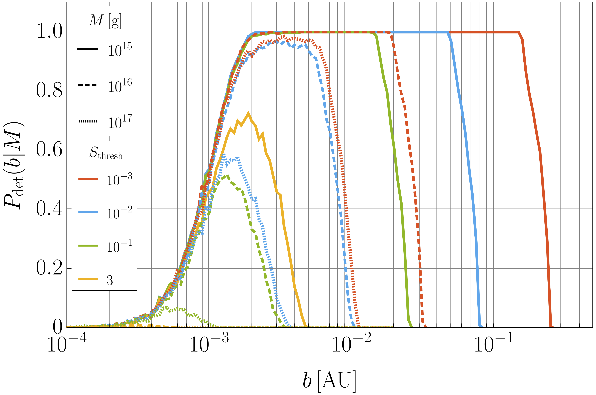
图注：\(\justifying\) Probability of PBH transit detection $\mathcal{P}_{\rm det}(b|M)$ for AMEGO-X as a function of impact parameter $b$ and PBH mass $M$, from Eq.~(\ref{eq:PdetMb}). We assume four values of the SNR threshold sensitivity $S_{\rm thresh}$, assuming that detection of transit events with $S_{\rm thresh}<1$ will be possible with matched filtering, as demonstrated in our previous work \(\cite{Klipfel:2025bvh}.\) Each point is computed with $n=10^3$ simulations. The maximum impact parameter for a reliable detection, $b_{\rm max}(M)$ satisfies $\mathcal{P}_{\rm det}(b_{\rm max}|M)=0.99$.
对应解读：建议重点查看的灵敏度预测/模型比较图；对应摘要中“AMEGO-X 可可靠探测距地 O(0.1 AU) 内 PBH transit”的核心结论。
入选理由：该图直接给出 AMEGO-X 对 PBH 近地掠过事件的探测概率 \(P_det(b|M)\)，横轴/纵轴覆盖 impact parameter 与 PBH mass，并比较不同 SNR 阈值，是评估探测距离、可靠探测条件和仪器灵敏度的最关键图，比单个示例 light curve 更能支撑论文主要结论。
来源与置信度：\(arxiv_source\)；high；\(arxiv_source\) / PBH.EMsignatures-v2.tex:figure[9]
Fig03
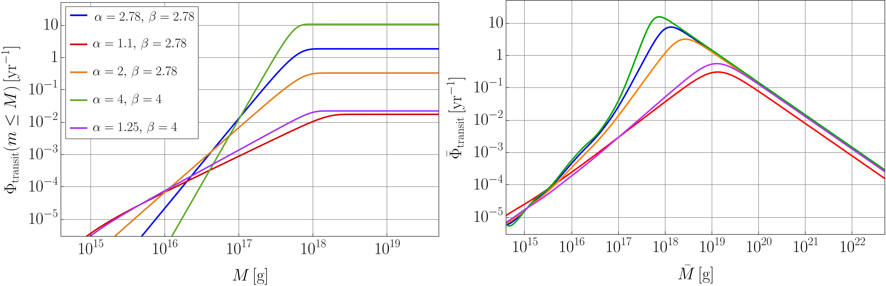
图注：\(\justifying\) (\emph{Left}) Cumulative inner Solar System transit rates for PBHs with mass $m\leq M$ expected to pass within $5\,{\rm AU}$ of the Earth per year, according to Eq.~(\ref{eq:cumulativePhi}). The peak of the number distribution is fixed at $\bar{M}=5\times10^{17}\,{\rm g}$. (\emph{Right}) Total PBH transit rates for impact parameters $b\leq 5 \, {\rm AU}$ as a function of population peak mass $\bar{M}$ and model parameters $\alpha$ and $\beta$, computed with Eq.~(\ref{eq:avgPhi}). We consider transit rates for the same set of representative GCC mass functions as analyzed in Fig.~\(\ref{fig:fPBH}.\) Note that larger values of $\alpha$ and $\beta$ correspond to more sharply-peaked mass functions, so results approach the monochromatic limit for $\alpha=\beta\gtrsim4$.
对应解读：建议重点查看的事件率预测图；对应正文关于 extended PBH mass distribution 下 inner Solar System transit rates 的段落。
入选理由：该图展示 5 AU 内累计与总 PBH transit rate 随质量函数峰值和参数 alpha、beta 的变化，直接连接暗物质质量分布假设与可观测近地事件率，是从理论 PBH 丰度推到观测机会的关键环节。
来源与置信度：\(arxiv_source\)；high；\(arxiv_source\) / PBH.EMsignatures-v2.tex:figure[3]
Fig01
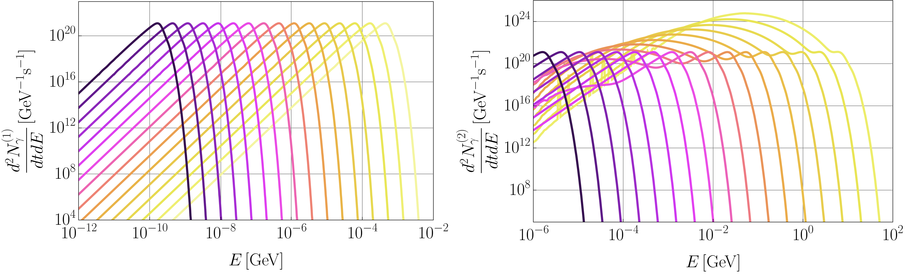
图注：\(\justifying\) (\emph{Left}) Primary photon Hawking emission spectra for Schwarzschild black holes with masses ranging from $10^{17} \, {\rm g}$ (yellow) to $10^{24} \, {\rm g}$ (black). (\emph{Right}) Secondary Hawking emission spectra for PBHs with masses ranging from $10^{13}\,{\rm g}$ (yellow) to $10^{20}\,{\rm g}$ (black). Plots prepared with \(\texttt{BlackHawk v2.2}\) \(\cite{arbeyBlackHawkV20Public2019, arbeyPhysicsStandardModel2021a}.\)
对应解读：建议重点查看的模型输入/辐射谱图；对应 Hawking radiation photon spectra 的基础物理说明。
入选理由：该图给出不同 PBH 质量的一次与二次 Hawking 光子发射谱，解释为什么 asteroid-mass PBH 的峰值频率覆盖红外到伽马射线，是后续 GALEX、AMEGO-X、HAWC/LHAASO 等多波段探测可行性的物理基础。
来源与置信度：\(arxiv_source\)；high；\(arxiv_source\) / PBH.EMsignatures-v2.tex:figure[1]
Fig12
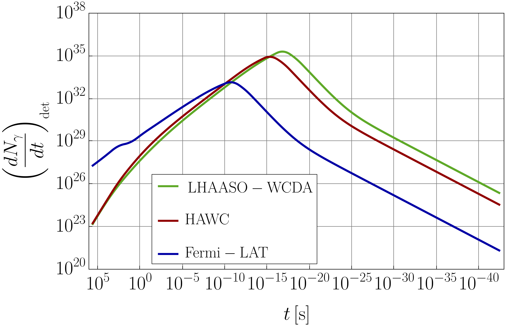
图注：\(\justifying\) Detectable photon emission rate as a function of time throughout a PBH explosion. The PBH is initialized at $t_i=4.13\times10^5\,{\rm s}$ with $M_i=10^{11} \, {\rm g}$ and the explosion completes when the PBH reaches $M=10^{-5}\,{\rm g}$ at $t=4.13\times10^{-43}\,{\rm s}$. Time counts down (from left to right) toward the final explosion. The entire simulated duration is $\tau(10^{11}\,{\rm g})=4.78\,{\rm days}$.
对应解读：建议重点查看的爆发阶段电磁信号预测图；对应 PBH explosion 在远太阳系边缘产生可探测光子信号的讨论。
入选理由：该图展示 PBH 爆发全过程中可探测光子发射率随倒计时变化，直接支撑论文关于末期爆发、HAWC/LHAASO 以及未来类似 KM3-230213A 场景电磁对应体可见性的讨论。
来源与置信度：\(arxiv_source\)；high；\(arxiv_source\) / PBH.EMsignatures-v2.tex:figure[12]
Fig08
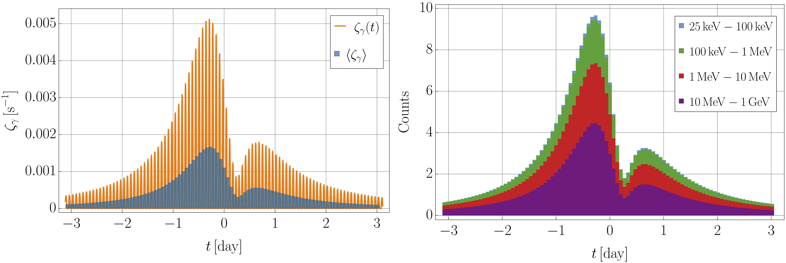
图注：\(\justifying\) Simulated transit signal with parameters $M=10^{15}\,{\rm g}$, $b=0.04\, {\rm AU}$ for the AMEGO-X detector, with $v= 116 \,{\rm km/s}$ selected randomly from the distribution in Eq.~(\ref{eqn:Maxwellian}) for the particular transit shown. (\emph{Top}) The total measured photon count rate as a function of time $\zeta_\gamma(t)$ and the average count rate binned on time intervals of one orbit $\tau$. (\emph{Bottom}) A stacked histogram of total counts in each of the four energy bins. Note that the particular shape of the signal here occurs because the PBH trajectory was such that the signal was occluded by the Earth around the time of closest approach, resulting in two peaks.
对应解读：关键图表逐图导读应重点查看的模拟观测信号；对应 AMEGO-X transit signal、轨道遮挡和分能段计数的说明。
入选理由：该图给出一个具体 AMEGO-X 掠过事件的 photon count rate 时间序列和四个能段的 stacked counts，能直观看到轨道调制、地球遮挡导致的双峰结构以及能段信息，适合解释实际数据中可能出现的信号形态。
来源与置信度：\(arxiv_source\)；high；\(arxiv_source\) / PBH.EMsignatures-v2.tex:figure[8]
Fig02
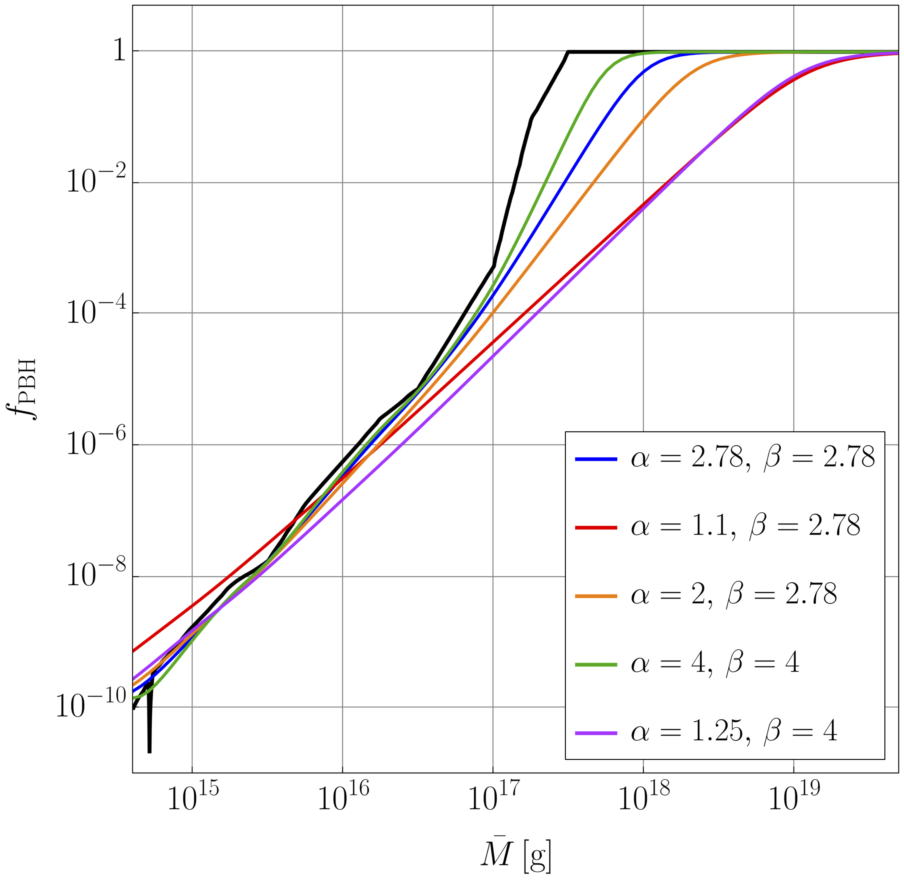
图注：\(\justifying\) Constraints on PBH dark matter fraction $f_{\rm PBH}$ for extended GCC mass functions peaked at $\bar{M}$ with model parameters $\alpha$ and $\beta$, as computed with Eq.~(\ref{eq:fPBHemf}). The black curve consists of evaporation constraints on monochromatic distributions from Refs.~\(\cite{carrConstraintsPrimordialBlack2021,Balaji:2025afr}.\)
对应解读：建议重点查看的参数约束图；对应 extended GCC mass functions 下 PBH dark matter fraction \(f_PBH\) 的约束。
入选理由：该图展示扩展质量函数在不同峰值质量和参数下的 PBH 暗物质占比约束，并与单色质量分布蒸发约束比较，是判断哪些 PBH 质量分布仍可构成全部暗物质、从而决定事件率归一化的重要背景图。
来源与置信度：\(arxiv_source\)；high；\(arxiv_source\) / PBH.EMsignatures-v2.tex:figure[2]
强相关工作
相关基础工作应沿三条线索检索。第一是 Hawking 辐射与 PBH 蒸发的经典文献，以及现代数值谱代码 BlackHawk；关键词包括 “Hawking radiation primordial black holes evaporation photon spectra BlackHawk”。这条线帮助核查 Fig. 1 和 Fig. 12 的谱形、灰体因子、二次粒子产生是否采用标准实现。第二是 PBH 暗物质约束综述，尤其是 Carr 等关于 PBH constraints 的系列综述，以及近年针对小行星质量窗口、蒸发背景、微透镜和动力学限制的更新。论文 Fig. 2 图注已经引用了 Carr constraints 和 Balaji 等工作，读者应从这些文献追踪单色约束如何推广到扩展质量函数。
相似工作方面，应检索“solar system primordial black hole transit Hawking radiation gamma-ray detector”、“PBH flyby electromagnetic signature”、“AMEGO-X primordial black hole”以及作者早先关于 matched filtering 的文章。本文 Fig. 9 图注提到 previous work 中展示了低于单 bin 阈值的 transit 事件可通过 matched filtering 发现，因此那篇前作是理解 SNR 阈值和模板搜索假设的直接背景。还应比较其他多波段仪器灵敏度研究，例如用 Fermi-LAT、INTEGRAL、AMEGO/e-ASTROGAM、HAWC、LHAASO 或 CTA 搜索 PBH 蒸发瞬变的工作。
张力或反对线索主要来自两类。第一类是观测空结果：弥散伽马背景、银河中心/局域伽马源统计、短时 TeV 爆发搜索若未发现 PBH 爆发，会对低质量 PBH 丰度或爆发率给出上限。第二类是理论不确定性：扩展质量函数的低质量尾、PBH 自旋分布、末期蒸发的粒子物理和量子引力修正，都可能改变本文的电磁信号预测。检索时建议把“PBH burst limits HAWC LHAASO Fermi”与“extended mass function evaporation constraints”结合，寻找与本文乐观探测距离或事件率是否存在张力的研究。
相似工作：
（未提供）
基础理论 / 方法工作：
（未提供）
相反观点 / 张力线索：
（未提供）
7. GWTC-4.0: Population Properties of Merging Compact Binaries
- 来源：arXiv / astro-ph.HE
- 链接：https://arxiv.org/abs/2508.18083v2
- 作者：The LIGO Scientific Collaboration, the Virgo Collaboration, the KAGRA Collaboration, A. G. Abac, I. Abouelfettouh, F. Acernese, K. Ackley, C. Adamcewicz
- 评分：novelty 7/10，importance 9/10，relevance 7/10，final 8.70/10
- 推荐理由：Major LVK population paper based on GWTC-4.0 with important compact-binary demographic results; not gamma-ray focused but significant for high-energy/multimessenger astrophysics.
中文题目：GWTC-4.0：并合致密双星的总体族群性质
做了什么：这篇 LIGO、Virgo、KAGRA 合作组论文用累计引力波瞬变星表 GWTC-4.0 中的 158 个并合事件，重新估计双黑洞、黑洞-中子星和双中子星的族群分布。核心结论是：黑洞质量分布不是单一幂律，而是在主星质量约 \(10\,M_\odot\) 和 \(35\,M_\odot\) 处有稳健结构，约 \(20\,M_\odot\) 处可能还有第三个特征；高于 \(35\,M_\odot\) 后连续谱明显变陡。自旋方面，黑洞自旋总体不接近极端，\(90\%\) 的黑洞满足 \(\chi<0.57\)，且自旋与轨道角动量有偏向对齐的趋势，但仍有 \(0.24\) 到 \(0.42\) 的双星具有负的有效旋进前自旋 \(\chi_{\rm eff}\)，提示孤立演化和动力学形成都可能有显著贡献。论文还发现 \(\chi_{\rm eff}\) 与质量比 \(q\) 之间存在相关迹象，特别是约 \(10\,M_\odot\) 主星附近的双黑洞更倾向于有较小伴星质量，质量比分布峰值约为 \(q=0.74^{+0.13}_{-0.13}\)。
为什么重要：引力波事件已经多到可以从“逐个源的发现”进入“族群天体物理”阶段。黑洞质量分布中的峰、谷和截断直接对应恒星演化、超新星爆炸机制、金属丰度、质量转移、共同包层、动力学俘获以及可能的层级并合。GWTC-4.0 的样本量和灵敏度比早期星表更好，使得此前疑似的 \(10\,M_\odot\) 与 \(35\,M_\odot\) 特征可以在更系统的层级贝叶斯框架下检验。
理论 / 观测 / 仪器方法价值：这篇文章的价值不只是给出若干族群参数，而是把选择效应、探测灵敏度、事件后验和多种半参数化质量/自旋模型放在统一层级推断中处理。对理论工作者，它给出了需要解释的质量谱结构、自旋取向分布和质量比-自旋相关；对观测和数据分析，它展示了在非均匀探测选择函数下如何从事件样本反推真实宇宙并合率密度；对后续仪器规划，它告诉我们哪些质量和自旋区间最能区分形成通道。
为什么应该关注：如果你关心大质量恒星最终怎么死、双星相互作用是否真的主导了双黑洞形成、球状星团或核星团里的动力学并合占多少，或者未来第三代引力波探测器应该优先提升哪个参数空间的灵敏度，这篇论文都值得读。它把“黑洞质量谱有结构吗”和“自旋是否能区分形成通道”这两个长期问题推到了更定量的层面，也给出了许多可被下一轮 O4/O5 数据直接检验的预测和张力。
展开详细解读：文章讲解、背景、理论、重点章节、图表与相关工作
文章详细讲解
科学问题：论文要回答的是，当前累计引力波样本中的致密双星是否来自一个简单、光滑的母体分布，还是已经显现出多种形成通道和恒星演化物理留下的结构。早期 GWTC 样本已经显示双黑洞质量分布可能在 \(30\) 到 \(40\,M_\odot\) 附近有峰或转折，也可能在低质量端有额外聚集；但样本少时，这些结构很容易与选择效应、单个高信噪比事件或参数化模型先验混淆。GWTC-4.0 的 158 个并合事件使得质量、自旋、质量比、红移演化和并合率之间的层级关系可以更细致地估计。
作者怎么做：合作组使用了累计 GWTC-4.0 事件样本，覆盖双中子星、黑洞-中子星和双黑洞三类并合，但主要统计信息来自双黑洞。方法上采用层级贝叶斯族群推断：每个事件的参数估计后验被视为对真实源参数的有噪声抽样，再用探测选择函数修正“哪些源容易被看到”。论文比较了多种质量分布模型，包括幂律连续谱、带峰结构的模型和更灵活的非参数或半参数模型；自旋部分则估计自旋大小、倾角、有效自旋 \(\chi_{\rm eff}\) 及其与质量比 \(q\) 的关系。
关键结果：黑洞主星质量分布中 \(10\,M_\odot\) 和 \(35\,M_\odot\) 附近的过密度/欠密度结构持续存在，并且约 \(20\,M_\odot\) 的第三个特征有一定迹象。连续谱在 \(35\,M_\odot\) 以上变陡，这可能与恒星风质量损失、脉动对不稳定超新星、形成效率随金属丰度变化或层级并合混合有关。约 \(10\,M_\odot\) 的主星更倾向于搭配较小伴星，质量比分布峰值 \(q=0.74^{+0.13}_{-0.13}\)，这被解释为稳定质量转移等孤立双星演化过程可能留下的信号。自旋方面，黑洞普遍非极端，\(90\%\) 满足 \(\chi<0.57\)，并且总体偏向与轨道对齐；但负 \(\chi_{\rm eff}\) 的比例仍达到 \(0.24\) 到 \(0.42\)，说明气体贫乏环境中的动力学形成或其它产生错列自旋的机制不可忽略。
局限和下一步：这些结论仍依赖波形系统误差、事件选择阈值、族群模型参数化和低信噪比候选体的处理。质量谱中的“峰”不一定是一一对应的物理种群；它也可能是多个连续形成通道叠加后在当前样本下的统计表象。\(\chi_{\rm eff}\) 与 \(q\) 的相关性尤其需要谨慎，因为有效自旋、质量比和进动参数在单事件后验中存在显著退化。下一步需要更多 O4/O5 事件、更好的高阶模和进动波形、更一致的选择函数估计，以及把引力波族群与星族合成、星团动力学和宿主星系环境模型联合起来比较。
背景知识
研究对象是并合致密双星，包括双黑洞、黑洞-中子星和双中子星。对双黑洞而言，引力波直接测到的是质量、自旋和距离等参数，而这些参数是大质量恒星演化、双星相互作用和动力学环境的“化石记录”。例如黑洞质量分布的高质量端会受恒星风、金属丰度和对不稳定机制影响；质量比和自旋取向则与双星质量转移、共同包层、潮汐同步、超新星踢速以及星团动力学散射有关。
历史上，X 射线双星给出的恒星级黑洞质量样本很小，而且强烈受电磁选择效应影响。LIGO 在 2015 年探测到 GW150914 后，立刻显示宇宙中存在比银河系 X 射线双星样本更重的黑洞。随后 GWTC-1、GWTC-2 和 GWTC-3 逐步积累了几十到近百个事件，族群研究从简单的幂律质量谱走向带峰结构、红移演化和自旋倾角混合模型。GWTC-4.0 的意义在于样本进一步扩大，使一些早期“看起来像结构”的特征可以被重复检验。
为什么现在值得重新看：族群推断的统计能力并不是简单随事件数线性增长，因为选择函数、测量误差和模型复杂度都会影响有效信息量。随着事件数达到百量级，研究者可以开始询问更细的问题：\(10\,M_\odot\) 附近的结构是否真实？\(35\,M_\odot\) 附近是峰、谷还是斜率变化？负 \(\chi_{\rm eff}\) 源的比例是否足以要求动力学形成通道？这些问题在几十个事件时往往被模型先验主导，现在则逐渐进入数据可约束的区域。
一个常见误区是把质量谱的每个峰都直接解释成一个单独形成通道。实际上，观测到的质量谱是宇宙并合率、探测选择效应、波形参数退化和模型平滑尺度共同作用后的结果。另一个误区是认为自旋对齐就等于孤立演化、负 \(\chi_{\rm eff}\) 就等于动力学形成；真实情况更复杂，孤立双星可因超新星踢速产生错列，动力学形成也可能通过层级并合或气体盘环境产生偏向对齐的子样本。因此这篇论文更应该被看作对形成通道混合比例的统计约束，而不是逐个事件的分类表。
基础理论 / 方法脉络
基础物理图像是：两个致密天体绕转时通过引力波带走能量和角动量，轨道逐渐收缩并最终并合。波形的相位演化主要由啁啾质量控制，振幅与距离、取向和质量有关；高阶相位项、高阶模、进动和并合环降阶段则提供质量比、自旋大小和自旋取向信息。单个事件给出的不是精确点估计，而是多维参数空间中的后验分布。
族群推断的关键是区分“被探测到的样本分布”和“宇宙真实分布”。高质量双黑洞在给定距离下信号更强，探测体积更大，因此原始星表会高估重黑洞比例；而质量比、自旋和红移也会通过波形持续时间、频带覆盖和信噪比影响探测概率。论文必须用选择函数修正这种 Malmquist 型偏差，否则质量谱中的峰和斜率会被系统性扭曲。
本文关心的核心参数包括主星质量 \(m_1\)、伴星质量 \(m_2\)、质量比 \(q=m_2/m_1\)、自旋大小 \(\chi_i\)、自旋与轨道角动量夹角 \(\theta_i\)、有效旋进前自旋 \(\chi_{\rm eff}\)、红移 \(z\) 和并合率密度 \(R(z)\)。其中 \(\chi_{\rm eff}\) 是引力波相位中最容易测到的自旋组合，对判断自旋是否整体对齐很有用；但它会把两个黑洞的自旋大小、方向和质量权重压缩成一个数，因此不能单独唯一反演形成通道。
模型假设上，族群分布通常写成带超参数 \(\Lambda\) 的概率密度 \(p(\theta\mid\Lambda)\)，其中 \(\theta\) 表示单个源参数。\(\Lambda\) 可以包含幂律斜率、峰位置、峰宽、混合比例、自旋分布参数和红移演化指数。更灵活的模型可以减少强参数化偏差，但会引入平滑尺度、节点数或正则化选择等新的系统误差。
常见退化包括：\(m_1\)、\(m_2\) 与红移质量之间的宇宙学退化；\(q\) 与 \(\chi_{\rm eff}\) 在相位中的相关；自旋进动参数与取向角、信噪比之间的选择效应；以及质量谱高质量端与探测体积修正之间的耦合。因此，读这篇论文时不能只看最佳拟合曲线，而要看后验带宽、模型比较、注入恢复和对候选体阈值的稳健性。
公式与推导
从单个双星的基本量开始。设源系分量质量为 \(m_1\ge m_2\)，总质量为 \(M=m_1+m_2\)，对称质量比为 \(\eta=m_1m_2/M^2\)。引力波相位最敏感的组合是啁啾质量：
这里 \(\mathcal{M}\) 控制低阶吸积前相位的扫频速率，因此也是单事件中通常测得最好的质量组合。红移会把源系质量变成探测器系质量，\(\mathcal{M}_{\rm det}=(1+z)\mathcal{M}\)。
在圆轨道、四极矩近似下，频率演化可写成：
其中 \(f\) 是引力波频率，\(G\) 是引力常数，\(c\) 是光速。这个式子说明为什么质量测量来自相位累积，而不是只来自振幅；族群推断中的单事件后验本质上继承了这个相位信息。
自旋进入相位的一个主要可测组合是有效自旋：
其中 \(\chi_i\) 是第 \(i\) 个黑洞的无量纲自旋大小，\(\theta_i\) 是自旋方向与轨道角动量的夹角。若 \(\chi_{\rm eff}>0\)，平均上表示自旋分量与轨道角动量同向；若 \(\chi_{\rm eff}<0\)，则需要至少一个显著反向投影自旋。
族群模型把单个源参数 \(\theta\) 的真实分布写成：
其中 \(\Lambda\) 是描述质量谱、自旋谱和红移演化的超参数。若质量谱有幂律连续项和峰结构，可抽象写为：
其中 \(C\) 是归一化常数，\(\alpha\) 是幂律斜率，\(\lambda_{\rm p}\) 是峰的混合比例，\(\mu_{\rm p}\) 和 \(\sigma_{\rm p}\) 是峰位置与宽度。论文实际比较的模型更丰富，但这一形式说明“连续谱加结构”的推断逻辑。
探测选择效应由探测概率进入。给定超参数 \(\Lambda\)，可探测比例为：
其中 \(p_{\rm det}(\theta)\) 是具有参数 \(\theta\) 的源被搜索管线检出的概率。高质量源通常有更大的 \(p_{\rm det}\)，因此若不除以 \(\alpha(\Lambda)\)，就会把选择效应误认为真实族群过密度。
对 \(N\) 个事件的层级似然可写成：
其中 \(d_i\) 是第 \(i\) 个事件的数据，\(\mathcal{L}_i\) 是单事件似然，\(R(\theta\mid\Lambda)\) 是微分并合率，\(\mu(\Lambda)\) 是给定族群下预期探测数。若只关注形状并把总率边缘化，常见形式为：
这个式子体现了两个步骤：用族群先验重加权单事件后验，并用选择函数惩罚容易被探测的族群模型。
实际计算通常用单事件后验样本重加权。若事件分析采用的参考先验为 \(\pi(\theta)\)，则积分近似为：
其中 \(\theta_{is}\) 是第 \(i\) 个事件的第 \(s\) 个后验样本，\(S_i\) 是样本数。这个公式是读懂族群论文的关键：族群结论不是重新拟合原始应变数据，而是对单事件后验进行一致的超参数重加权。
如果要检验 \(\chi_{\rm eff}\) 与 \(q\) 的相关，可设条件均值模型：
其中 \(\mu_0\) 是参考质量比 \(q_0\) 处的平均有效自旋，\(\kappa\) 描述相关斜率。若 \(\kappa\ne0\) 的后验远离零，就说明数据偏好质量比与有效自旋相关；但这仍需检查宽度变化模型，因为相关可能来自分布宽度而非均值移动。
模型拟合 / 应用方法
这类族群分析拟合的不是单个事件的波形参数，而是超参数 \(\Lambda\)：质量谱斜率、峰位置、峰宽、低/高质量截断、质量比分布参数、自旋大小分布、自旋倾角混合比例、\(\chi_{\rm eff}\) 分布形状、红移演化以及总并合率。论文通过把每个事件的后验样本重加权到不同族群模型下，计算层级似然或后验，从而估计真实宇宙分布而非探测样本分布。
先验选择在这里很重要。质量谱峰的数量、平滑尺度和允许的峰宽会影响是否“看见” \(10\,M_\odot\)、\(20\,M_\odot\) 或 \(35\,M_\odot\) 的结构；自旋倾角模型若过于简单，可能把连续错列分布误分解成“对齐”和“各向同性”两个成分。读者应重点看不同模型族下结论是否一致，而不是只接受某一个最灵活模型的曲线。
残差诊断应围绕 posterior predictive check 展开：用拟合得到的族群分布生成模拟探测样本，再与真实事件在 \(m_1\)、\(q\)、\(\chi_{\rm eff}\)、红移和信噪比分布上比较。如果模型在高质量端、低质量比端或负 \(\chi_{\rm eff}\) 端系统性欠预测，就说明形成通道或参数化还不充分。对于质量谱结构，关键不是某个点的最高后验密度，而是峰/谷相对连续谱的显著性和跨模型稳定性。
主要退化包括 \(q\) 与 \(\chi_{\rm eff}\) 的波形相位退化、质量谱高质量端与红移演化的耦合、低质量黑洞与中子星质量边界的分类不确定性，以及选择函数在搜索阈值附近的不确定性。某些事件若具有很大的参数不确定度或边缘显著性，会对非参数模型产生局部影响，因此稳健性检验通常需要改变事件选择、搜索管线阈值和注入集处理。
模型可能失败的地方也很清楚：如果真实宇宙由多个具有强环境依赖的通道组成，单一全局分布会平均掉宿主星系金属丰度、形成时延和星团逃逸速度等信息；如果波形系统误差在高质量、强进动或高质量比事件中不可忽略，自旋和质量比相关性可能被偏移；如果低红移样本仍太小，红移演化与质量谱演化很难拆开。因此论文的参数应被理解为“当前探测条件下的有效族群描述”，而不是最终的恒星演化常数表。
重点章节 / 结果段落怎么读
数据/样本部分：先看 GWTC-4.0 包含哪些事件、采用什么显著性阈值、如何处理双中子星和黑洞-中子星事件，以及哪些事件在族群分析中权重最大。读者应注意样本定义，因为边缘事件是否纳入会影响低质量端和负 \(\chi_{\rm eff}\) 尾部。
方法部分：重点读层级贝叶斯推断、选择函数估计和后验样本重加权。这里决定了论文如何从“探测到的 158 个事件”推断“宇宙真实并合族群”。尤其要检查注入模拟、灵敏度估计和模型比较的实现，因为这些环节直接影响质量谱峰的可信度。
质量分布结果部分：这是论文的核心。建议关注 \(m_1\) 分布在 \(10\,M_\odot\)、\(20\,M_\odot\) 和 \(35\,M_\odot\) 附近的结构，以及高于 \(35\,M_\odot\) 后斜率变陡的证据。还要看质量比分布是否随 \(m_1\) 改变，特别是 \(10\,M_\odot\) 附近质量比峰值偏离 \(q=1\) 的结果。
自旋结果部分：读 \(\chi\)、\(\chi_{\rm eff}\)、自旋倾角和负 \(\chi_{\rm eff}\) 分数。这里最需要警惕的是单事件自旋测量较弱，因此族群结论高度依赖层级汇总。\(90\%\) 黑洞满足 \(\chi<0.57\) 与偏向对齐、同时有 \(0.24\) 到 \(0.42\) 负 \(\chi_{\rm eff}\) 比例，这三点要一起理解。
讨论/稳健性检验部分：看作者如何比较孤立演化、动力学形成和层级并合解释，以及他们对 \(\chi_{\rm eff}\)-\(q\) 相关的谨慎表述。附录或补充材料通常包含模型变体、先验敏感性、注入恢复和事件剔除测试，是判断结论是否被模型驱动的关键。
建议重点查看的图表
-
主星质量 \(m_1\) 的族群后验分布图：看 \(10\,M_\odot\)、\(20\,M_\odot\)、\(35\,M_\odot\) 附近是否有超出可信区间的结构，以及高质量端斜率如何变化。
-
二维质量分布 \((m_1,q)\) 或 \((m_1,m_2)\) 图：重点看 \(m_1\sim10\,M_\odot\) 附近是否偏向较低 \(q\)，以及等概率轮廓是否受少数事件支配。
-
自旋大小 \(\chi\) 和 \(\chi_{\rm eff}\) 分布图：看 \(\chi<0.57\) 的 \(90\%\) 上限如何体现，负 \(\chi_{\rm eff}\) 尾部是否稳定。
-
自旋倾角或对齐/各向同性混合比例图：检查自旋偏向对齐的证据强度，以及是否仍允许大量错列系统。
-
\(\chi_{\rm eff}\) 与 \(q\) 的相关图：看条件均值、宽度或分位数如何随 \(q\) 改变，避免把宽度变化误读成均值相关。
-
posterior predictive check 或模型残差图：检查模型生成的探测样本是否能重现真实样本的质量、自旋和红移分布。
-
选择函数/灵敏度图或注入恢复表：看高质量、低质量比和自旋极端区域的探测效率，判断族群结构是否可能来自选择效应修正。
关键图表逐图导读
图 1：通常应是累计事件在质量空间或探测器系参数空间中的概览。横轴可能是主星质量 \(m_1\) 或总质量，纵轴可能是伴星质量 \(m_2\) 或质量比 \(q\)。数据点表示单事件中位数或后验区间。读图时不要把点的密集程度直接当真实分布，因为高质量系统探测体积更大；应把它视为后续选择函数修正前的观测样本。
图 2：主星质量分布的核心图。横轴为源系 \(m_1\)，纵轴为概率密度或微分并合率密度，彩色带表示族群后验可信区间，虚线或细线可能表示不同模型。重点看 \(10\,M_\odot\) 和 \(35\,M_\odot\) 附近的峰/谷是否在多模型下持续存在。陷阱是纵轴通常经过归一化或选择修正，不能与原始事件直方图逐点比较。
图 3：质量比随主星质量变化的图。横轴可能是 \(m_1\)，纵轴为 \(q\) 的条件分布或峰值位置。若 \(m_1\sim10\,M_\odot\) 处 \(q\) 峰值在 \(0.74\) 附近，说明这一区域更常见不等质量双星。读图时要检查置信区间宽度，因为低质量比系统的测量和探测效率都可能更差。
图 4：自旋大小分布图。横轴为 \(\chi\)，纵轴为概率密度或累积分布。关键结论是黑洞自旋总体非极端，\(90\%\) 满足 \(\chi<0.57\)。若图中有不同自旋模型曲线，应比较它们在高 \(\chi\) 尾部是否一致；高自旋尾部常受少数进动候选事件影响。
图 5：\(\chi_{\rm eff}\) 分布或负 \(\chi_{\rm eff}\) 分数图。横轴为 \(\chi_{\rm eff}\)，纵轴为族群概率密度，零点左侧面积对应反向投影自旋比例。主要结论是分布偏向正值但有显著负值面积。陷阱是 \(\chi_{\rm eff}\) 接近零的宽分布可以由低自旋、各向同性自旋或混合通道产生，不能唯一解释。
图 6：\(\chi_{\rm eff}\)-\(q\) 相关诊断图。横轴为 \(q\)，纵轴为 \(\chi_{\rm eff}\) 的均值、中位数或分位数带。若模型线随 \(q\) 变化，说明数据偏好相关；但要同时看分布宽度是否变化，因为宽度变化也会改变负 \(\chi_{\rm eff}\) 分数。读者应检查零相关模型是否仍在可信区间内。
图 7：模型检验或残差图。横轴可以是排序后的事件统计量、质量、自旋或红移，纵轴为观测分布与后验预测分布之差。好的模型应没有系统性残差；若在 \(35\,M_\odot\) 以上或负 \(\chi_{\rm eff}\) 区域持续偏离，说明模型可能漏掉物理通道或选择效应。
论文原图 / 可嵌入图片
Fig03
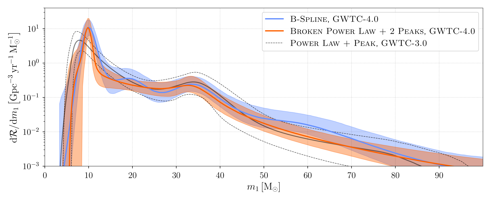
图注：Differential merger rate as a function of primary mass (evaluated at $z=0.2$) of the \(\BrokenPLTwoPeaks\) model (orange) and \(\BSpline\) model (blue) compared to the \(\PLPeak\) model from \(\gwtcthree\) \(\citep{KAGRA:2021duu}.\) The solid lines indicate the posterior medians and the shaded regions show the 90\% credible interval of each model. Comparing these results, it is clear that a single power law is a poor description of the the low-mass end of the spectrum.
对应解读：建议重点查看的图表 1；关键图表逐图导读“图 2：主星质量分布的核心图”；模型拟合中关于质量谱峰、幂律连续谱和跨模型稳定性的讨论。
入选理由：这是最直接支撑主星质量谱结论的图，横轴为主星质量、纵轴为微分并合率，并同时给出 BrokenPLTwoPeaks、BSpline 与 GWTC-3 Power Law + Peak 的中位数和 90% 可信区间。它最适合检查低质量端是否偏离单一幂律、10/20/35 M⊙ 附近结构是否跨模型存在，以及高质量端谱形如何变化。
来源与置信度：\(arxiv_source\)；high；\(arxiv_source\) / \(arXiv_v2.tex\):figure[3]
Fig06
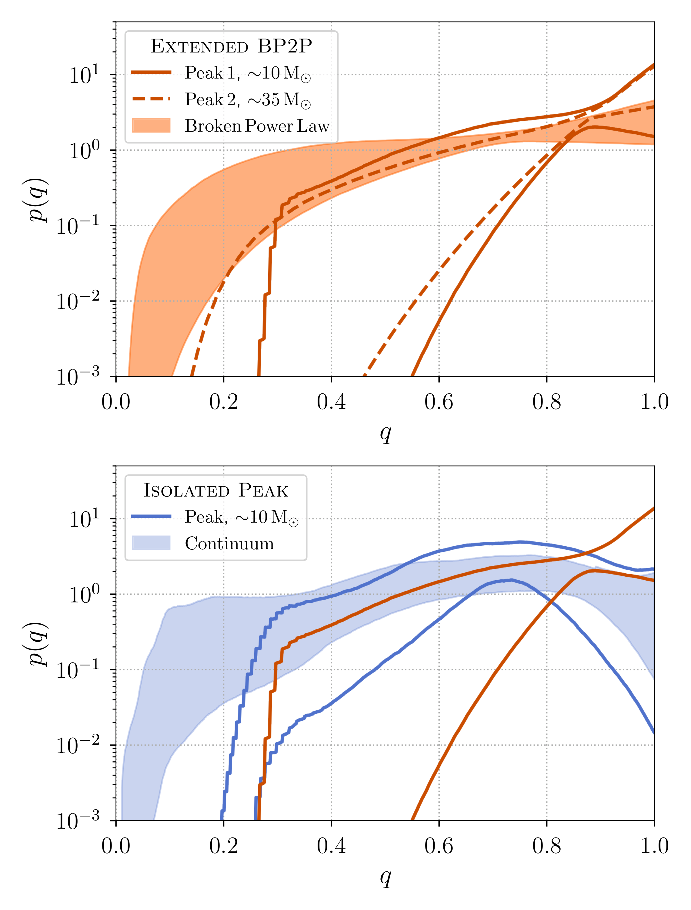
图注：Top Panel: The $90\%$ credible regions for the mass-ratio distribution of the ${\sim}10 \,\Msun$ peak (solid orange curves), ${\sim}35 \,\Msun$ peak (dashed curves), and continuum (orange shaded region) components of the \(\ExtendedBrokenPLTwoPeaks\) model. Bottom Panel: The $90\%$ credible regions for mass-ratio distribution of the ${\sim}10 \,\Msun$ peak (solid blue curves) and the rest of the mass spectrum (blue shaded region) inferred with the \(\textsc{Isolated Peak}\) model. The ${\sim}10\, \Msun$ peak mass-ratio distribution from the \(\ExtendedBrokenPLTwoPeaks\) is included for comparison.
对应解读：建议重点查看的图表 2；关键图表逐图导读“图 3：质量比随主星质量变化的图”；详细解读中关于 m1≈10 M⊙ 系统偏向较低 q、q=0.74 的结论。
入选理由：该图专门比较约 10 M⊙ 峰、约 35 M⊙ 峰和连续谱成分的质量比分布，是验证低质量主星是否更常伴随不等质量双星的核心证据。相比只给出整体 q 分布的图，它能直接对应日报强调的 m1≈10 M⊙ 与 q 的条件关系。
来源与置信度：\(arxiv_source\)；high；\(arxiv_source\) / \(arXiv_v2.tex\):figure[6]
Fig11
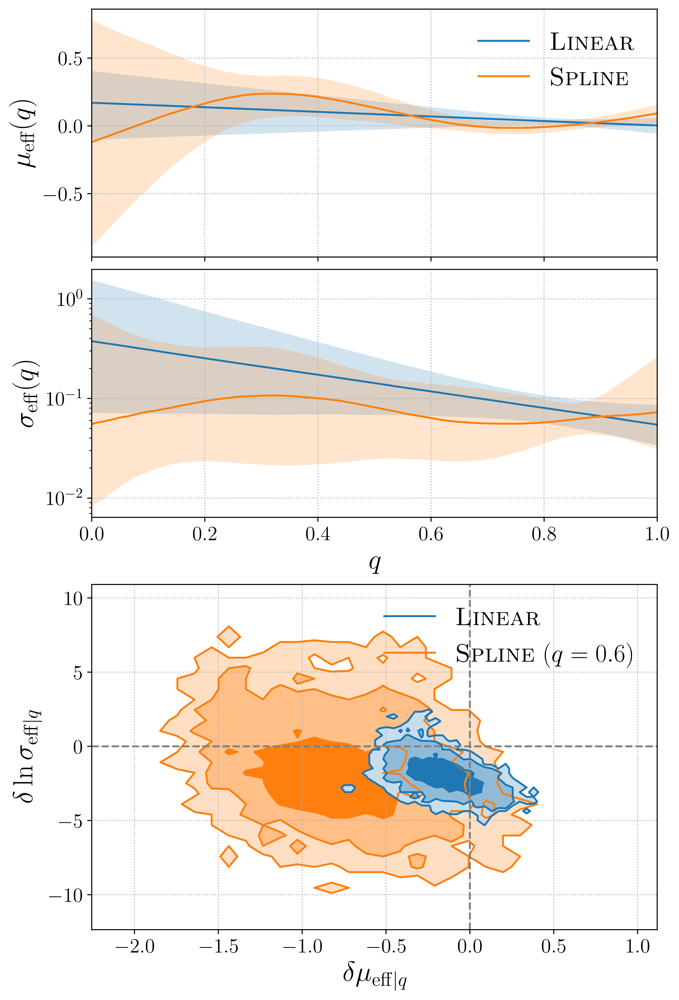
图注：The inferred peak (top) and width (middle) of the $\chieff$ distribution as a function of mass ratio for the $(q,\chieff)$~\(\linearcorrelation\)~model (blue) and \(\splinecorrelation\)~model (orange). The shaded regions in these panels give the \(\confidenceLevel\)~credible intervals. The bottom panel gives the posterior distribution for the gradient of the $\chieff$ distribution's peak ($\delta \mu_{\mathrm{eff}|q}$) and natural log width ($\delta \ln \sigma_{\mathrm{eff}|q}$) dependent on mass ratio. From dark to light, the shaded regions represent the 50\%, 90\% and 99\% credible intervals. Again, blue gives the result of the \(\linearcorrelation\)~model, while orange shows the result of the \(\splinecorrelation\)~model sliced through $q=0.6$ (the approximate point at which the gradients are largest). It appears that mass ratio and $\chieff$ exhibit some kind of correlation, but the exact nature is unclear.
对应解读：建议重点查看的图表 5；关键图表逐图导读“图 6：χ_eff-q 相关诊断图”；模型拟合中关于 q 与 χ_eff 退化、均值变化和宽度变化的讨论。
入选理由：该图同时展示 χ_eff 分布峰值和宽度如何随质量比变化，并给出线性相关模型与样条相关模型的可信区间及梯度后验。它正好对应日报提醒的关键陷阱：不能只把 χ_eff-q 相关理解为均值变化，还要检查宽度是否随 q 改变。
来源与置信度：\(arxiv_source\)；high；\(arxiv_source\) / \(arXiv_v2.tex\):figure[11]
Fig07
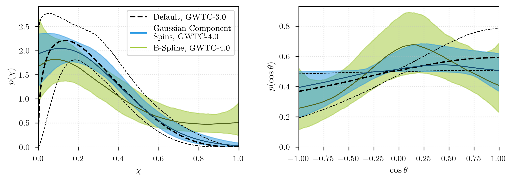
图注：Marginal spin magnitude $\chi$ (left) and cosine tilt angle $\cos\theta$ (right) distributions under the \(\default\) (blue) and \(\BSpline\) (green) models. The results from the \(\gwtcthree\)~{\(\sc\) Default} are shown for comparison (black dashed); note that this model is different from what is used for \(\gwtcfour.\) The \(\gwtcthree\) analysis employed a Beta distribution for spin magnitudes rather than a truncated normal, and fixed the location of the Gaussian component of the spin tilt angle distribution to $\cos\theta=1$ rather than letting it vary freely in inference. The solid lines show the median of the inferred distributions from \(\gwtcfour,\) and the shaded regions show their 90\% credible regions. The thick dashed lines show the median from \(\gwtcthree,\) while the thin dashed lines show its 90\% credible region.
对应解读：建议重点查看的图表 3 和 4；关键图表逐图导读“图 4：自旋大小分布图”；自旋倾角或对齐/各向同性混合比例相关段落。
入选理由：该图把自旋大小 χ 与倾角 cosθ 的边缘分布放在同一图中，并比较默认模型、BSpline 模型和 GWTC-3 结果。它可同时支撑“黑洞自旋非极端”和“自旋总体偏向对齐但仍允许错列”的两项核心结论，是自旋部分最基础的图。
来源与置信度：\(arxiv_source\)；high；\(arxiv_source\) / \(arXiv_v2.tex\):figure[7]
Fig09
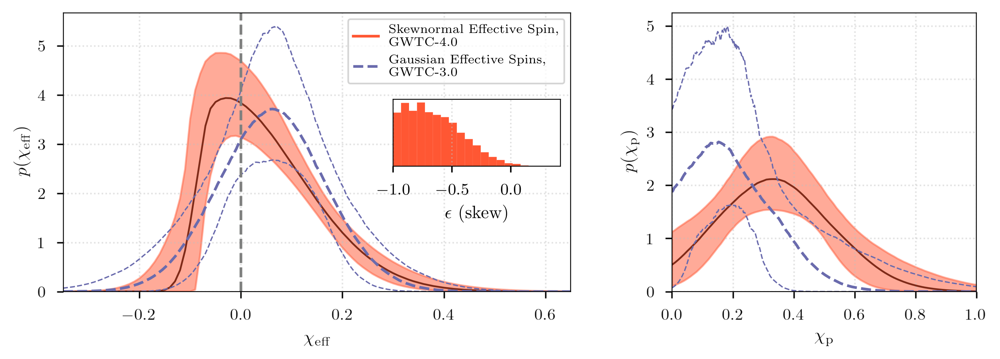
图注：Marginal $\chieff$ (left panel) and $\chip$ (right panel) distributions. The solid lines show the median of each inferred distribution, and the shaded regions show the 90\% credible intervals. The \(\gwtcfour\) results under the \(\skewnormalChiEff\) model are shown in red; the \(\gwtcthree\) results under the \(\effectiveSpinModel\)~model are shown in purple dashed. The histogram inset in the left panel shows the skew parameter $\epsilon$ for the \(\skewnormalChiEff\)~model. There is significant preference for a skewed $\chieff$ distribution, indicated by $\epsilon < 0$ with $\EpsSkewNormalChiEff[param][percent of epsilon less than zero]$\% credibility.
对应解读：建议重点查看的图表 3；关键图表逐图导读“图 5：χ_eff 分布或负 χ_eff 分数图”；详细解读中关于负 χ_eff 比例达到 0.24–0.42 的讨论。
入选理由：该图直接给出 χ_eff 和 χ_p 的边缘族群分布，包含中位数、90% 可信区间以及偏斜参数信息。它最适合读者判断 χ_eff 分布是否偏向正值、零点左侧负 χ_eff 尾部是否显著，以及这种尾部对动力学形成解释的约束强度。
来源与置信度：\(arxiv_source\)；high；\(arxiv_source\) / \(arXiv_v2.tex\):figure[9]
Fig01
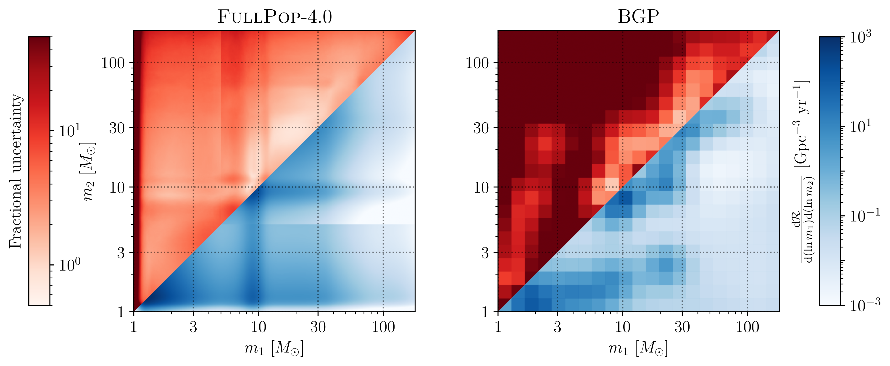
图注：The complete mass spectrum, inferred using the \(\parametricAdj\) \(\PDB\) and \(\nonparametricAdj\) \(\ac{BGP}\) analyses. In the lower triangle of the $m_1$--$m_2$ plane (where $m_1 > m_2$ by definition), we show median merger rate density across primary and secondary masses. At $m_2 = 5\,\Msun$, the \(\PDB\) model transitions to an alternative pairing function to allow for \(\acp{NSBH},\) hence the discontinuity at $m_2 = 5\,\Msun$. In the upper triangle we show the fractional uncertainty in the merger rate reflected across the diagonal. The fractional uncertainty $\Delta\mathcal{R} /\mathcal{R}$ is difference of the 95th and 5th percentile values divided by the median merger rate. Both the \(\PDB\) and \(\ac{BGP}\) models show similar broad features: a population of \(\acp{BNS}\) at primary and secondary masses $\lesssim 2\,\Msun$, a population of \(\acp{NSBH}\) at primary mass $\sim 9\,\Msun$ and secondary mass $\lesssim 2\,\Msun$, and finally the population of \(\acp{BBH}\) with primary and secondary masses $\gtrsim 9\,\Msun$. The uncertainties are the smallest in the $\sim 9\,\Msun$ and $\sim 30\,\Msun$ \(\ac{BBH}\) peaks.
对应解读：建议重点查看的图表 2；关键图表逐图导读“图 1：累计事件在质量空间中的概览”；详细解读中关于 BNS、NSBH、BBH 三类并合总体样本的说明。
入选理由：这是候选图中唯一的二维 m1-m2 质量谱全景图，同时给出并合率密度和分数不确定度。它有助于把 BNS、NSBH 与 BBH 的质量区域、约 9 M⊙ 和约 30 M⊙ BBH 峰以及不确定度分布放在同一质量空间中理解，适合作为进入后续一维质量谱和质量比分布分析的总览图。
来源与置信度：\(arxiv_source\)；high；\(arxiv_source\) / \(arXiv_v2.tex\):figure[1]
强相关工作
这篇工作直接延续了 GWTC-1、GWTC-2 和 GWTC-3 的族群论文。早期结果已经指出双黑洞质量分布不是简单 Salpeter 式幂律，可能存在 \(30\) 到 \(40\,M_\odot\) 的峰和高质量端截断；GWTC-4.0 的贡献是用更大样本把 \(10\,M_\odot\) 结构、\(35\,M_\odot\) 特征和自旋-质量比相关放在同一框架下检验。建议检索关键词包括 “GWTC-3 population properties compact binaries”, “binary black hole mass distribution peak 35 solar masses”, “effective spin mass ratio correlation gravitational waves”。
理论上，相关工作包括孤立双星星族合成、共同包层与稳定质量转移模型、球状星团和核星团动力学形成、AGN 盘中并合以及层级并合模型。不同模型对 \(q\)、\(\chi_{\rm eff}\)、高质量端和红移演化有不同预测；例如稳定质量转移可能产生不等质量但自旋较对齐的系统，动力学形成更容易产生各向同性自旋和负 \(\chi_{\rm eff}\)，层级并合则可能贡献较高质量和较高自旋黑洞。相反观点或张力主要集中在：质量谱峰是否模型依赖、负 \(\chi_{\rm eff}\) 是否足以证明动力学形成、以及对不稳定质量间隙是否真的在当前样本中可见。建议检索关键词包括 “pair-instability mass gap gravitational waves”, “isolated binary evolution stable mass transfer BBH”, “dynamical formation negative effective spin BBH”, “hierarchical mergers black hole spin”。
相似工作：
- https://arxiv.org/abs/2111.03634
- https://arxiv.org/abs/2010.14533
- https://arxiv.org/abs/1811.12940
基础理论 / 方法工作：
- https://arxiv.org/abs/1602.03840
- https://arxiv.org/abs/1602.03842
- https://arxiv.org/abs/1711.05578
相反观点 / 张力线索：
- https://arxiv.org/abs/2006.15047
- https://arxiv.org/abs/2005.00032
- https://arxiv.org/abs/2102.06785
8. NuSTAR as an Axion Helioscope: probing axion-nucleon and axion-electron couplings
- 来源：arXiv / astro-ph.HE
- 链接：https://arxiv.org/abs/2605.26265v1
- 作者：Tiziano Zanzarella, Francisco R. Candón, Maurizio Giannotti, Marco Regis, Jaime Ruz, Marco Taoso, Elisa Todarello, Julia K. Vogel
- 评分：novelty 8/10，importance 8/10，relevance 7/10，final 8.65/10
- 推荐理由：NuSTAR solar X-ray constraints on axion couplings provide a strong astroparticle result using high-energy instrumentation, substantially improving limits in certain coupling regimes; relevant though not gamma-ray astronomy.
中文题目：把 NuSTAR 当作太阳轴子望远镜：约束轴子-核子与轴子-电子耦合
做了什么：这篇文章把 2020 年太阳活动极小时期的 NuSTAR 太阳 X 射线观测重新解释为轴子和类轴子粒子的搜索实验。核心思路是：太阳内部可通过光子、电子或核子相关过程产生轴子，轴子逃出太阳后在太阳大气磁场中重新转换成 X 射线光子；如果 NuSTAR 没看到额外的静日冕 X 射线成分，就能限制轴子产生耦合与轴子-光子耦合的乘积。作者给出在低质量区间 \(m_a\lesssim 10^{-6}\,\mathrm{eV}\) 的新上限：\(g_{ae}g_{a\gamma}\lesssim 1.1\times10^{-24}\,\mathrm{GeV}^{-1}\)，以及 \(g_{aN}^{\rm eff}g_{a\gamma}\lesssim 2.3\times10^{-19}\,\mathrm{GeV}^{-1}\)，置信度为 \(95\%\)。
为什么重要：传统太阳轴子搜索多依赖地面强磁场日望远镜，例如 CAST 或未来 IAXO；这篇文章展示了一个互补路线：利用太阳自身大气磁场作为转换区，用高能 X 射线望远镜寻找再转换光子。它重要之处不只是给出更强的某些耦合乘积限制，还在于把静日冕观测、太阳磁场模型和粒子物理耦合约束连接成了一个可重复的天体粒子方法。
理论 / 观测 / 仪器方法价值：对理论而言，本文约束的是产生耦合与传播后再转换耦合的乘积，特别适合检验非纯 Primakoff 产生占优的轴子模型。对观测而言，它说明低背景、聚焦硬 X 射线望远镜即使不是为轴子设计，也能在太阳极小时期提供有竞争力的暗物质/新粒子约束。对方法而言，文章的价值在于建立了从太阳轴子谱、太阳大气磁场转换概率、NuSTAR 响应卷积到统计上限的完整分析链。
为什么应该关注：如果你关心太阳高能辐射、静日冕加热、X 射线背景建模或轴子实验，这篇文章都值得看。它提醒我们：所谓“无信号”的太阳 X 射线观测，在合适的磁场与仪器响应模型下可以变成粒子物理实验；同时，天体约束的强弱也高度依赖太阳磁场、背景和系统误差处理，不能简单拿一个通量上限就代替完整分析。
展开详细解读：文章讲解、背景、理论、重点章节、图表与相关工作
文章详细讲解
科学问题：轴子和类轴子粒子是强 \(CP\) 问题、暗物质和许多超出标准模型场景中反复出现的轻赝标量粒子。太阳是天然的高温高密度轴子源，过去最经典的太阳轴子搜索关注 Primakoff 过程，即热光子在带电粒子库仑场中转化为轴子，对 \(g_{a\gamma}\) 敏感。但许多轴子模型中，电子耦合 \(g_{ae}\) 或核子有效耦合 \(g_{aN}^{\rm eff}\) 也能产生大量太阳轴子。本文问的是：如果太阳内部通过电子或核子过程产生轴子，这些轴子在穿过太阳大气磁场时转回 X 射线光子，NuSTAR 是否已经能排除一部分参数空间？
作者怎么做：他们选取 2020 年太阳活动极小期的 NuSTAR 太阳观测，因为此时耀斑、活跃区和不可建模的太阳高能背景较低。分析链条大体分四步：先计算不同耦合主导下的太阳轴子能谱；再使用太阳大气磁场估计轴子到光子的转换概率；随后把得到的 X 射线通量通过 NuSTAR 有效面积、能量响应、曝光和视场进行卷积；最后在观测计数谱中寻找是否存在与轴子信号形状一致的额外成分，并在无显著超额时给出 \(95\%\) 置信上限。
关键结果：在轻轴子极限 \(m_a\lesssim10^{-6}\,\mathrm{eV}\) 下，转换相干性尚未被质量项显著破坏，约束最强。论文报告的主要数值是 \(g_{ae}g_{a\gamma}\lesssim 1.1\times10^{-24}\,\mathrm{GeV}^{-1}\) 和 \(g_{aN}^{\rm eff}g_{a\gamma}\lesssim 2.3\times10^{-19}\,\mathrm{GeV}^{-1}\)。这些是耦合乘积限制，不是单独的 \(g_{ae}\)、\(g_{aN}^{\rm eff}\) 或 \(g_{a\gamma}\) 限制；物理含义是产生端与再转换端必须同时足够强，才能在 NuSTAR 中出现可见 X 射线信号。相较一些地面实验，这种太阳 X 射线方法在电子/核子产生占优场景中明显更有竞争力。
局限和下一步：最大系统不确定性来自太阳大气磁场、静日冕 X 射线背景、观测选择以及轴子信号与普通太阳辐射成分的谱形区分。太阳大气并非均匀磁场转换腔，磁场方向、等离子体频率、密度结构和视线积分都会影响转换概率。下一步自然包括：把更多太阳极小期数据纳入联合分析；使用更精细的磁流体或外推磁场模型；与 Hinode、FOXSI、STIX、Solar Orbiter 等太阳 X 射线观测交叉验证；以及为未来高灵敏度聚焦硬 X 射线望远镜设计专门的轴子观测策略。
背景知识
研究对象是轴子或类轴子粒子。QCD 轴子最初为解决强相互作用中的 \(CP\) 守恒异常而提出，类轴子粒子则泛指具有相似赝标量耦合、但质量与耦合不必满足 QCD 轴子关系的轻粒子。它们与光子、电子、核子的相互作用都可能很弱，因此实验室直接探测困难，但恒星内部温度高、粒子密度大，是极好的产生源。
太阳轴子搜索的传统图像是“太阳产生轴子，地球磁体把轴子转回 X 射线”。CAST 就是这种日望远镜思路的代表，未来 IAXO 也沿着该路线推进。本文采用的不是地面转换磁体，而是太阳自身大气磁场：轴子从太阳内部几乎无阻逃出，到达日冕或色球层上方的磁场区域后，以概率 \(P_{a\to\gamma}\) 转回光子。这样产生的光子能量大致继承轴子能量，落在软到硬 X 射线波段。
为什么现在值得重新看？一方面，NuSTAR 这类聚焦硬 X 射线望远镜具有低仪器背景和较好能谱能力，虽然它不是太阳任务，但已经积累了太阳静默期观测。另一方面，太阳活动极小时期普通太阳高能辐射较弱，降低了轴子信号被热辐射、微耀斑和非热尾部掩盖的风险。第三，粒子物理侧对 \(g_{ae}\) 和 \(g_{aN}^{\rm eff}\) 的兴趣持续存在，特别是某些恒星冷却异常或白矮星、红巨星演化问题中会出现相关耦合。
常见误区有三个。第一，把所有太阳轴子都当成 Primakoff 轴子；实际上电子轫致辐射、康普顿样过程、原子复合和核跃迁都可能贡献不同能谱。第二，把太阳磁场当成固定实验室磁体；真实太阳大气磁场高度非均匀，且等离子体折射效应会改变相干转换。第三，把 X 射线通量上限直接等同耦合上限；仪器响应、背景、角分布、能谱形状和统计方法都会改变最终限制。
基础理论 / 方法脉络
从最基本的物理图像看，轴子是很轻、很弱相互作用的赝标量场 \(a\)。它可以通过 \(aF\tilde F\) 与电磁场耦合，也可以与电子或核子耦合。太阳核心的热浴中有大量光子、电子、离子和核子，如果相应耦合非零，就会有连续或准连续的轴子能谱产生。由于相互作用极弱，轴子一旦产生几乎不会被太阳再次吸收，可以把太阳内部的信息带到外层。
本文利用的是轴子-光子混合。外磁场 \(B\) 提供一个横向场分量 \(B_T\)，使轴子态与光子偏振态发生混合。若轴子质量 \(m_a\) 很小、等离子体有效光子质量 \(\omega_{\rm pl}\) 也不造成强失谐，那么在长度 \(L\) 上的转换概率近似随 \((g_{a\gamma}B_TL)^2\) 增长。太阳大气不是一个简单的均匀磁体，所以实际计算需要沿视线或沿磁场结构积分转换振幅。
产生端的关键量是太阳轴子微分通量 \(d\Phi_a/dE\)。若由电子过程主导，它通常与 \(g_{ae}^2\) 成正比；若由核子过程主导，则与 \((g_{aN}^{\rm eff})^2\) 成正比。再转换端的概率与 \(g_{a\gamma}^2\) 成正比。因此最终 X 射线通量与 \((g_{ae}g_{a\gamma})^2\) 或 \((g_{aN}^{\rm eff}g_{a\gamma})^2\) 成正比，这也是论文结果以耦合乘积形式给出的原因。
观测方法上，NuSTAR 看到的不是入射通量本身，而是经过有效面积 \(A_{\rm eff}(E)\)、点扩散函数、能量重分布矩阵、曝光时间和数据筛选后的计数谱。对太阳观测还必须处理普通太阳 X 射线背景、仪器背景、鬼射线或离轴响应等问题。轴子信号不一定表现为窄线，更多时候是有特定温度尺度和转换权重的连续谱，因此拟合时要利用能谱形状而不仅是总计数。
主要退化关系来自三个方面：一是 \(g_{a\gamma}\) 与产生耦合只以乘积出现，单靠这类观测难以拆分；二是磁场模型和等离子体密度会同时改变归一化和能量依赖；三是静日冕热成分、多温度等离子体和微耀斑尾部可能模拟一部分连续谱。好的分析必须把这些退化写进系统误差或稳健性检验，而不是只给统计误差。
公式与推导
第一步是写出低能有效相互作用。轴子与光子的耦合可表示为
其中 \(a\) 是轴子场，\(F_{\mu\nu}\) 是电磁场张量，\(\tilde F^{\mu\nu}\) 是其对偶张量，\(g_{a\gamma}\) 的量纲为 \(\mathrm{GeV}^{-1}\)。该式说明外磁场可把轴子与同偏振光子混合。
第二步考虑电子和核子产生通道。常用有效耦合可概括为
其中 \(f=e,N\) 分别代表电子或核子自由度，\(g_{af}\) 是相应无量纲耦合。太阳内部由这类耦合产生的轴子通量可写成标度形式
其中 \(\phi_e(E)\) 和 \(\phi_N(E)\) 包含太阳模型、热分布和微观反应率。
第三步写出轴子-光子传播方程。在近似一维、固定能量 \(E\) 的条件下，混合方程可写为
其中 \(A_\parallel\) 是与外磁场匹配的光子偏振，\(\Delta_{a\gamma}=g_{a\gamma}B_T/2\)，\(\Delta_a=-m_a^2/(2E)\)，\(\Delta_\gamma=-\omega_{\rm pl}^2/(2E)\)。
第四步，在均匀磁场且吸收可忽略时，转换概率为
其中 \(\Delta_{\rm osc}=\sqrt{(\Delta_a-\Delta_\gamma)^2+4\Delta_{a\gamma}^2}\)，\(L\) 是有效转换长度。轻质量、相干极限给出简化式
适用于 \(|\Delta_a-\Delta_\gamma|L\ll1\) 且 \(P_{a\to\gamma}\ll1\)。
第五步，把太阳轴子通量转成地球处 X 射线通量。若以方向 \(\Omega\) 和能量 \(E\) 分辨，可写为
因此电子主导情形下 \(d\Phi_\gamma/dE\propto (g_{ae}g_{a\gamma})^2\)，核子主导情形下 \(d\Phi_\gamma/dE\propto (g_{aN}^{\rm eff}g_{a\gamma})^2\)。
第六步，NuSTAR 实际拟合的是计数。对第 \(i\) 个能道的模型计数可写为
其中 \(T\) 是曝光，\(R_i(E)\) 是能量响应到第 \(i\) 道的概率，\(A_{\rm eff}(E)\) 是有效面积，\(b_i\) 是背景计数，\(\boldsymbol{\theta}\) 包含耦合乘积、磁场或背景参数。
第七步，若计数服从泊松统计，似然为
其中 \(n_i\) 是观测计数。无显著信号时，可用剖面似然构造上限，例如
其中 \(\lambda\) 可取 \(g_{ae}g_{a\gamma}\) 或 \(g_{aN}^{\rm eff}g_{a\gamma}\)，\(\boldsymbol{\eta}\) 是背景和系统参数，双帽表示在固定 \(\lambda\) 下重新优化。
第八步，耦合上限与通量上限的关系可用标度式理解：
这里 \(S_{95}\) 是允许的信号计数上限，\(S(\lambda_0)\) 是参考耦合 \(\lambda_0\) 下预期信号计数。平方根来自信号计数对耦合乘积的二次依赖。
模型拟合 / 应用方法
这类分析的核心拟合量不是单个 X 射线亮度，而是 NuSTAR 能谱中可能存在的轴子诱导成分归一化。论文可把信号模板写成固定谱形乘以 \((g_{ae}g_{a\gamma})^2\) 或 \((g_{aN}^{\rm eff}g_{a\gamma})^2\)。在给定轴子质量 \(m_a\) 和太阳磁场模型后，谱形由太阳轴子产生谱、转换概率和仪器响应共同决定；拟合则决定这种模板最多能占多少计数。
统计上通常采用泊松似然或适用于高计数极限的 \(\chi^2\) 近似。若背景来自邻近区域、非太阳观测或仪器模型，还需要把背景归一化和谱形不确定性作为 nuisance parameters。对弱信号搜索而言，剖面似然比比简单的“观测减背景”更稳健，因为它能把背景不确定性传播到耦合上限。
残差诊断尤其关键。若某一能段有系统性正残差，可能是轴子信号，也可能是微耀斑、未建模热等离子体、仪器背景线、离轴散射或响应矩阵误差。读者应关注残差是否与轴子模板在多个能道上的形状一致，而不是只看总显著性。对于连续谱信号，局部某个能道的超额说服力有限，跨能段的相关形状才重要。
主要参数退化包括：耦合乘积与磁场归一化退化，太阳等离子体模型与低能转换效率退化，普通太阳热谱温度分布与轴子谱形退化。若磁场强度整体提高，所需耦合乘积会降低；若背景模型更硬，轴子硬 X 射线尾部上限会变弱。因此论文的稳健性应看不同磁场假设、不同能段选择、不同背景处理下结果是否稳定。
实际应用上，这种拟合框架可迁移到其他太阳 X 射线数据集。未来如果有更长曝光、更低背景或更好角分辨率的数据，可以把空间分布也纳入似然，因为轴子再转换光子应与太阳大气磁场结构相关，而普通热辐射则更追踪等离子体温度和密度。这会显著增强信号鉴别能力。
重点章节 / 结果段落怎么读
数据/样本部分应首先看作者如何选择 2020 年太阳极小期 NuSTAR 观测。关键问题包括曝光时间、太阳指向、能段选择、是否剔除明显微耀斑、背景区域如何定义，以及 NuSTAR 太阳观测特有的响应或死时间修正如何处理。
理论信号部分要看太阳轴子谱的来源。读者应区分 Primakoff、电子耦合产生和核子耦合产生三类谱形，并注意本文重点结果对应的是 \(g_{ae}\) 或 \(g_{aN}^{\rm eff}\) 产生占优时与 \(g_{a\gamma}\) 再转换相乘的约束。
太阳磁场与转换概率部分是文章的物理核心。需要检查作者采用何种太阳大气磁场模型、如何处理横向磁场分量 \(B_T\)、是否考虑等离子体频率 \(\omega_{\rm pl}\)、以及轻质量极限 \(m_a\lesssim10^{-6}\,\mathrm{eV}\) 为什么成立。
统计分析和上限部分要看似然函数、背景模型、系统误差和置信区间构造。尤其要关注上限是针对耦合乘积还是单独耦合，置信度定义是否为频率学派 \(95\%\) CL，是否包含系统误差。
讨论部分应重点读与 CAST、IAXO 预期、太阳冷却约束、恒星演化约束之间的比较。天体观测上限通常强但模型依赖较大，实验室上限较干净但灵敏度不同；本文的意义在于补足电子/核子产生主导的参数空间。
建议重点查看的图表
-
太阳轴子能谱图：检查 \(d\Phi_a/dE\) 随能量的形状，区分电子产生、核子产生和 Primakoff 产生。重点看峰值能量和 NuSTAR 有效能段的重叠程度。
-
轴子-光子转换概率或太阳磁场权重图：检查 \(P_{a\to\gamma}(E)\) 或空间权重是否由少数强磁区主导。若转换高度依赖特定磁场结构，系统误差会更重要。
-
NuSTAR 观测谱与背景模型图：检查观测计数、背景、可能的太阳热成分和轴子模板之间的相对大小。重点看残差是否有宽能段一致偏离。
-
耦合上限随轴子质量 \(m_a\) 的曲线：检查轻质量平台在哪里结束，以及质量增大后相干性破坏导致上限变弱的斜率。
-
与已有约束比较图：检查本文曲线相对 CAST、其他太阳 X 射线、恒星冷却和实验室约束的位置。注意不同图中约束的对象可能是 \(g_{a\gamma}\)、\(g_{ae}\) 或耦合乘积，不可直接混淆。
-
稳健性或系统误差表：检查不同背景选择、不同磁场模型、不同能段切分下 \(95\%\) CL 上限变化幅度。若变化接近统计上限本身，结论应按系统主导理解。
关键图表逐图导读
图 1：建议首先寻找太阳轴子谱图。横轴通常是能量 \(E\)，纵轴是微分通量 \(d\Phi_a/dE\) 或按耦合归一化后的谱函数。不同颜色或线型应代表电子耦合、核子耦合、Primakoff 过程等。读图时不要只看峰值高度，还要看谱形与 NuSTAR 灵敏能段的重叠；一个总通量大的成分如果主要落在仪器低效能段，对约束贡献也有限。
图 2：转换概率或磁场模型图通常最能体现天体物理系统误差。横轴可能是能量、太阳半径位置或视线坐标，纵轴可能是 \(P_{a\to\gamma}\)、\(B_T\) 或转换权重。模型线如果在不同磁场假设下分散很大，说明耦合上限有明显模型依赖。读者应特别注意是否存在共振转换或相干性破坏的能量区间。
图 3：NuSTAR 数据拟合图应包含观测计数谱、背景模型和轴子信号模板。横轴是重构能量或能道，纵轴是计数率、计数或通量。下方面板若给出 residuals，应检查残差是否随机围绕零分布；若低能端或高能端有连续偏差，可能说明背景模型或仪器响应仍有问题。
图 4：耦合乘积上限随 \(m_a\) 的图是结论图。横轴为轴子质量 \(m_a\)，纵轴为 \(g_{ae}g_{a\gamma}\) 或 \(g_{aN}^{\rm eff}g_{a\gamma}\)。轻质量区间一般出现平台，因为转换概率对 \(m_a\) 不敏感；当 \(m_a\) 增大，\(\Delta_a\) 导致相干性下降，上限变弱。读图陷阱是把平台高度理解成单个耦合上限。
图 5：与其他实验/天体约束的比较图通常信息量大但最容易误读。要确认每条曲线约束的是否同一参数组合，置信度是否一致，轴子模型假设是否相同。若图中同时出现 CAST、IAXO 预期、恒星冷却和太阳 X 射线界限，应把它们看作互补证据而不是简单排名。
论文原图 / 可嵌入图片
Fig03
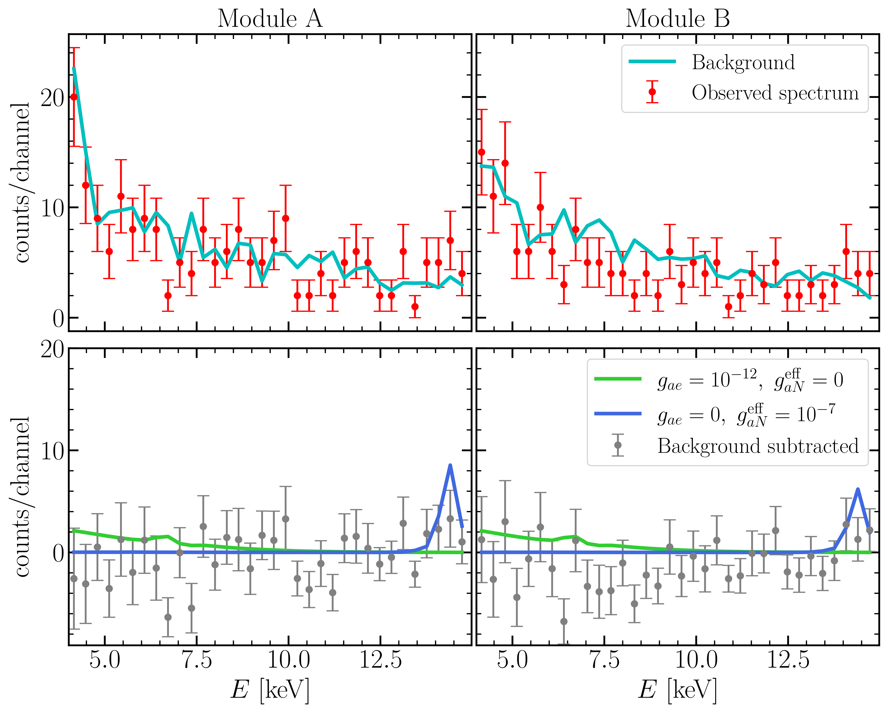
图注：(\textbf{Top row})~NuSTAR counts in the source region (red) and in the background region (cyan), the latter rescaled to the source area, for module A (\textbf{left}) and module B (\textbf{right}). (\textbf{Bottom row}) Background subtracted counts in the source region (gray dots) and the photon signal from axion-electron (green line) and axion-nucleon (blue line) couplings, and for an axion-photon coupling corresponding to the $95\%$ CL limit. These lines are relative to an axion mass of $m_{a}=10^{-8}\, \rm eV$.
对应解读：对应“建议重点查看的图表”第3项和“关键图表逐图导读”图3，以及模型拟合段落中关于NuSTAR计数谱、背景扣除、轴子模板和残差诊断的讨论。
入选理由：这是最直接支撑论文核心拟合的图：同时给出NuSTAR A/B两个模块的源区计数、背景区计数、背景扣除后的谱，以及在95% CL上限处的轴子-电子和轴子-核子信号模板。它能让读者判断轴子模板相对于观测残余的大小，是理解耦合上限如何从数据中得出的关键图。
来源与置信度：\(arxiv_source\)；high；\(arxiv_source\) / main.tex:figure[3]
Fig04
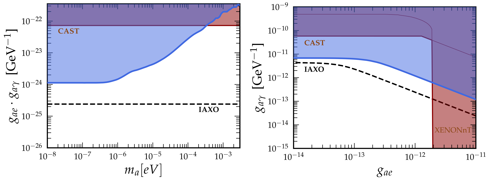
图注：(\textbf{Left}) 95\% CL bound on the product $g_{ae}\cdot g_{a\gamma}$ obtained in this work (blue region). We also show the limit from the laboratory experiment CAST~\(\cite{CAST:2025klf},\) and the projected sensitivity of IAXO~\(\cite{IAXO:2019mpb}.\) (\textbf{Right}) 95\% CL exclusion limit on the $g_{a\gamma}-g_{ae}$ plane (blue region), valid for any $m_a\lesssim10^{-6}\, \rm eV$. The excluded region by CAST is obtained merging the bounds from~\(\cite{CAST:2024eil,CAST:2025klf}.\) The excluded region by XENONnT~\(\cite{XENON:2022ltv},\) and the projected sensitivity of IAXO~\(\cite{IAXO:2019mpb}\) are also included in the plot.
对应解读：对应“建议重点查看的图表”第4、5项和“关键图表逐图导读”图4、图5中关于轻轴子区间下限、耦合乘积上限及与CAST、IAXO、XENONnT比较的讨论。
入选理由：该图给出本文最重要结果之一：95% CL的g_ae·g_aγ上限，并展示g_aγ-g_ae平面排除区。它直接对应摘要中的主要数值结果，可帮助读者避免把耦合乘积限制误读为单个耦合限制，同时展示与实验约束的相对位置。
来源与置信度：\(arxiv_source\)；high；\(arxiv_source\) / main.tex:figure[4]
Fig05
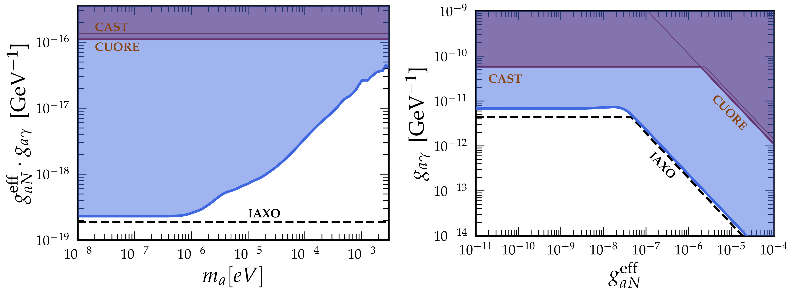
图注：(\textbf{Left}) 95\% CL bound on the product $g_{aN}^{\rm eff}\cdot g_{a\gamma}$ obtained in this work (blue region). We also show the limits from the laboratory experiments CAST~\(\cite{CAST:2009jdc}\) and CUORE~\(\cite{Li:2015tyq},\) and the projected sensitivity of IAXO~\(\cite{DiLuzio:2021qct}.\) (\textbf{Right}) 95\% CL exclusion limit on the $g_{a\gamma}-g_{aN}^{\rm eff}$ plane (blue region), valid for any $m_a\lesssim10^{-6}\, \rm eV$. The CAST bound is a combination of the bounds from~\(\cite{CAST:2024eil}\) and~\(\cite{CAST:2009jdc}.\) The other lines show the bound from CUORE~\(\cite{Li:2015tyq},\) and the projected sensitivity of IAXO~\(\cite{DiLuzio:2021qct}.\)
对应解读：对应“建议重点查看的图表”第4、5项和“关键图表逐图导读”图4、图5中关于g_aN^eff·g_aγ耦合乘积限制及CAST、CUORE、IAXO比较的讨论。
入选理由：这是论文另一条主结果线，给出核子耦合主导情形下的95% CL上限和g_aγ-\(g_aN\)^eff参数平面。由于摘要中特别强调g_aN^eff·g_aγ限制，该图与Fig04互补，完整呈现电子与核子两类产生机制的约束结论。
来源与置信度：\(arxiv_source\)；high；\(arxiv_source\) / main.tex:figure[5]
Fig01
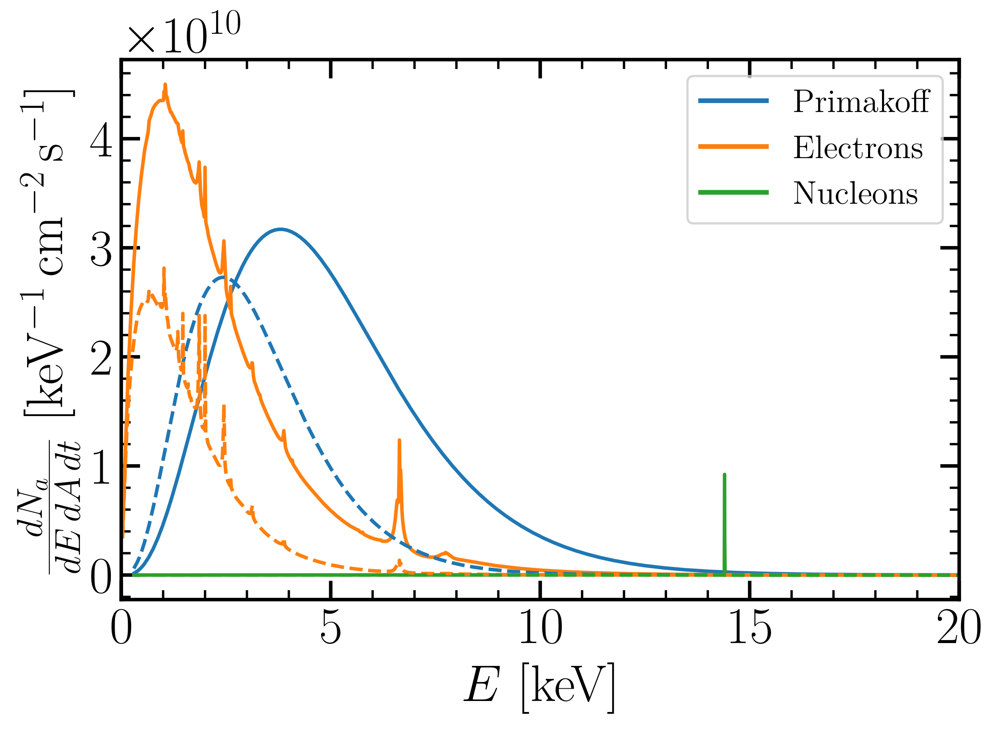
图注：Comparison of axion fluxes originating from a solar disk of radius $0.1\,R_{\odot}$ centered on the Sun (solid lines) and the annulus $0.15\,R_\odot\leq r \leq0.3\,R_\odot$ (dashed lines); respectively our source and background regions. The Primakoff contribution is computed for a coupling $g_{a\gamma}=10^{-10}\,\mathrm{GeV}^{-1}$, the electron-induced component for $g_{ae}=10^{-12}$, and the nucleon-induced contribution for $g_{aN}^{\mathrm{eff}}=10^{-8}$.
对应解读：对应“建议重点查看的图表”第1项和“关键图表逐图导读”图1中关于太阳轴子能谱、电子/核子/Primakoff不同产生机制以及源区和背景环带差异的讨论。
入选理由：该图展示不同产生机制的太阳轴子通量谱，并区分源区与背景区，是理解NuSTAR能谱模板来源的基础。它能帮助读者判断电子诱导、核子诱导和Primakoff成分的谱形差异及其与观测能段的关系。
来源与置信度：\(arxiv_source\)；high；\(arxiv_source\) / main.tex:figure[1]
Fig06
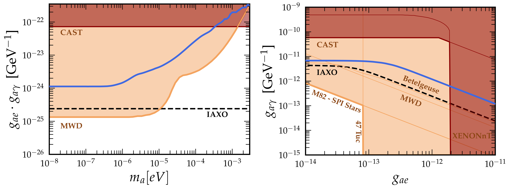
图注：(\textbf{Left}) Comparison between the 95\% CL bound on the product $g_{ae}\cdot g_{a\gamma}$ obtained in this work (blue line), the limits and sensitivities from laboratory experiments shown in the left panel of Fig.~\(\ref{fig:Bounds_experimental_gae},\) and the astrophysical bound obtained from axion-photon conversions in magnetic white dwarfs (MWD)~\(\cite{Dessert:2021bkv}.\) (\textbf{Right}) Comparison of our bound in the $g_{a\gamma} - g_{ae}$ plane (blue line) with the limits and sensitivities from laboratory experiments shown in the right panel of Fig.~\(\ref{fig:Bounds_experimental_gae}\) and with astrophysical constraints. In this plot we assume $m_a\lesssim10^{-6}\rm eV.$ The astrophysical constraints are based on observations of Betelgeuse~\(\cite{Xiao:2022rxk},\) M82~\(\cite{Ning:2025tit},\) nearby pre-supernova stars (SPI Stars)~\(\cite{Mittal:2025xwt},\) magnetic white dwarfs (MWD)~\(\cite{Dessert:2021bkv},\) and from white dwarf cooling in 47 Tucanae~\(\cite{Fleury:2025ahw}.\) The limits from~\(\cite{Ning:2025tit,Xiao:2022rxk,Mittal:2025xwt}\) apply to axion masses $m_a\lesssim10^{-11}\, \rm eV$. The limits from M82 and from pre-supernova stars (we show the strongest bounds presented in~\cite{Mittal:2025xwt}) are very similar and therefore appear as a single line.
对应解读：对应“建议重点查看的图表”第5项和“关键图表逐图导读”图5中关于g_ae相关约束与实验、白矮星、Betelgeuse、M82、预超新星等天体物理约束比较的讨论。
入选理由：该图把本文g_ae·g_aγ结果放入更宽的实验和天体物理约束背景中，适合支撑日报中关于“不同约束对象和质量适用范围不可混淆”的提醒。其价值主要在横向比较，而不是展示拟合本身。
来源与置信度：\(arxiv_source\)；high；\(arxiv_source\) / main.tex:figure[6]
Fig07
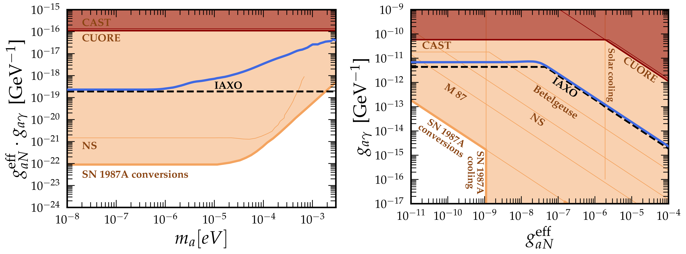
图注：(\textbf{Left}) Comparison of the 95\% CL bound on the product $g_{aN}^{\rm eff}\cdot g_{a\gamma}$ obtained in this work (blue line) with the limits and sensitivities from laboratory experiments shown in the left panel of Fig.~\(\ref{fig:Bounds_experimental_gaN}\) and with astrophysical bounds. The astrophysical limits shown are from neutron stars (NS)~\(\cite{Ning:2025fqd}\) and from SN1987A, derived from the results of~\(\cite{Manzari:2024jns}\) (\textbf{Right}) Comparison of the bound in the $g_{a\gamma} - g_{aN}^{\rm eff}$ plane obtained in this work (blue line), with the limits and sensitivities from laboratory experiments shown in the right panel of Fig.~\(\ref{fig:Bounds_experimental_gaN}\) and with other astrophysical probes. In this plot we assume $m_a\lesssim10^{-6}\,\rm eV.$ The astrophysical bounds are based on searches of axion-photon conversion signals from SN1987A~\(\cite{Manzari:2024jns},\) neutron stars (NS)~\(\cite{Ning:2025fqd},\) Betelgeuse~\(\cite{Candon:2025vpv},\) M87~\(\cite{Ning:2025kyu},\) and from the cooling of the Sun and SN1987A~\(\cite{DiLuzio:2021qct}.\) The limits from~\(\cite{Candon:2025vpv,Ning:2025kyu}\) apply to axion masses $m_a\lesssim10^{-11}-10^{-10}\, \rm eV$. The constraints from~\(\cite{Manzari:2024jns}\) shown here apply to $m_a\lesssim10^{-10}\, \rm eV$, while for larger masses they reduce to the ones in the left panel of Fig.\(\ref{fig:Bounds astrophsysical gaN}.\)
对应解读：对应“建议重点查看的图表”第5项和“关键图表逐图导读”图5中关于g_aN^eff相关约束与实验、SN1987A、中子星、Betelgeuse、M87及冷却约束比较的讨论。
入选理由：该图是核子耦合情形下的综合比较图，补充Fig05的实验比较，展示本文NuSTAR限制相对于其他天体物理探针的位置。它有助于解释本文结果的竞争力和适用质量范围，但科学支撑性略低于直接数据谱和主约束图。
来源与置信度：\(arxiv_source\)；high；\(arxiv_source\) / main.tex:figure[7]
强相关工作
这篇工作与 CAST/IAXO 型太阳轴子日望远镜直接相关，但转换磁体从地球实验室转移到了太阳大气。可检索关键词包括 “solar axion helioscope”, “NuSTAR solar axion”, “axion photon conversion solar magnetic field”, “axion electron coupling solar X-ray”。相似工作还包括用 Hinode、RHESSI、FOXSI 或其他太阳 X 射线数据寻找轴子诱导光子的研究。
基础理论方面，它连接了 Peccei-Quinn 轴子、Raffelt 恒星能量损失理论、Primakoff 太阳轴子通量和轴子-光子混合传播。相反或张力方向主要来自两类：一类认为太阳 X 射线背景和磁场模型系统误差过大，天体约束不如实验室干净；另一类是恒星冷却异常可能偏好非零 \(g_{ae}\) 的区域，需要与本文上限和其他天体约束共同比较。检索关键词可用 “stellar cooling axion electron coupling”, “CAST axion limit”, “IAXO sensitivity”, “solar corona axion conversion systematic uncertainty”。
相似工作：
- https://arxiv.org/abs/2605.26265
- https://arxiv.org/abs/1705.02290
- https://arxiv.org/abs/1904.09155
基础理论 / 方法工作：
- https://doi.org/10.1103/PhysRevLett.38.1440
- https://doi.org/10.1103/PhysRevLett.40.279
- https://doi.org/10.1103/PhysRevLett.40.223
- https://doi.org/10.1007/978-3-540-73518-2
相反观点 / 张力线索：
- https://arxiv.org/abs/1708.02111
- https://arxiv.org/abs/1208.3167
说明
评分由 LLM 给出初评，再由本地阈值策略过滤；IACT、TeV 伽马射线和高能中微子天文学按重点方向处理。